'
0371
'T Frietoord
🇧🇪 België · Lede
Horeca met speelruimte
Lekkere frituur met ruime speelhoek. Heel vriendelijke uitbaters. Ook veel lactose- en glutenvrije opties.
via @mamavindtKidsproof eten
948 restaurants, café's en frituren met speelruimte voor kinderen, samengesteld door @mamavindt.
Alle 948 adressen op deze pagina zijn samengesteld door @mamavindt, die kidsproof horeca en frituren in kaart brengt. Wij hebben de beschrijvingen overgenomen en waar mogelijk een website en foto toegevoegd — niet elk adres kon zelfstandig geverifieerd worden.
Volg @mamavindt op Instagram voor meer kidsproof tips en de originele, actuele Google Maps-kaarten.
Aantal adressen per land
Geen adressen gevonden met deze filters.
Restaurants, brasserieën en cafés met een speelhoek of -ruimte voor kinderen.
864 adressen🇧🇪 België · Lede
Lekkere frituur met ruime speelhoek. Heel vriendelijke uitbaters. Ook veel lactose- en glutenvrije opties.
via @mamavindt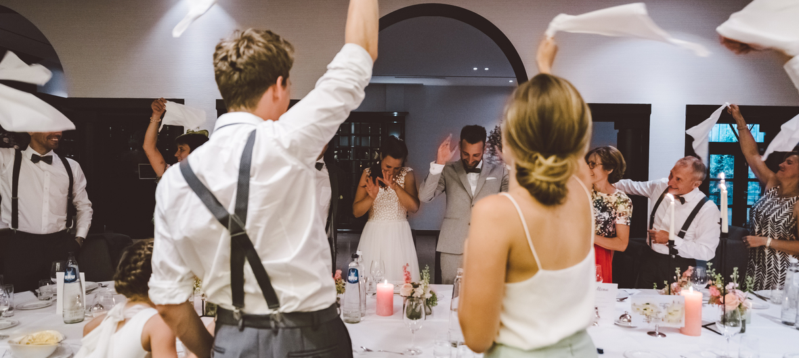
0372🇧🇪 België · Linter
t Hoevendrieske in Drieslinter is een zorgboerderij voor personen én dieren met een beperking. Hier is een grote speeltuin aan (afgesloten) Binnen is er een leuke speelhoek met keukentje. Je kan hier lekkere borrelplanken eten of ijsjes.
🇧🇪 België · Oostende
Bordspelwinkel in Oostende waar je zo’n 700 bordspellen kan spelen onder het genot van een alcoholvrij drankje. De spellen van HABA beginnen vanaf 2 jaar. Als volwassene betaal je 2€/uur, kindjes spelen gratis.
🇧🇪 België · Maaseik
Brasserie waar je ook gewoon iets kan drinken. Ook pannenkoeken/wafels. Buitenspeeltuin.
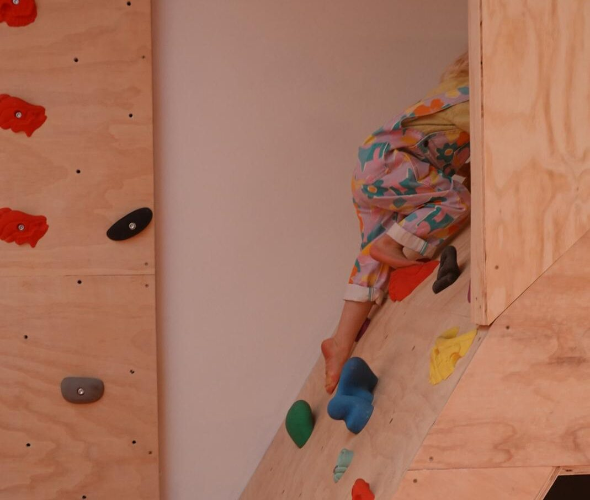
0375🇧🇪 België · Alken
Koffiehuisje met afgesloten speeltuin. Diverse maaltijden van brunch tot diner.
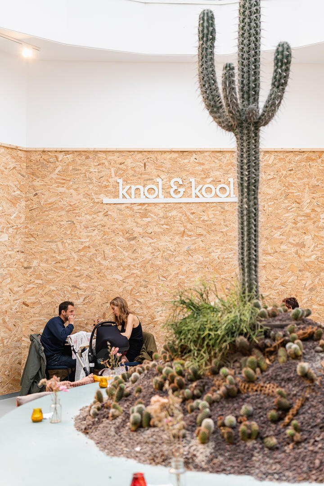
0376🇧🇪 België · Oostkamp
Heel gekende brasserie achter het sportcomplex De Valkaart in Oostkamp. Buiten is er een grote speeltuin en soms ook een springkasteel. Er is ook een skatepark (uit het zicht van de ouders) en een basketterrein.
🇧🇪 België · Gentbrugge
Echte brasseriekeuken (lunch en avondeten), af en toe ook ontbijt of brunch. Groot terras. Buiten is er ruimte voor kinderen om te spelen en er wordt ook af en toe een springkasteel opgeblazen.
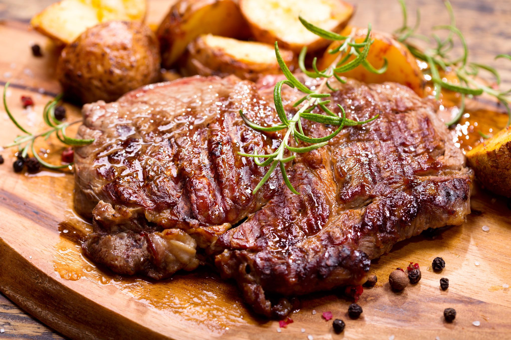
0378🇧🇪 België · Nerem
Frituur met speeltuin tegenover het terras.
via @mamavindt🇧🇪 België · Kinrooi
Leuke frituur, ook veel pasta’s en schotels verkrijgbaar. Leuke, ruime speelkamer. Bij goed weer ook terras.
via @mamavindt🇧🇪 België · Deinze
Frituur. Schommel in de boom en picknickbankjes voor kinderen aanwezig. Kinderstoelen aanwezig. Ook ijsjesautomaat voor na de frietjes.
via @mamavindt🇧🇪 België · Bree
Frituur met speelgelegenheid voor kinderen. Enkel binnen.
via @mamavindt🇧🇪 België · Oudsbergen
Brasserie in Oudsbergen. Veel zitplaatsen zowel binnen als buiten. Binnen is een aparte speelruimte voor de kinderen. Buiten is er een speeltuin voor de kinderen die afgeschermd is zodat de kinderen niet weg kunnen lopen. Uitgebreide menukaart, terug te vinden op de website. Er worden ook thema-ontbijten georganiseerd, bv. met Sinterklaas, Pasen, moeder- en vaderdag, ... Voor de rest kan je iedere zon- en feestdag komen ontbijten op reservatie. En ben je vrij om te komen lunchen of dineren.
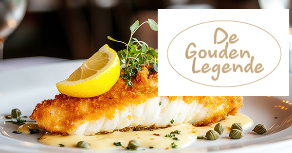
0383🇧🇪 België · Menen-Lauwe
't Goed ter Heule is een biologisch landbouwbedrijf met zelfpluk (geen abonnement) van groenten, fruit, snijbloemen, .... met dieren, hoevewinkel en talrijke educatieve en recreatieve mogelijkheden. Zelfpluktuin met winkeltje en dieren. Daarnaast ook een bar met een heel leuk overdekt terras. Leuk om iets te drinken of te lunchen terwijl de kinderen spelen in de zandbak, met fietsjes of met de dieren (schapen, paarden, konijntjes, eenden, kippen, ganzen). Eetkaffee geopend in de lente en zomer. Check website voor de openingsuren.
🇧🇪 België · Weelde
Dit is een buitenspeeltuin met een mooi en groot terras waar je iets kan drinken en iets kleins kan eten zoals broodjes en burgers, croques, uitsmijters, borrelhapjes, diverse ijscoupes, salades en enkele eenvoudige voor- en hoofdgerechten. Je kan er ook een feest geven met o.a. BBQ-arrangementen.
🇧🇪 België · Diksmuide
Zoals de naam al zegt is ‘t kakelend kippenmuseum in de eerste plaats een fijne kinderboerderij, met niet alleen een waanzinnig grote collectie gevogelte van alle pluimage, maar ook klassieke (paard, koe, geit, enz.) en minder klassieke (struisvogel, hert, …) boerderijbewoners. Je betaalt hiervoor enkele euro’s per persoon toegang. Je hoeft echter geen toegang tot het museum te betalen om te genieten van een drankje op het aangename, afgesloten boerenhof. Het self-service café biedt naast leuke streekbiertjes en een ruime keuze aan aperitief, frisdranken & warme dranken ook zoete snacks (wafel, pannenkoek, ijsjes) uiteraard allemaal ambachtelijk gemaakt met producten van de boerderij of de streek. Terwijl de grote mensen rustig van een drankje genieten, kunnen de kleintjes vrijuit spelen op de binnenkoer, waar het café zelf allerhande fietsjes, steps, autootjes e.d. voorziet waarop de kids zich kunnen uitleven. En ook in de loods valt er nog heel wat speelgoed te ontdekken. Een ongedwongen sfeer waarbij je toch je kleintje in het oog kan houden, zonder de hele tijd achter hen aan te moeten hollen? ‘T kakelend kippenmuseum is the place to be!
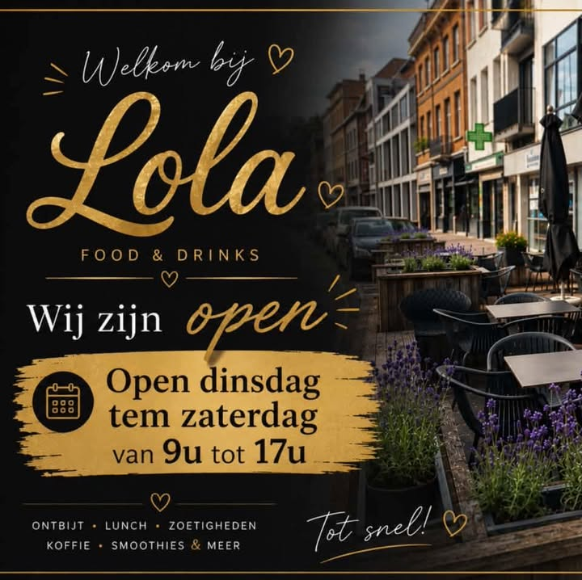
0386🇧🇪 België · Beverlo
Gezellig ijssalon met hoevewinkel, buiten aan het terras is er een trampoline voor de kinderen. In 2001 begonnen we met de productie van ambachtelijk hoeveijs. Ons ijs wordt ter plaatse gemaakt van verse geitenmelk, wat resulteert in cholesterolarm en licht verteerbaar ijs, zonder toevoegingen en kleurstoffen. Bij ons kan je proeven van heerlijk ambachtelijk ijs, ter plekke bereid met als hoofdingrediënt verse geitenmelk. Kleurstoffen zijn taboe en het ijs is cholesterolarm en licht verteerbaar. Naast ijscoupes kan je bij ons ook schepijs krijgen. Of als de honger wat groter is, pannenkoeken, wafels, zelfbereide kaastaart en appeltaart. ONTBIJT OP RESERVATIE Op zondagvoormiddag serveren we een heerlijk uitgebreid ontbijt aan tafel, kernwoorden zijn hier korte keten en zero waste. Ook mogelijkheden om een feest te organiseren.
via @mamavindt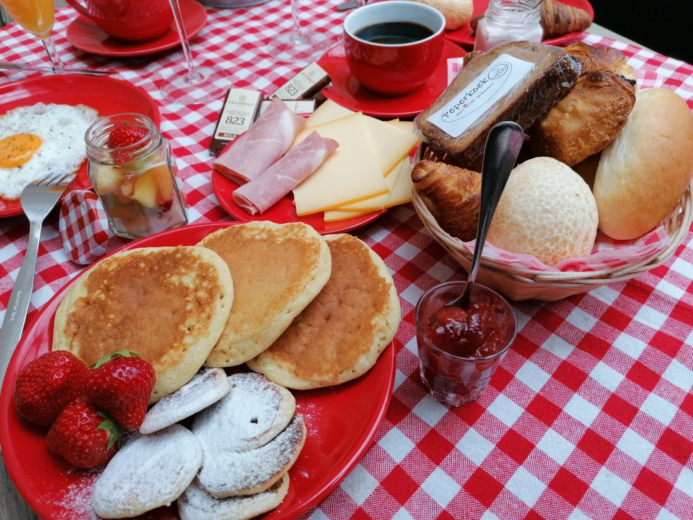
0387🇧🇪 België · Steenokkerzeel
Zeer lekkere brasserie-restaurant aan het kerkplein in Steenokkerzeel, met voornamelijk Franse keuken. Eerlijke prijzen ook! Kleine speeltuin aan het mooie terras buiten met glijbaan, schommel, trampoline en speelhuisje. Binnen geen speelruimte.
🇧🇪 België · Brecht
Frituur met gevarieerd assortiment aan frietjes, verse bereidingen, snacks, broodjes,… Buiten een overdekt terras en een heel uitgebreide speelgelegenheid. Kinderstoelen beschikbaar.
via @mamavindt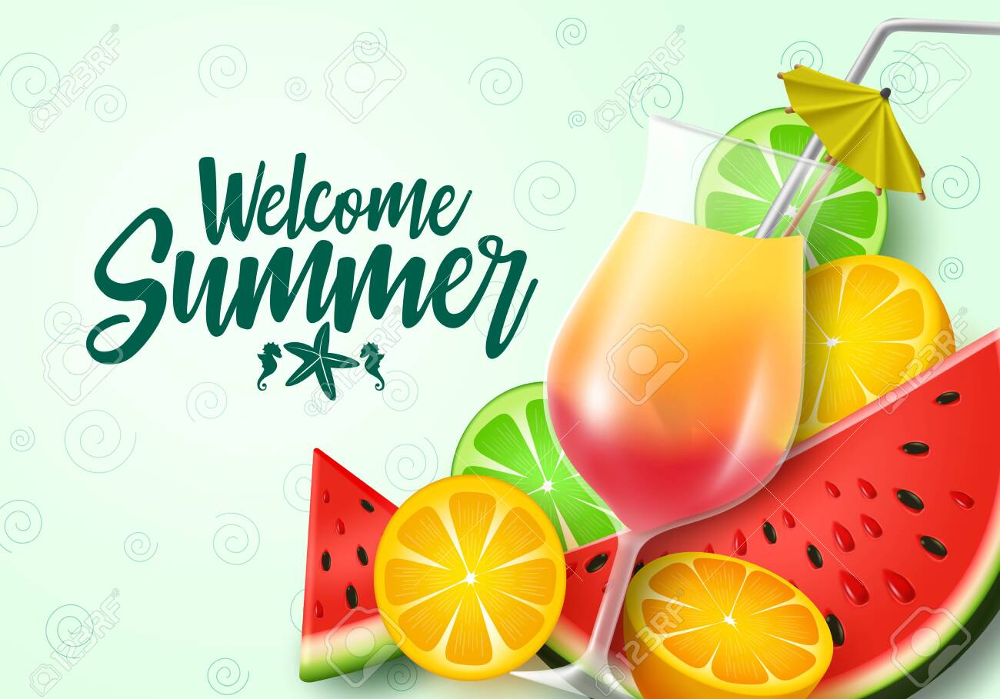
0389🇧🇪 België · Lauwe
Je kan er terecht voor een hapje en een drankje. De kinderen kunnen boven het eetgedeelte spelen en bij mooi weer ook buiten in de tuin op het terras. Een moment van rust voor jong en oud en voor de kinderen een moment van fun en plezier. Let op: dit is een recent veranderde zaak. De website in Google is nog niet correct. Geef handmatig https://www.tkidsmoment.be/ in.
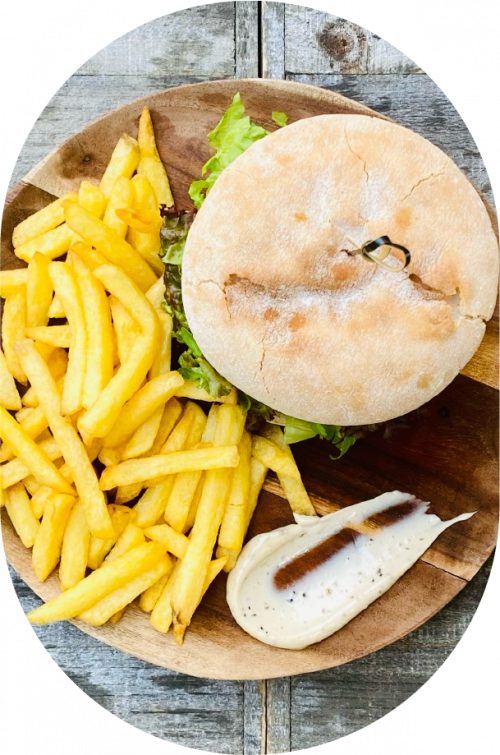
0390🇧🇪 België · Diksmuide
In 't Land van Vlierbos is er voor iedereen wat te beleven! Jong en oud kan er genieten van de sfeervolle omgeving, waar je zowel actief kunt zijn als rustig kunt genieten van al het moois dat de natuur te bieden heeft. Ook picknicken is mogelijk. Bij Café IJzerboomgaard kun je terecht voor lokale, biologische en fairtrade dranken, gecombineerd met lichte maaltijden. Er is volop te ontdekken: een kinderboerderij waar de kleintjes zich kunnen vermaken, een waterspeelzone voor wat verkoeling, een grote speeltuin voor de avontuurlijke kinderen en zelfs een zelfpluktuin waar je de natuur van dichtbij kunt ervaren. Kortom, een ideale plek voor een dag vol plezier, ontspanning en lekker eten!
🇧🇪 België · Lille
Leuke brasserie voor lunch en diner. Typisch Vlaamse keuken, met ruime kinderkaart. Buiten speelgelegenheid voor kinderen en een weide met diertjes.
🇧🇪 België · Woumen
IJssalon met variatie aan roomijs, sorbet, coupes, pannenkoeken, wafels, koffie, ... Je kan zowel binnen als buiten zitten. Binnen zijn eetstoelen voorzien, buiten een speelzone met houten speeltoestel, ballen, springkasteel.
🇧🇪 België · Hooglede-Gits
Kleinschalige en gezellige bloemenpluktuin en fiets- en wandelstopplaats met ook verschillende dieren. In de zomervakantie 5 dagen per week open. Daarbuiten beperkt open op woensdag en zondag tijdens het bloemenplukseizoen (best nakijken op de website of sociale media). Speelgelegenheden voor kinderen (speelhut, schommel, grote blokken, soms ook een springkasteel. Mogelijkheid om iets te drinken en een ijsje te eten. Ook een ruimte om binnen te zitten.
🇧🇪 België · Lokeren
''t Mysterie in Lokeren: brasserie voor lunch en diner. Ook zeker voldoende opties voor kleine kindjes. Met leuke, afgesloten speeltuin met verschillende toestellen. Ook springkasteel aanwezig. Verwarmd en overdekt terras achteraan. Parkeren kan gratis, langs de straat. Fietsen kunnen weggezet worden.
🇧🇪 België · Moortsele
Fijn eetcafé met gezellige tuin, waar je ook kan schommelen met af en toe springkasteel. Enkel open in de zomer op zondag. Je kan er lekkere snacks eten.
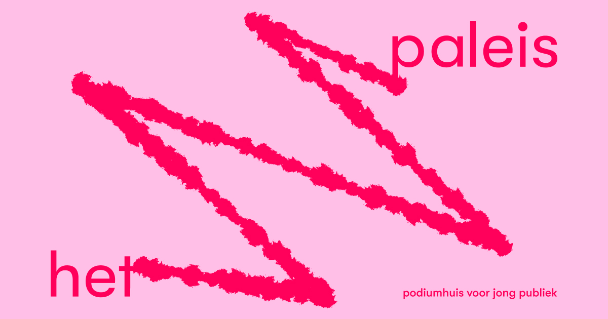
0396🇧🇪 België · Zonnebeke
Leuke brasserie met ruim speelaanbod binnen en buiten. Lekker eten en heel wat voorzieningen voor kleine kindjes ook. Uitgebreide kindergerechten en heel vriendelijk.
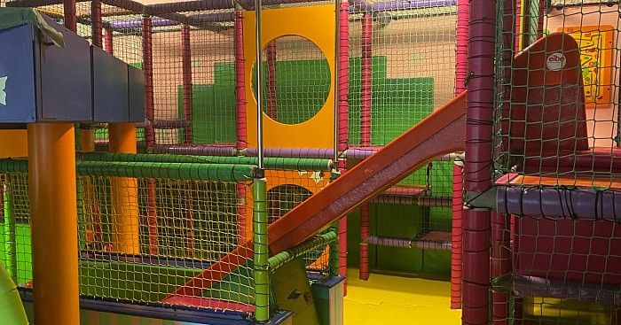
0397🇧🇪 België · Eksaarde
Kleine brasserie met kleine eenvoudige, maar heel lekkere kaart. Maken gebruik van eigen hoeveproducten. Altijd een springkasteel ter beschikking op terras. Achter het terras een kleine miniboerderij en kleine speeltuin. Ligt op 5 min. van Provinciaal domein Puyenbroeck in Wachtebeke.
🇧🇪 België · Sijsele
Brasserie in complex Sanapolis. Tea-room/diner en bar. Buiten een groot speelbos, grote zandbak met schommel en huisje in. Heel wat dieren om te kijken. Binnen een leuke speelkamer voor de kinderen. Extra andere activiteiten mogelijk na inschrijven zoals alpacawandeling, Halloweentocht, bingo-avond, …
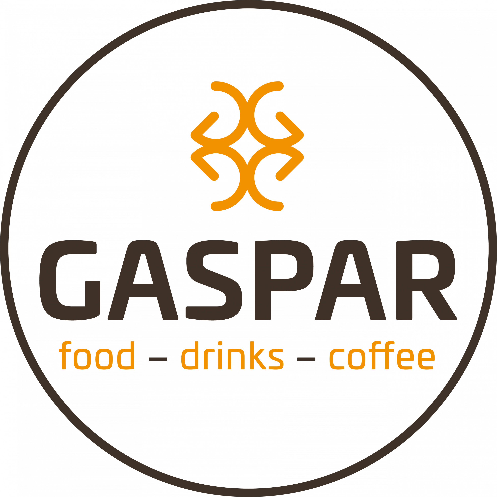
0399🇧🇪 België · Kruibeke
Brasserie met uitgebreide (kinderen)kaart. Boerderijgedeelte is net iets minder maar hele leuke buitenspeeltuin en voetbalvelden en voor jongere kinderen ook leuke binnenspeeltuin. Leuke brasserie waar je kunt lunchen, een pannenkoek kunt eten of dineren. Er is ook een feestzaaltje. Een toffe binnenspeelruimte voor grotere en kleinere kindjes, diertjes buiten en een grote buitenspeeltuin.
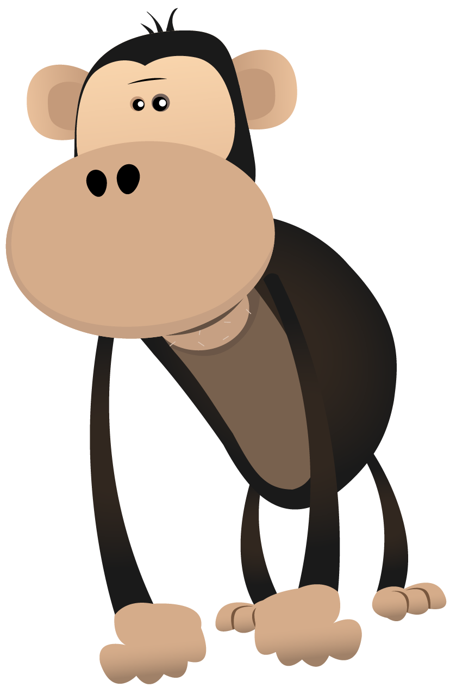
0400🇧🇪 België · Pelt
Brasserie met terras gelegen aan grote speeltuin met verschillende speelzones voor klein en groot. Je kan hier iets drinken of eten. In de zomer is er ook een ijsbar.
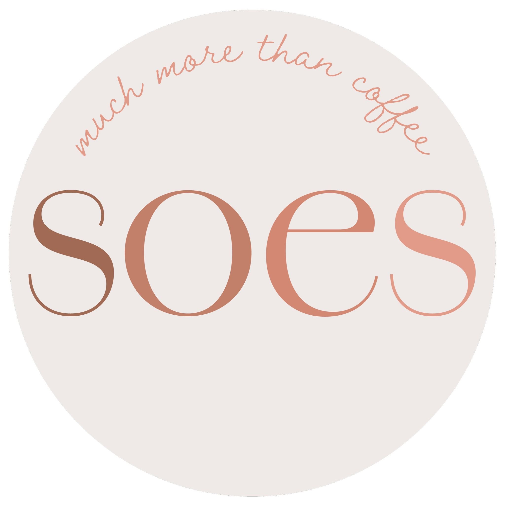
0401🇧🇪 België · Bree
Zaak met ambachtelijk hoeve-ijs en sorbet. Je kan er ook koffie, milkshake, bier en frisdrank kopen. De zaal bevindt zich bij/in een hoeve/boerderij. Er is een buitenterras maar ook een mooie grote binnenruimte die je ook kan huren voor feesten. Voor de kinderen zijn er allerlei fietsjes, steps en gocarts ter beschikking waarmee ze tussen de stallen kunnen racen. Ook zijn er 2 trampolines, een zandbak met speelgoed en een XL 4-op-een-rij spel. Ze zijn hier heel gemoedelijk en kindvriendelijk en het ijs is echt lekker!
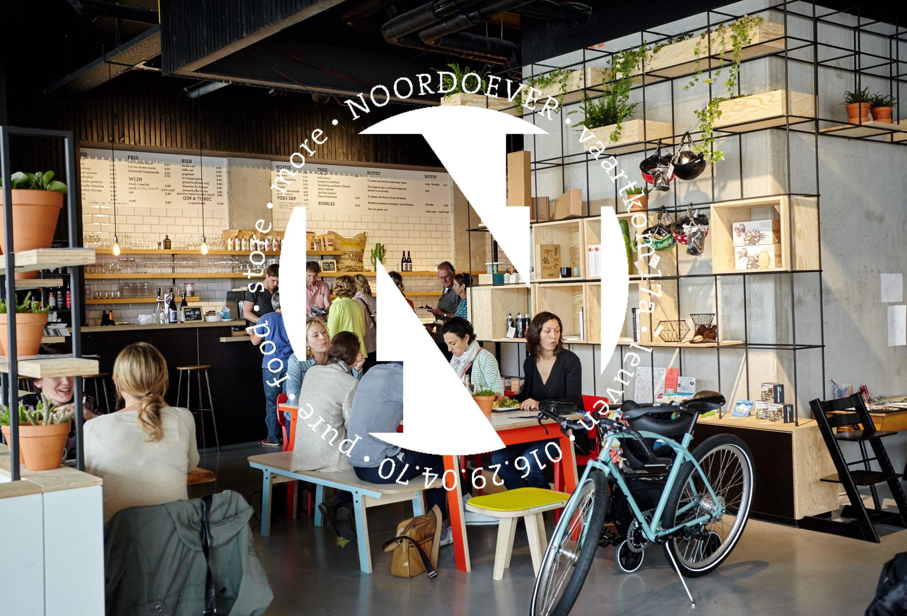
0402🇧🇪 België · Wevelgem
Gezellig restaurant met heel mooi terras en fijne speelruimte buiten voor de kinderen. Je kan er heel lekker eten en drinken. De speelruimte is aan het terras, dus je kan de kinderen gerust loslaten terwijl je lekker geniet.
🇧🇪 België · Tiegem
Leuk brasserie in Tiegem. Binnen een plaats waar kinderen kunnen spelen terwijl ouders gezellig kunnen eten van een uitgebreide kaart. Kindergerechten zeker aanwezig. Voor de allerkleinsten een verzorgingstehuis voorzien. Bij mooi weer is er wat speelgoed buiten (glijbaantje) alsook een springkasteel. De ruimte buiten is mooi afgesloten zodat de kinderen niet weg kunnen. Mooi terras bij mooi weer en zo zicht op het speelgebeuren van de kinderen.
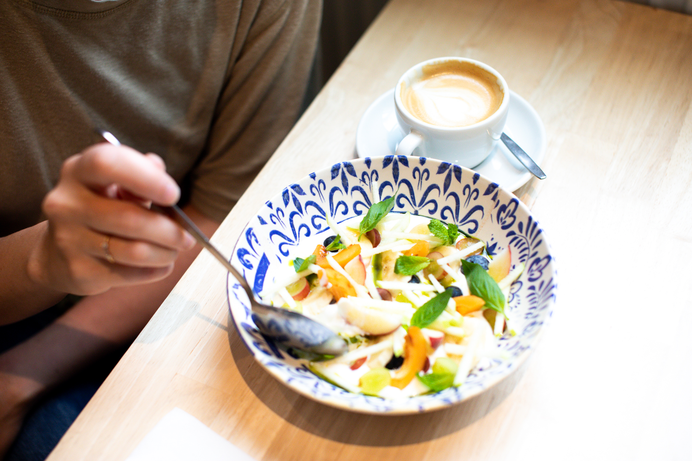
0404🇧🇪 België · Lier
Kom hier voor een verfrissend drankje of lekker hapje/dessertje om je honger te stillen. Open tot 18u. Zoals de naam het zelf zegt, is dit een plaats waar veel dieren zitten, waaronder struisvogels, geitjes, kippen, vogels, konijnen, ... Ze kweken ook zelf groenten die je kan aankopen. Verder zijn de pannenkoeken gemaakt met de struisvogeleieren, heerlijk! Er is meer dan genoeg te doen, zowel binnen als buiten, waardoor het geschikt is voor elk weer. Kinderen kunnen zich uitleven in de binnen- en buitenspeeltuin, de springkastelen en natuurlijk bij de vele dieren. Ideaal om urenlang te genieten!
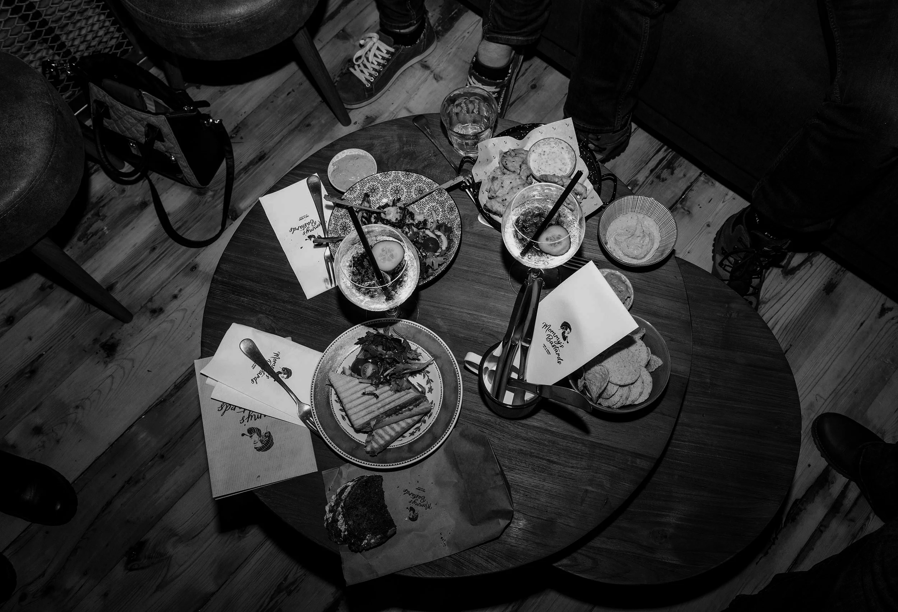
0405🇧🇪 België · Westrozebeke
Zeer vriendelijke bediening. Uitgebreide drink- en eetkaart. Speelhoek binnen en buitenspeeltuin.
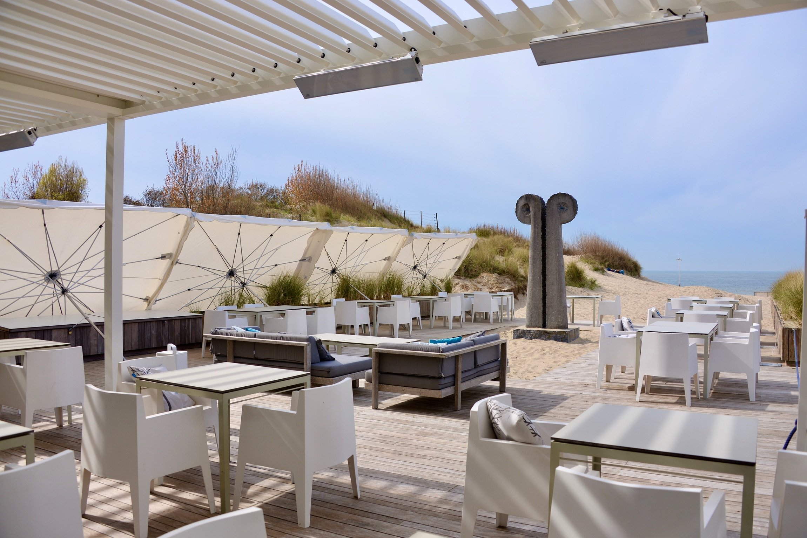
0406🇧🇪 België · Arendonk
Horeca voor ontbijt, lunch, diner, drankjes. Bestellen aan bar. Simpele kaart. Binnen een klein speelhoekje, buiten een grote tuin met zandbak, grasveld met berg en fietsjes/tractors. In de schuur een springkasteel. Simpel, goedkoop en leuk speeluitje!
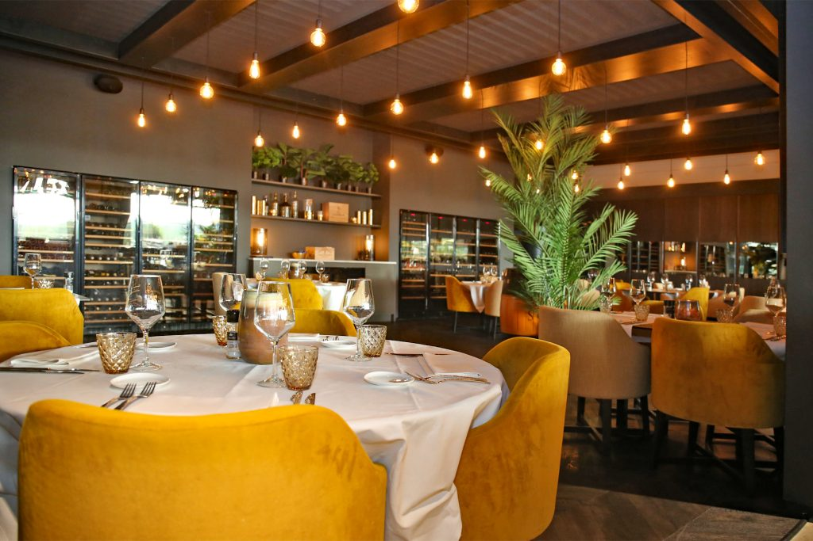
0407🇧🇪 België · Oudenaarde
Lekker restaurant met jonge vernieuwende chef in de keuken. Kleine speelruimte binnen voor de kindjes.
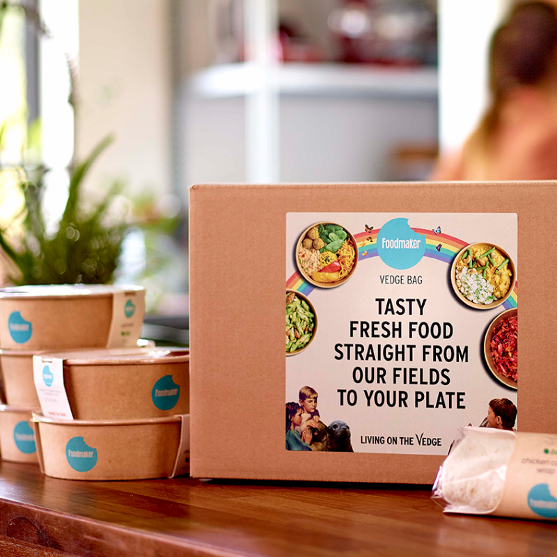
0408🇧🇪 België · Menen
Mooie brasserie met veel speelgelegenheid buiten voor kleine en grotere kinderen.
via @mamavindt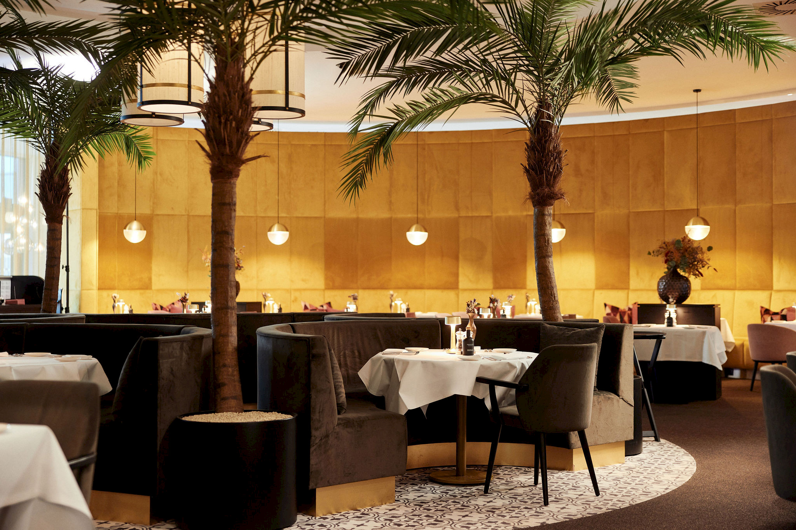
0409🇧🇪 België · Heusden-Zolder
Leuke kinderboerderij. Enkel in de zomermaanden open (woensdag, vrijdag, zaterdag en zondag). Er staat pernament een ijskraam. In de schuur is er ook een speelzone met hooi. Naar huis gaan zal een uitdaging worden.
🇧🇪 België · Berlare
Restaurant met zicht op het Donkmeer. Terwijl je gezellig tafelt kunnen de kinderen ravotten in het binnenspeeltuintje.
via @mamavindt🇧🇪 België · Middelkerke
Leuke brasserie met buitenspeeltuin en ook een kleine ruimte indoor met wat speelgoed voor de kids.
🇧🇪 België · Sint-Niklaas
Frituur met een aparte speelruimte voor de kinderen.
🇧🇪 België · Roeselare
In de bibliotheek van Roeselare heb je ARhus Café. Kan je gaan lunchen of een taartje gaan eten. Kindjes kunnen spelletjes spelen, boekjes lezen, spelen... Ze kunnen dit halen en mee spelen aan tafel.
🇧🇪 België · Antwerpen
Brasserie ""Aan het strand van Oostende"" op de Dageraadplaats in Antwerpen. Een kleurrijke kindvriendelijke plek met groot (verwarmd, overdekt) terras op een verkeersvrij plein met buitenspeeltuin, basketbalveldje en voetbalveldje, 7/7 doorlopend open van 9u -21u/22u en welkom voor ontbijt, brunch, lunch, diner of gewoon een drankje. Ze hebben ook heerlijke pannenkoeken en wafels en er staan verschillende kindergerechten op de kaart.
🇧🇪 België · Tiegem
Heel leuk koffiehuis met enkele dieren en lekkere taartjes. Open op zaterdag en zondag van 13u30 tot 18u (juli en augustus tot 20u). Op weekdagen open voor groepen/dierenworkshops Dit na reservatie. Er worden verschillende leuke events georganiseerd, zoals bv. ontbijtzondagen, workshops, ... Check hiervoor de website.
🇧🇪 België · Achouffe
Leuke brasserie dat uitsteekt boven het kleine dorpje Achouffe (dat van de brouwerij ja ;-)). Zeer ruim terras en leuke buitenspeeltuin.
🇧🇪 België · Bohan
Pizzeria die zich bevindt op een camping, maar dus ook voor externe gasten beschikbaar is. Voor het restaurant is er een buitenspeeltuin. Pizza’s zijn heerlijk!
🇧🇪 België · Waasmunster
Leuk restaurant met een buiten- en binnenspeeltuin. Met een groot terras zowel openlucht als overdekt zodat je dichtbij de speeltuin kan zitten.
🇧🇪 België · Kontich
Brasserie met groot buitenterras, waar je lekker kan eten. Goed zicht op de zeer ruime buitenspeeltuin. Brunch om de 2 weken, op reservatie. Check de website voor alle info.
via @mamavindt🇧🇪 België · Bredene
Frituur en eethuis met terras en buitenspeelpleintje.
via @mamavindt🇧🇪 België · Zonnebeke
Leuke kinderboerderij die zich specialiseert in alpaca’s. Ze bieden rondleidingen en wandelingen aan, maar je kan er ook gewoon zonder betalen binnen om de alpaca’s te bewonderen. Er is ook een brasserie bij waar je de heerlijkste vers gemaakte pannenkoeken kunt eten. Buiten heb je een prachtige nieuwe speeltuin en springkussens. Terwijl je binnen twee springkastelen hebt om te spelen. Drankjes en desserts zijn schappelijk van prijs.
🇧🇪 België · Tongeren
Kindvriendelijke brasserie in het hartje van Tongeren. Het ligt net naast het Gallo-Romeins Museum. Je kan de zaak zelfs bereiken via een doorgang in het museum. Even iets drinken of eten en dan terug naar het museum om je bezoek verder te zetten. Kinderen kunnen zich ondertussen uitleven in de kinderhoek. Er is vanalles aanwezig. Bij mooi weer kan je ook gezellig buiten zitten.
🇧🇪 België · Middelkerke
Leuke beachbar met een buitenspeeltuin terwijl de ouders iets kunnen drinken. Let op: volgens verschillende reviews heel luide muziek.
🇧🇪 België · Doorslaar
Leuke koffiebar voor een lekkere apero, ijsje of taartje. Kindjes krijgen standaard popcorn bij hun drankje. Er is een buitenspeeltuin met trampoline en een paar boerderijdieren. In de zomer kan je er ook plukken in de bloemenweide. Binnen is er ook een speelhoek met veel speelgoed. Enkel open op woensdag-, vrijdag- en zaterdagnamiddag. Op hun Facebookpagina delen ze de meest recente updates. Soms gesloten voor privé-evenementen, de locatie is te huur!
🇧🇪 België · Chimay
Bij bezoek aan 'Le Cantine' kan je de gebruik maken van de 'groene' buitenspeeltuin. Het aanbod in Le Cantine zijn voornamelijk seizoensgebonden producten en koffie en dessert. Tip: de Aquascope ligt er vlak aan en kan je tegen betaling bezoeken. Zo ontdek je met een kleine wandeling alles over de onderwaterwereld in Virelles!
🇧🇪 België · Lichtaart
Fijne brasserie met speeltuin en helemaal achteraan een kleine kinderboerderij. Ook vertrek- of aankomstpunt voor kajaktochten op de Kleine Nete. Lekker eten. In de winter is er een speelruimte in een grote tent voorzien.
🇧🇪 België · Oudergem
Zeer gezellige bakkerij/broodjeszaak/specialiteitencafé in Oudergem. Speelhoek voor kinderen in een tweede zaal. Mogelijkheid om ter plaatse te ontbijten of lunchen (gebakjes, stokbrood met ham en kaas, quiches, sandwiches en soep tijdens de week, taarten, desserts). Lekker brood, heerlijke lokale koffiespecialiteiten en uitstekende thee, evenals vruchtensappen en andere dranken.
via @mamavindt🇧🇪 België · Ieper
Leuke brasserie met speelhoek in een glazen ruimte. Je kunt als ouder aan de andere kant van het glas zitten. Reserveren kan online met de vermelding om bij de speelhoek te zitten.
via @mamavindt🇧🇪 België · Oostende
Spaghettirestaurant op de zeedijk van Oostende, naast het kursaal. Kinderkaart aanwezig. Kleine speelhoek binnen voorzien. Mogelijkheid om potloden mee te nemen aan tafel.
🇧🇪 België · Sint-Denijs
Restaurant me hele grote speeltuin. Ook met feestzaal.
🇧🇪 België · Neeroeteren
Brasserie met grote speeltuin buiten, speeltoestellen in zand, schepje en emmertje mee te nemen.
🇧🇪 België · Gent
Ontbijt-Lunch-Koffie-Apero-Pizza Ideale locatie om met baby’s in buggy af te spreken. Er is een verzorgingskussen in de wc. Grotere kindjes kunnen in het wintercircus zelf rondlopen en er is ook een beetje speelgoed voorzien.
🇧🇪 België · Essen
Gezellige plekje voor een hapje en drankje of een lekkere lunch/maaltijd met een leuke speeltuin gelegen aan een grote bakkersmolen. Op zondag kan je een ritje op de authentieke stoomtrein maken rond de molen en kan je vers brood/speculaas/.... kopen. Een ritje tussen 11u en 17u en kost 2 euro per persoon.
🇧🇪 België · Bredene
Leuke zomerbar met een groot grasplein met trampoline (in de grond) voor groot plezier. Snacks verkrijgbaar.
🇧🇪 België · Mortsel
Koffie/ontbijt/lunchbar met lekkere kaart (toast avocado en dergelijke) en leuke kinderkaart. Helemaal met focus op kindjes, speelgoed en speelhoek
via @mamavindt🇧🇪 België · Kortrijk
Leuke zomerbar waar je iets kan drinken en een ijsje kan eten. De kinderen kunnen heel leuk buiten spelen met een waterspeeltuin in het zand.
🇧🇪 België · Kapelle-op-den-Bos
Leuke zomerbar aan het water (het kanaal). Eetgelegenheid voor ouders met speeltuin in het zand voor de kids. Veel zitplaatsen, gezellige sfeer en supervriendelijk personeel! Ze organiseren ook events zoals een brunch, paëlla, yoga op het strand, oldtimerdag, rommelmarkt. Leuk om te combineren! Opgelet, enkel op in de zomer.
🇧🇪 België · Middelkerke
Super gezellig zomerterras waar kindjes welkom zijn om te spelen (trampolines in de grond, fietsjes en tractortjes, speelhuisjes, zandbakjes, ...). Lekkere drankjes, zelfgemaakte limo, enkele lokale biertjes, picon, andere aperootjes! Geen grote gerechten, wel enkele kleine versnaperingen om de honger te stillen (ijsjes van de ijsboerderij, lokale kaas, droge worstjes, croques uit het vuistje, ...). Ook binnen is er wat speelruimte voor de kindjes!
🇧🇪 België · Aalst
Leuke koffiebar en winkeltje, die ook workshops organiseren met leuke speelhoek voor de kindjes.
via @mamavindt🇧🇪 België · Edegem
Leuke bar in een gemeentelijk park met bomen, schaduw, speeltuin en waterspeelpartij.
🇧🇪 België · Harelbeke
Bar Botaniek is een zomer pop-up die jaarlijks terugkomt. Ze hebben vaak een springkasteel. Daarnaast is er (altijd) een boomhut met glijbaan, een zandbak, een petanquebaan, een krijtbord en een schommel aan een boom. Leuke zomerbar met zandbak, speelpleintje en springkasteel. Heel leuke locatie. De zondag ook extra kinderanimatie. Vooral om iets te drinken, maar bv. ook ijsjes. 's Middags slaatjes om te eten (niet echt iets voor kindjes), in het weekend soms pizza's of hamburgers.
🇧🇪 België · Mortsel
Leuke overdekte ruimte, met grote buitenruimte waar hapjes en drankjes genuttigd kunnen worden. Er worden tal van familie-activiteiten georganiseerd.
🇧🇪 België · Gent
Gezellige zomerbar in Gent. Makkelijk bereikbaar met de fiets en een leuk speelpleintje met zandbak voor de kindjes. Oudere kindjes kunnen ook naar hartelust rondrennen. Je kan er iets drinken, maar er zijn ook lekkere pizza’s en tapas.
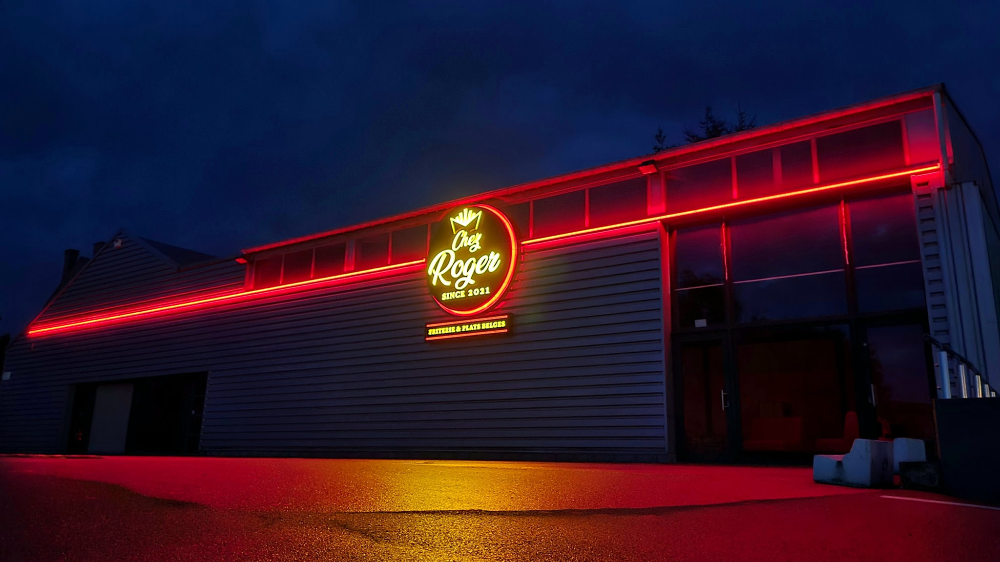
0444🇧🇪 België · Mechelen
In het Vrijbroekpark: grote buitenspeeltuin, leuk van kleuter tot tiener. Ernaast bar met o.a. originele, leuke mocktails. Ook beperkt aanbod eten, aantal vegetarische opties, geen glutenvrije opties.
🇧🇪 België · Mariakerke
Ontbijt, lunch en koffie in een gemoedelijke sfeer. Grote speelhoek voor kinderen.
🇧🇪 België · Antwerpen
De gezelligste pop-up bar in Antwerpen! Je kan zowel binnen als buiten zitten. Waarbij binnen een kleine speelhoek is. De blikvanger is echter de grote zandbak met tal van speelgoed voor jong en oud!
🇧🇪 België · Geel
Gezellige lunch- en koffiebar in het centrum van Geel. Beperkt ontbijt en uitgebreide lunch. Ze hebben een grote kinderkaart ook voor de allerkleinsten met bijvoorbeeld een sandwich choco. Een speelhoekje met keukentje en tekentafeltje maken het helemaal compleet!
🇧🇪 België · Berlare
Tijdelijke zomerbar/eetcafé in Berlare tot 14 september 2025. Vrijdag, zaterdag en zondag van 10:00-22:00. Buiten spelen op springkasteel, schommel, zandbak, ligweide. Ontbijt, lunch, ijsjes, drank, dineren. Enkele overdekte tafeltjes voor regenmomenten. Elke week andere heerlijke, beperkte eetkaart!
🇧🇪 België · Genk
Zomerbar in Bokrijk. Leuke locatie, waarbij je in de sixties van Bokrijk vertoeft. Lekkere cocktails en hapjes verkrijgbaar. Meestal is er ook speelgoed voor de kinderen voorzien, dit wisselt jaarlijks (bvb. petanqueballen, viking cup, ballen, kleine fietsjes, zandbak, ...). Soms staat er een ook een crèmekar, maar niet altijd.
🇧🇪 België · Hoboken
Vers en huisgemaakt ontbijt, lunch en gebak. Veel vegetarisch/veganistisch. Mooie tuin, rustige plek.
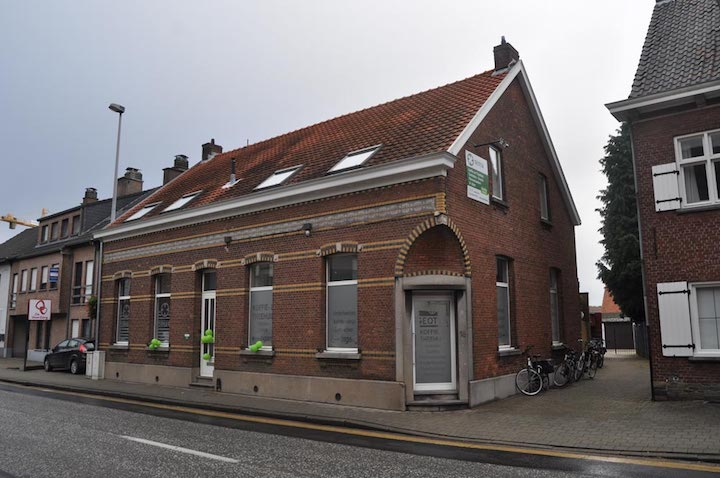
0451🇧🇪 België · Ekeren
Bar Mariette vind je in hartje Mariaburg te Ekeren. Hier verwent Liesbeth je met (h)eerlijke koffie, vers gebak, een zacht gekookt eitje, belegde boterhammen, een dampende kom soep en een warme ontvangst. Bar Mariette is een kindvriendelijke plek voor families, vrienden en collega's. Eén van de toppers zijn de dikke bruine boterhammen met huisgemaakte eiersalade en de dagverse soep. Simpel, maar super populair! Je kan ook langskomen voor een koffie met gebak. En wie wil co-worken, zet zich best strategisch aan de tribune. Daarin zitten stopcontacten verstopt om de laptop op te laden. 's Avonds en in het weekend zijn er ook privé evenementen en feestjes. De bar kan uitgebreid worden tot een grotere zaal als de mobiele wand geopend wordt. 100% kidsproof Bar Mariette is een kindvriendelijke plek. Vooral kinderen tussen 1 en 6 jaar voelen zich hier helemaal thuis. Er is veel plaats tussen de tafeltjes zodat ze de verschillende speelhoeken kunnen ontdekken. Bij goed weer is er op het besloten terras ook nog heel wat te beleven. Er is een grote variatie aan speelgoed dat zowel de motoriek als de zintuigen van je kind stimuleert. Maar niets leuker dan veel plaats om te spelen als er veel kinderen vrijaf hebben. Daarom opent Bar Mariette op woensdagen en tijdens schoolvakantiedagen naast de standaard speelhoeken ook de grote speelzaal. Zo is er extra speelruimte. En huur je de zaal voor een feestje? Ook dan is het speelgoed ter beschikking! Ontbijclub en zalig brunchen in weekends en schoolvakanties Vakantie, dat is tijd om te genieten! Daarom is Bar Mariette ook regelmatig op in het weekend of tijdens schoolvakanties. 'Ontbijtclub' of 'Zalig brunchen' is de perfecte vakantie-uitstap die tegelijk leuk is voor vrienden, (groot)ouders én kinderen. Je kan extra lang tafelen terwijl de kinderen zich tussendoor uitleven in de speelzaal. Openingsuren: van maandag tot vrijdag van 8:30 uur tot 16:30 uur + speciale ontbijten en brunchen in bepaalde weekends
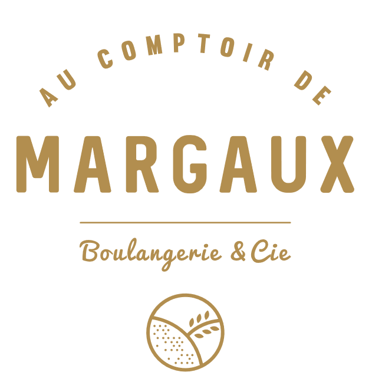
0452🇧🇪 België · Lier
Leuke brasserie met een groot aanbod aan lekker eten voor zowel kinderen als volwassenen. De speelruimte is binnen, het speelgoed is wel wat afgeleefd maar toch hebben onze kindjes zich daar goed kunnen amuseren. Wij gingen op Wilma Wonder zoektocht in Lier en sloten onze dag af met een lekker diner bij Bar Muza. Op zondag kan je er ook ontbijten.
🇧🇪 België · Antwerpen
Leuke zomerbar! De pizza's zijn een aanrader. Er is een grote buiten speeltuin aanwezig en een grote plas water en een gedeelte met fonteinen.
🇧🇪 België · Harelbeke
Leuke plek om te ontbijten/brunchen of lunchen. De kinderen kunnen rustig buiten spelen. Er is geen aangepaste menukaart (lunch) voor de kinderen. Ze kunnen wel een croque uit het vuistje eten. Voor het ontbijt is er wel een aangepaste formule.
🇧🇪 België · Brugge
Zomerbar in stadspark Visart aan de rand van Brugge. Ruim park met vrije spelruimte en zicht op de speeltuin.
🇧🇪 België · Aarsele
Zomerbar op de struisvogelboerderij met grote zandbak, zwembadje en heel veel ruimte om rond te lopen in het gras. Pluspunt: parasol boven de zandbak dus niet in de volle zon.
🇧🇪 België · Dendermonde
Huiskamerconcept/speelcafé van een koppel met 2 kindjes waar je met zicht op de speelruimte ondertussen iets kan drinken. Gecombineerd met winkeltjes met leuk speelgoed voor kinderen.
via @mamavindt🇧🇪 België · Drongen
Pop-up zomerbar van juni t.e.m. augustus met heel veel buitenspeelmogelijkheden voor kinderen. Zowel speeltuin als springkasteel.
🇧🇪 België · Oudenburg
Pop-up bar in hartje Oudenburg. Verschillende themadagen, maar ook doorlopend open tijdens de zomervakantie Springkastelen en andere speelgelegenheden voor kinderen terwijl de ouders genieten van een drankje en een hapje. Let op: luide muziek!
🇧🇪 België · Kaprijke
Brasserie in familiale sfeer met aangename buitenspeeltuin en binnenspeelhoek. Een gezellig verkoophoekje van lokale makers. Je kan hier terecht voor een ontbijt, lunch of de tearoom, incl. groot aanbod huisgemaakte taarten.
🇧🇪 België · Kontich
Ontbijt en lunchbar met speelhoek.
🇧🇪 België · Mechelen
Toffe locatie met buitenspeeltuin, bosje en speelhoek binnen. Is gelegen aan hetzelfde gebouw als het zwembad, waar je betalend ook terechtkan. Je kan er terecht voor een drankje, een kleine snack, nagerechtje,.. Steeds gezellig en op verschillende momenten ook thema-avonden/dagen met lekker eten (bv pizza-avonden of Argentijns) Ook een ruim terras aanwezig!
🇧🇪 België · Antwerpen
Leuke bagelbar in het centrum van Antwerpen. Hebben een oldschool bureautje voor kinderen om aan te tekenen en genoeg plek om rond te lopen.
🇧🇪 België · Heusden-Zolder
Pop-up bar met glijbaan, zandbak en springkastelen. Snacks verkrijgbaar.
🇧🇪 België · Turnhout
Leuke café/eetgelegenheid in het centrum van Turnhout. Gelegen aan/bij Cultuurhuis de Warande. Spelen/rond crossen in de centrale hal van het cultuurhuis of buiten op de nieuwe speeltuin. Leuk terras, ook kindergerechten.
🇧🇪 België · Waregem
Geniet van een maaltijd op ons gezellige terras of kom tot rust in onze beachbar met je voeten in het zand, een cocktail in de hand en de zon op je gezicht. Leuke zomerbar aan het water, met buitenspeeltuin en aquafun!
🇧🇪 België · Mechelen
Heerlijk lunchen, after worken en dineren langs de vaart in Mechelen. Ruim terras waarop kindjes veilig kunnen rondcrossen (autovrije buurt). Binnen is er een gezellig speelhoekje met kaarten, puzzels, blokken, kleurpotloden, ... Voldoende kinderstoelen aanwezig. Vriendelijke mensen.
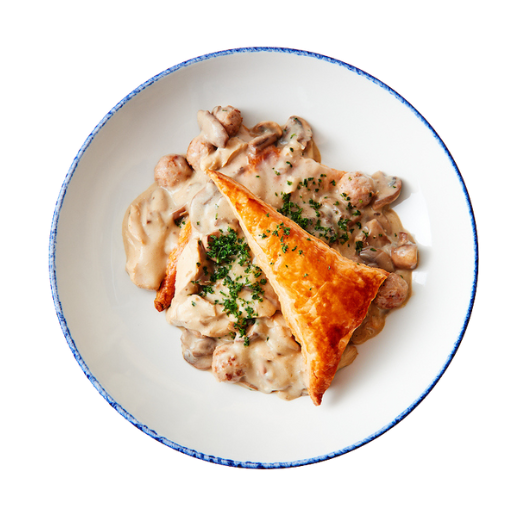
0468🇧🇪 België · Roeselare
Kiprestaurant (gefrituurde kip en andere snacks) met binnenspeelhoek achteraan. Vooraan een ruime, moderne zaak. Warm en gezellig ingericht. Achteraan naast de balie kom je dan in het kindergedeelte terecht. Softplay gedeelte en wat games, ideaal voor kleintjes! Bron: @Kiddofunplaces op Instagram.
 0469
0469
🇧🇪 België · Bellegem
Grootste frituur van België, 7 dagen op 7 open met schotels, salades en mogelijkheid om pasta of puree te eten. Er is een binnenspeelhoekje met schermen aan de muur. Leuke frituur in Bellegem: je kan bestellen aan de grote schermen of aan de toog. Het eten komt vlug door. Er zijn 2 verdiepingen om te zitten. Er is een speelhoekje met schermen waar educatieve spelletjes opstaan. Naast de gewone frituursnacks heb je heel wat lekkere verse bereidingen zoals vol-au-vent, balletjes in tomatensaus, enz… maar er zijn ook salades te verkrijgen. Voor ieder wat wils dus!
via @mamavindt 0470
0470
🇧🇪 België · Geel
Leuk restaurant dichtbij de ring tussen Mol en Geel. Het heeft een heel gewone kaart met o.a. vol au vent, stoofvlees en pasta’s, maar staat bekend om zijn super lekkere Indische rode en groene curry. Buiten is er een zeer groot terras met leuk houten speelelement voor de kinderen. Bovendien een grote auto- en fietsparking. Tip, in de lente/zomer is er sangria met veel vers fruit te verkrijgen!
 0471
0471
🇧🇪 België · Westouter
Fijn restaurant voor in de wintermaanden. Veel speelmogelijkheden binnen voor de kleinsten (0-6j). Mega legoblokken, glijbaan XL, ballenbad, …
🇧🇪 België · Bever
Kinderboerderij met veel dieren en buiten- en binnenspeeltuin. Open zondagen Leuk bij goed en slecht weer! Je kan er iets eten en drinken. Check vooraf de openingsmomenten via de facebookpagina. Drankje op het terras mogelijk. €5 per kind.
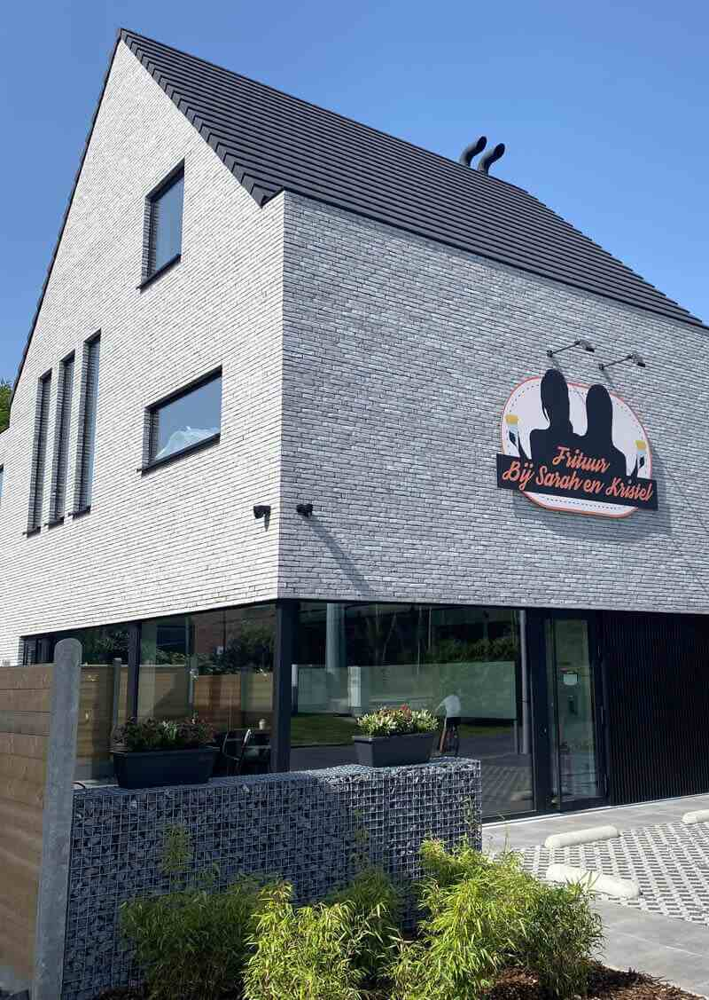
0473🇧🇪 België · Koersel
Leuk kindvriendelijk en borstvoedingsvriendelijk bezoekerscentrum met café als uitvalsbasis om de vallei van de Zwarte Beek te verkennen. Geen museum maar een gratis ontdekkingscentrum. Met speelhoek, graafput en speelnatuur vlakbij!
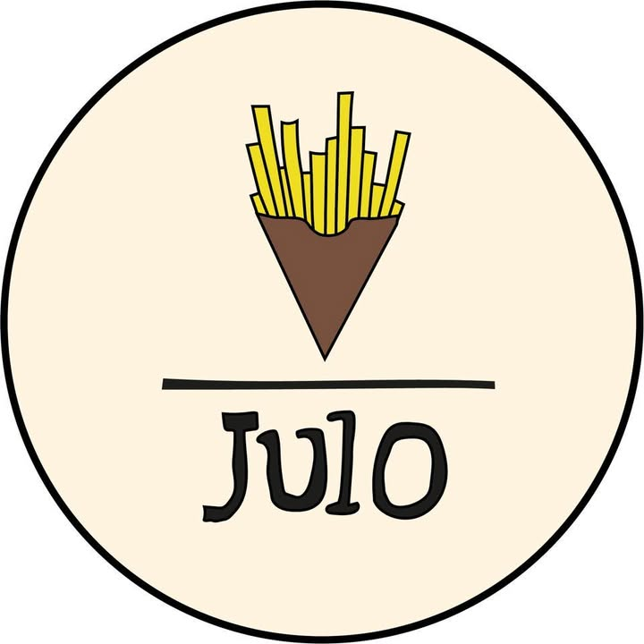
0474🇧🇪 België · Oostende
Restaurant met gerechten gebaseerd op bier. Veel speciale bieren te verkrijgen. Relatief klein restaurant. Veel parking in de wijk, gratis parkeren (max. 9u), maar je moet je wel registreren. Mooie kindermenu's voor kinderen tot 10 jaar, zoals rundburger, garnaalkroketten of kipfilet naast de gewone menu's. Buiten is een afgesloten grasplein met grote bouwblokken en als het mooi weer is een springkasteel. In de winter staat deze er niet.
🇧🇪 België · Heist-op-den-Berg
Leuke brasserie in het centrum van Heist-Op-Den-Berg met ontbijt, brunch, taarten en home made drinks. Binnen leuke speelkamer voor kinderen. Bij mooi weer is de speelkamer op het terras open. Lekker, gezond en veel vegetarisch eten!
🇧🇪 België · Wieze
Leuke brasserie aan een revalidatiecentrum. Van pannenkoeken tot croques en dergelijke meer. Er is een kinderspeelruimte binnen voor de kindjes met ballenbad en meer! Lekker eten en vriendelijke mensen.
🇧🇪 België · Duffel
Leuke plek voor ontbijt, brunch, ontbijt en koffie. Een fijne speelhoek, veel kinderstoelen en groot geduld voor kindjes. Vlak bij de Nete dus ideaal voor een tussenstop tijdens een fietstocht. Ook een gigantische parking achteraan. Mooi groot terras achteraan, met speelhuisje.
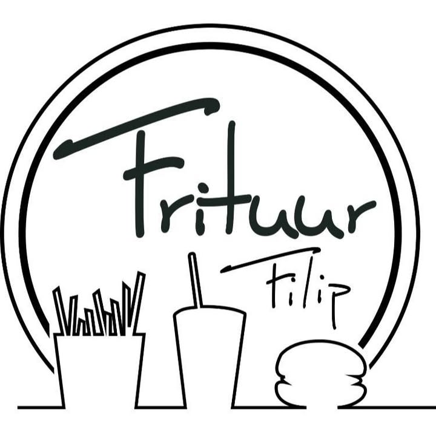
0478🇧🇪 België · Wiemesmeer
Bij Veges geniet je van lekkere gerechten, verfrissende drankjes en een warme sfeer. Terwijl jij ontspant op het terras, kunnen kinderen zich uitleven in de grote buitenspeeltuin. In de zomer is er volop speelplezier in de buitenlucht, en bij frissere avonden zit je lekker op het verwarmde terras.
🇧🇪 België · Denderleeuw
Leuke brasserie met grote (betalende) binnenspeeltuin en een beperkte buitenspeelruimte. Er is een terras buiten. Je kan er ook verjaardagsfeestjes organiseren. Heel lekker eten: lunchmogelijkheden, milkshakes, pannenkoeken. Geen dure prijzen. Wel inkom betalen per kind, 6 euro.
🇧🇪 België · Sint-Job-in't-Goor
Leuke, kleinschalige binnenspeeltuin speciaal voor de allerkleinste kindjes. Toegankelijk vanaf 6 maand tot +/- 6 tot 7 jaar. Terwijl de kleintjes spelen kunnen mama en papa genieten van de uitgebreide kaart. De kindjes kunnen niet weg en zijn altijd zichtbaar vanuit de horecazaal. Wij zijn vooral een speeltuin die in de herfst/winter/voorjaar open zijn. Bij temperaturen boven 20 graden is het altijd aan te raden de website in de gaten te houden. In de zomervakantie is de speeltuin gesloten voor publiek. Dan worden er kleuterkampjes georganiseerd. Inkom = 2 euro voor kindjes van 1 jaar, vanaf 2 jaar is de inkom 7 euro.
via @mamavindt🇧🇪 België · Gors-Opleeuw
Gezellige bistro met mooi terras. Je kan er ook overnachten. Leuke speeltuin buiten en speelgoedkoffer.
🇧🇪 België · Oelegem
Het Marrehof is een lekker restaurant waar je op het terras kan kan eten terwijl de kindjes buiten kunnen spelen. Gevarieerde kaart, leuke buitenspeeltuin!
🇧🇪 België · Moerkerke
Binnenspeeltuin met heerlijke keuken (alle eten die in de binnenspeeltuin geserveerd wordt, komt uit de bistro ernaast). Naast het klassieke binnenspeeltuingedeelte, is er ook een terras met zicht op de buitenspeeltuin. Tip: reserveer in de veranda (of op het terras bij mooi weer) om te eten, daar is het gezellig zitten! Belangrijk: als je er gaat om te eten, moeten de kinderen geen toegang betalen!
🇧🇪 België · Laarne
Brasserie in Laarne, eten en drinken. Klein speeltuintje buiten en ook leuk speelhoekje binnen. Meest kindvriendelijke restaurant ooit! Aparte speelse menukaart voor de kindjes. Kinderstoelen stonden klaar, papier + potloden, tafel naast de speelhoek. Mega vriendelijk!
🇧🇪 België · Anzegem
Bistro met leuke buitenspeeltuin!
via @mamavindt🇧🇪 België · Bierbeek
Brasserie met speelhoek binnen en gratis buitenspeeltuin. Speeltuin is ook toegankelijk wanneer de brasserie gesloten is.
🇧🇪 België · Houthulst
Bistro met buitenspeelgelegenheid en terras. Met zandbak en veel groen.
🇧🇪 België · Moen
Gezellige bistro met kindermenu. Heel grote tuin met veel speelplezier op de glijbanen en klimrek met ook een trampoline.
🇧🇪 België · Zoutleeuw
Bistro gelegen aan het prachtige natuurdomein Het Vinne. Heerlijke buitenspeeltuin met waterspelen. Gezellig en zeer rustig terras. Ook leuk om samen op ontdekking te gaan rond de hoeve en de wandelpaadjes over het water te ontdekken!
🇧🇪 België · Merelbeke
Bistro naast de Eurotuin. Eerst een “wandelingetje” door de winkel langs de diertjes en plantjes en nadien een lekkere pannenkoek of iets anders in de bistro. Met een speelhoekje voor de kindjes.
🇧🇪 België · Westmeerbeek
Leuke bistro met aparte ruimte om te spelen. Geen klassieke speelhoek, maar ontdekken en bouwen. Brasserie zelf zeer mooie inrichting! Heel lekker eten, ook een fijn kindermenu.
🇧🇪 België · Koekelare
Leuke bistro bij monument Lange Max. Er is binnen een speelhoek voor kinderen en buiten een speeltuin met trampoline, springkasteel en klimrek/glijbaan. Heel leuk terras en lekker eten!
🇧🇪 België · Lier
Afgesloten speeltuin Diertjes aanwezig Heel vegan vriendelijk :) Genoeg parkeermogelijkheid Vriendelijke bediening
🇧🇪 België · Zevenkerken
Abdij cafetaria met lunch garden systeem. Verse reuzepannekoeken, stukken taart, chocomousse, tiramisu, ijsjes, vol au vent, dagschotel,..., abdijkaas en warme en koude dranken ... Buiten speelplein en gigantisch grasplein waar in de zomer buiten tafels en stoelen staan. Grote gratis parking en een kleine boswandelroute buggyproof rondom cafetaria en de abdij om te bewonderen. Weetje: koning Filip zat hier vroeger op internaat. Open elke dag van 12 t.e.m. 18u (Van november tot en met maart gesloten op donderdag) (gesloten van 24 december t.e.m. 1 januari)
🇧🇪 België · Hasselt
Gezellige dagzaak voor ontbijt, lunch en apero. Mediterraan geïnspireerd, met kleine delihoek. Terrasje bij mooi weer. Leuke speelruimte, luiertafel en microgolf aanwezig. Originele kindergerechtjes. Lekkere koffie en wijntjes!
🇧🇪 België · Roeselare
Bistrobar O'Noya paalt aan het Sportoase zwembad van Roeselare maar zelfs zonder zwem-moment zit je hier ideaal met kids: buitenspeeltuin vanaf 4-5 jaar ongeveer met zand en binnen een peuter/kleuterhoek. Fijn zongericht terras met heel ruime parkeermogelijkheden. Drank -en eetmogelijkheden voor lunch en tearoom. Check zeker de openingsuren voor 's avonds diner. Ook leuk om te weten: ideaal voor verjaardagsfeestjes.
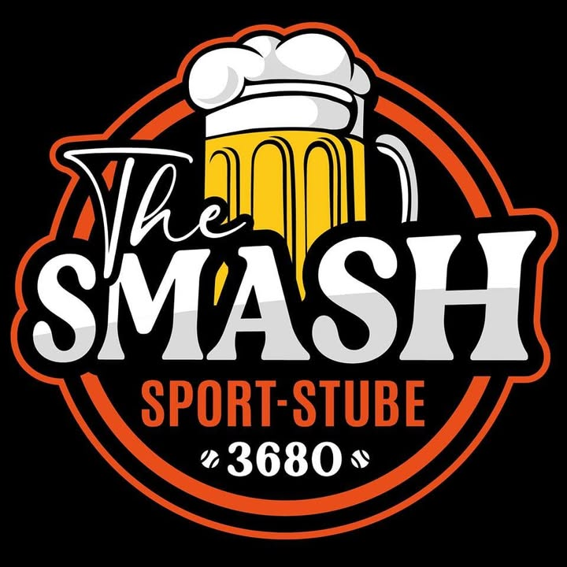
0497🇧🇪 België · Hoogstraten
Fijn restaurant waar je kan ontbijten, lunchen en dineren. Het ontbijt wordt geserveerd in buffetvorm, lunch & diner aan tafel. Fijn speelhoekje binnen voor de kinderen.
🇧🇪 België · Lokeren
Chiquer hotel/restaurant waar je terecht kan voor een a la carte gerechtje maar ook voor een uitgebreider menu. Met buitenspeeltuin.
via @mamavindt🇧🇪 België · Zwijndrecht
Brasserie waar je zowel binnen als buiten kan eten. Buiten staat er een kleine speeltuin en heb je een kleine kinderboerderij (geiten, ezel, moddervarken, lama’s, kippen, konijnen). Van deze diensten kan je gratis gebruik maken. Naast de brasserie ligt de zomerbar van dezelfde zaak. Hier staat een springkasteel en een zwembad buiten. Aangrenzend aan de brasserie is er ook een B&B en kan je feestzalen afhuren.
via @mamavindt🇧🇪 België · Duffel
Ontbijt- en lunchbar met lekkere verse gebakken zoetigheden en koffie. Kindvriendelijke opties op de kaart. Kleine speelhoek voor kindjes en verschoningstafel op het toilet. Er is ook een terras.
🇧🇪 België · Deurne Zuid
Zuurdesem bakker met brood, koeken, koffie en drank. Niet zo heel groot, paar tafels binnen en afgesloten terras buiten met zandbak om in te spelen. Binnen liggen ook wat spellen en spullen om te kleuren.
🇧🇪 België · Lokeren
Boscafé is gelegen naast de speeltuin in het bospark Lokeren. In het bospark is er een speeltuin voor groot en klein en ook kooien met dieren (hertjes, struisvogels, …) Het Boscafé ligt vlak naast de speeltuin. Je kan hier iets drinken of kleins eten. Het Boscafé is gesloten in de winter, er is dan wel een winterhuisje waar je kan zitten en iets eten/drinken.
🇧🇪 België · Gent
Boekenwinkel met speelhoek en brunch/lunchmogelijkheden. Klein zaakje in Gent met heel vriendelijke eigenaars. Je kan er iets kleins eten als lunch maar ook wat gebakjes. Er is een speelhoek voor de (jongere) kinderen
via @mamavindt🇧🇪 België · Lokeren
Brasserie/taverne met zicht op de speeltuin, vijver met siereendjes en hoeve met kippen.
🇧🇪 België · Stabroek
In deze gezellige zaak in het charmante dorpje Stabroek wachten de grillgerechten en burgers je op als specialiteiten van het huis. Op zonnige dagen kan je terecht op het ruime terras. Als het iets frisser wordt, zoek je gewoon binnen de warmte op. Ook de kleinsten vervelen zich niet want er is een kinderspeeltuin!
🇧🇪 België · Parike/Brakel
Leuke ijsjeszaak en tearoom, zowel binnen als buiten. Leuk voor de kids!
via @mamavindt🇧🇪 België · Merchtem
BONA foodbar is een kindvriendelijk ontbijt-/brunch-/lunchplekje. Er is een fijne speelhoek voor kinderen met een keukentje, auto's en allerhande andere speelgoedjes. Je kan bij je reservatie vragen om dicht bij de speelhoek te zitten.
🇧🇪 België · Beerse
Leuke ontbijt-/lunchzaak met uitgebreide menukaart, gaande van broodjes tot pannenkoeken en wafels en schepijs. Speelhoekje binnen met speelgoed voor verschillende leeftijden, plus bordspellen voor jong en oud. Zeer vriendelijke service.
🇧🇪 België · Ieper
Fijne frituur met home made burgers. Leuke en veilige speelzone in de tuin met een klimparcours, glijbaan, wipwap, duploblokjes en een paar kleine diertjes (konijntjes en cavia´s).
via @mamavindt🇧🇪 België · Hallaar
Leuke brasserie, het Boshuis, gelegen in provinciaal groendomein De Averegten. Heel leuke gratis speeltuin voor kinderen. Zitplaatsen binnen en buiten. Meestal open vanaf 10u tot 18u/21u. Momenteel geopend tot 28 september. Qua eten zeer divers: van pannenkoeken tot frietjes. Goede brasseriekeuken.
🇧🇪 België · Tongeren
Je kan hier iets eten en drinken. Het terras kijkt uit op een grote speeltuin. De zaak is open van 11u45 tot 20u. Dinsdag is hun sluitingsdag. Je kan er croques, pasta’s, zomersalades, belegde broodjes en kindergerechten (croques, kinderboulet, kindervidée, kinderspaghetti, kipnuggets, …) eten. Nadien kan je genieten van een ijsje, pannenkoek, wafel … .
🇧🇪 België · Bouwel
Leuke brasserie met kleine buitenspeeltuin gelegen naast het terras en lekkere ijsjes.
via @mamavindt🇧🇪 België · Sint-Martens-Latem
Bowlingzaak met grote binnenspeeltuin en buitenspeeltuin (afgesloten), mogelijk om terwijl iets te drinken op het terras of binnen. Vrij toegankelijk/gratis. Ook mogelijkheid tot hapjes/snacks en steengrill in het restaurant.
🇧🇪 België · Merksplas
Buiten is er een speeltuin, voetbalplein, bmx-parcours, volleybalnetten en skatepark. Deze zijn van de gemeente, maar vanop het terras heb je overzicht over deze speelruimte. Het is eenvoudig toegankelijk via de trap van het terras, deze komt uit bij het speeltoestel. Ook binnen is er een klein speelhoekje voor kinderen voorzien.
🇧🇪 België · Blaasveld
Klassieke brasserie met zonnig terras en kleine speeltuin.
🇧🇪 België · As
Leuke brasserie aan een oud station met gratis speeltuin. Ook de start van een kinderwandeling door het bos. Er zijn kindergerechten en de bediening is snel!
🇧🇪 België · Herzele
Brasserie met kleine speeltuin (glijbaan, schommels, klimrek, trampoline). Overdekt en zonnig terras. Verschillende snacks en dineropties op de kaart: spaghetti, steak, scampi, croques, maar ook loaded nachos, warme frituurhapjes en ijscoupes. Heel vriendelijke uitbaters!
🇧🇪 België · Maasmechelen
Leuke brasserie met ontbijt, lunch en diner. Gezellig en lekker. Mooie veranda en terras, langs een weide waar soms paarden staan. Er is ook een wandel-fietsroute. Binnen geen speelruimte, maar wel buiten. Ideaal bij mooi weer. Verwijderen
🇧🇪 België · Gullegem
Leuke brasserie met kleine speelhoek binnen. Grote speeltuin met verschillende speeltuigen en zandbak buiten. Verder in het provinciaal domein is er nog een grote speeltuin. Je kan er lunchen, dineren of genieten van een lekker tussendoortje.
🇧🇪 België · Antwerpen
Lunch, zoet vieruurtje, diner of dessert. Brunch op zondag. Vlak bij Te Boelaarpark voor leuke wandeling, maar echte bonus is de aparte lees- en speelkamer op eerste verdieping. Bij reserveren aan te raden om te vragen daar te zitten zodat je dicht bij je spelende kinderen bent. Lekker eten en ruim zitten. Vriendelijke bediening!
🇧🇪 België · Nieuwpoort
Leuke brasserie die onderdeel is van een hotel. Bij het reserveren van een tafel kan je aanduiden hoeveel kinderen je mee hebt. Er ligt op de tafel een tekening klaar met kleurpotloden. Er is ook een aparte speelhoek voorzien met kleine cinema, groot krijtbord, tablet, blokken, ... Veel plaats in brasserie waardoor je buggy en dergelijke zo aan tafel kan. Maar er zijn ook kinderstoelen voorzien. Leuke extra: honden toegelaten en zeer toegankelijk voor rolstoelgebruikers (toilet en dergelijke).
via @mamavindt🇧🇪 België · Berlare
Leuk terras met gelegenheid om binnen te zitten, gelegen aan de nieuwdonk. Van op het terras heb je zicht op de speeltuin en kunnen de kindjes zich amuseren. Wat ook handig is: op het domein van de nieuwdonk zelf mag je ook eigen hapjes en drankjes meenemen, ideaal dus om te picknicken terwijl kindjes spelen. Mooie wandelingen ook aanwezig, dieren doorloopweide is er ook en in de zomer kan je ook met je voeten in het water en op het aangelegde strand liggen. Veel variatie mogelijk, zowel met de brasserie die aanwezig of met eigen lunch/picknick.
🇧🇪 België · Lokeren
Gezellige restaurant met een zeer verzorgde kaart voor groot en klein. Met grote speelzolder en superleuke speeltuin buiten.
🇧🇪 België · Kapellen
Brasserie om te lunchen en te dineren. In het weekend ook brunchmogelijkheden. Groot zonnig terras met buitenspeeltuin.
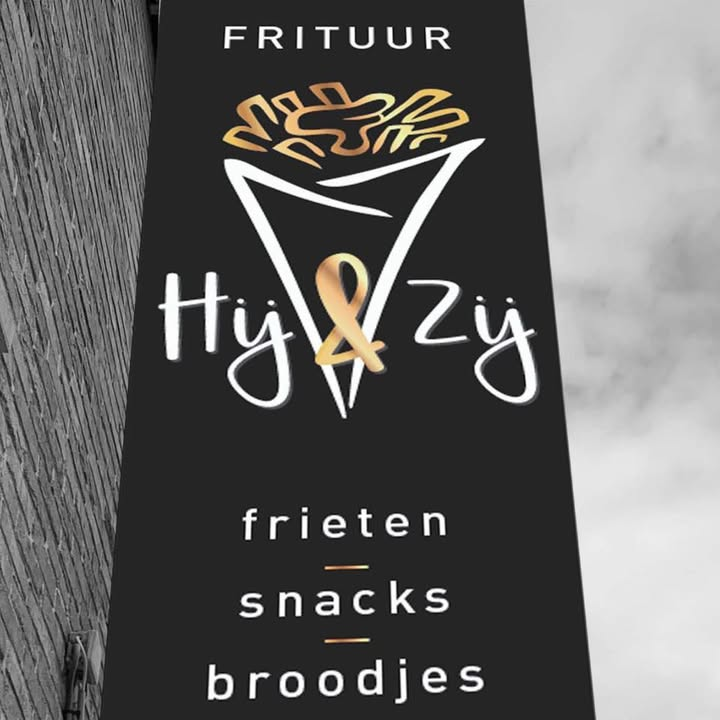
0525🇧🇪 België · Tielen
Brasserie met een speelruimte binnen (lego, kleurplaten, boekjes, poppetjes/auto’) en een grote zandbak aan het omheinde terras bij mooi weer. Uitgebreide kaart voor lunch, diner, of enkel een dessert of drankjes.
🇧🇪 België · Landen
Typische brasserie, geopend vanaf 11u, gelegen aan het natuurgebied De Beemden met speellandschap (met water en zand!) voor de kinderen. Gratis parking. Terras geopend bij mooi weer. Er zijn ook picknickbanken en plaats voor campers.
🇧🇪 België · Schoten
Voor een lunch of diner. Betaalbaar en gezellig om te zitten. Alles voorzien voor kinderen. Binnen leuke speelhoek met verschillend speelgoed en tekengerief. Ook voor kleintjes, die kunnen gewoon op de mat spelen. Tv-hoekje. Buiten kunnen ze spelen met grote blokken in en rond het speelhuisje. Fijn voor de kinderen en mama en papa, kunnen ook even rustig genieten van hun eten of drinken. Buiten is nog een terras, maar daar is geen speelruimte aan, die is verbonden met de veranda, maar ook gezellig zitten in zomer of winter (is verwarmd).
🇧🇪 België · Boom
Brasserie in recreatiedomein De Schorre. Ontbijt, take-away, snacks en menukaart voor kleine en grote honger. Grote buitenspeeltuin naast de brasserie en op zondagen wordt de meetingzaal omgetoverd tot speelhoek.
🇧🇪 België · Wingene
Leuke brasserie met Frans-Vlaamse keuken en een gezellige sfeer. Bekend om de côte à l’os, maar ook huisgemaakt stoofvlees en verse vol-au-vent. Kinderen kunnen spelen in de binnenspeelruimte of buiten bij mooi weer. Ideaal voor een ontspannen lunch of diner met het hele gezin. Lekker eten en een warme ontvangst!
🇧🇪 België · Astene
Leuke brasserie met buitenspeelruimte. Er is geen binnenspeelruimte, maar het personeel is kindvriendelijk en heeft klein spelmateriaal voorhanden (zoals stiften en kleurboeken).
via @mamavindt 0531
0531
🇧🇪 België · Brugge
Leuke brasserie met iets "specialere" kaart. Er is een heel mooi groot terras. Voor de kinderen is er een speeltuintje, niet super groot, maar voldoende, een zandbak en een veldje waar je kan voetballen. Er zijn ook enkele kindergerechten. Leuk om ´s middags iets kleins te gaan eten.
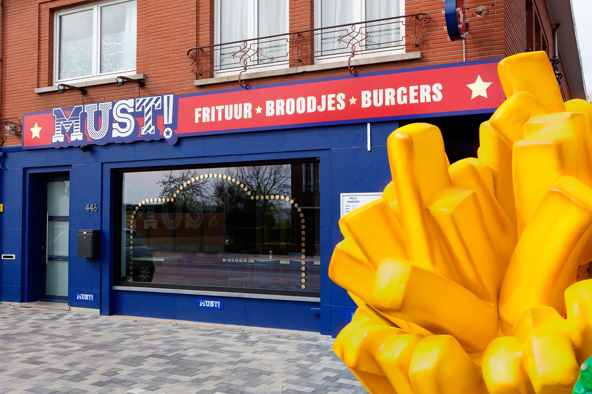
0532🇧🇪 België · Bredene
Leuke brasserie met buitenspeelruimte en kindergerechten op de kaart. Gelegen op een camping, ook de speeltuin van de camping is er vlak naast.
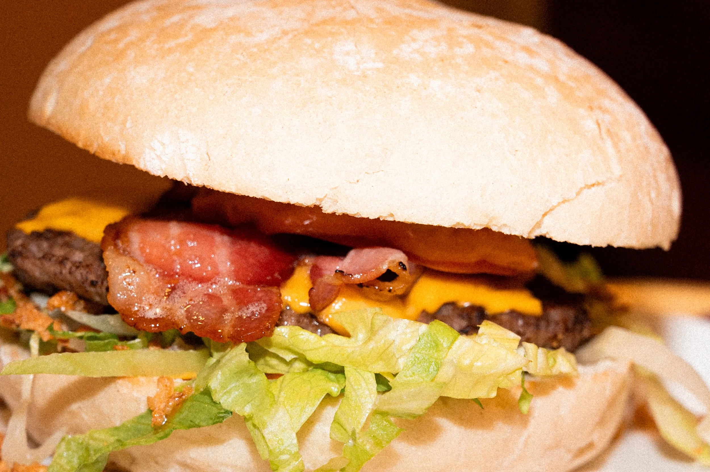
0533🇧🇪 België · Schoten
Zalige brasserie met een leuke buitenspeeltuin. Ideaal voor kindjes tussen 3 en 10 jaar. Lekker eten ook!
 0534
0534
🇧🇪 België · Grootlo
Leuke brasserie met zandbak en speeltuin. Groot terras gelegen op een rustige locatie. Veel parking achter de gelegenheid.
 0535
0535
🇧🇪 België · Genk
Leuke brasserie op wandelafstand van het domein van Bokrijk. Leuk buitenspeeltoestel voor de kinderen. In de zomer staat er regelmatig ook een springkasteel. Je hebt zicht op jouw spelende kids vanop het terras en vanuit de verwarmde veranda.
🇧🇪 België · Ursel
Brasserie met kindvriendelijke kaart en buitenspeeltuin, gratis toegankelijk voor wie er iets nuttigt. Binnen zijn er ook spelletjes beschikbaar.
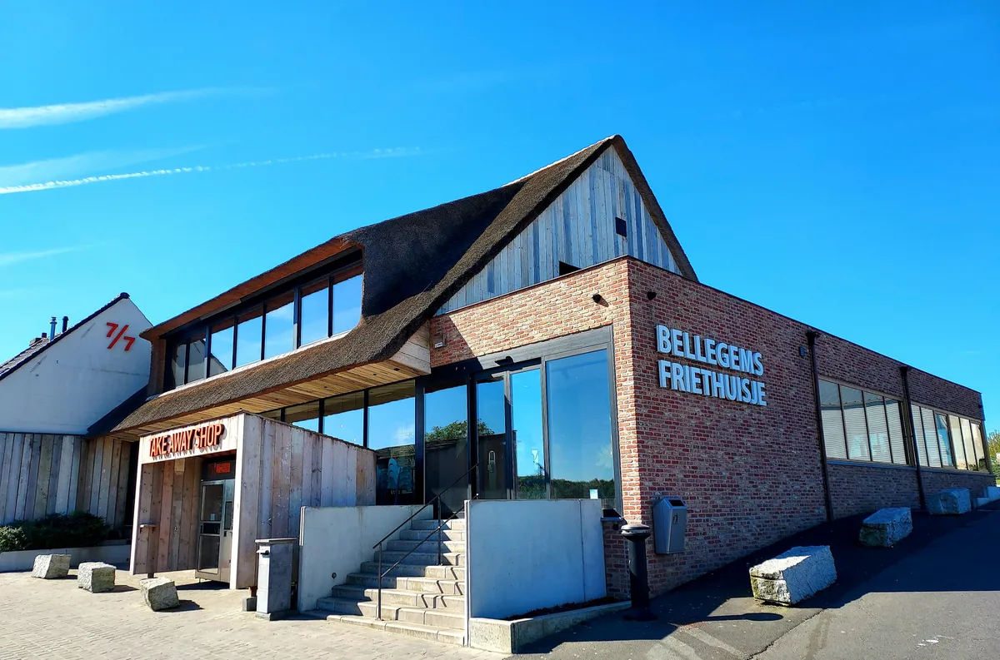
0537🇧🇪 België · Buggenhout
Brasserie met leuke afgesloten buitenspeeltuin net naast Buggenhout bos. Vooral leuk in de zomer voor de kindjes, binnen geen speelruimte voor kinderen.
🇧🇪 België · Stekene
In Brasserie Het Zomerhuis in Stekene kan je elke dag terecht vanaf 11 uur. Zij bieden lunch en diner aan, hoewel je er ook gewoon iets zou kunnen drinken. Het Zomerhuis ligt omgeven door groen. Het terras ligt aan de fonteinen/waterzone en daarrond zijn speeltuinen geïnstalleerd. Achter Het Zomerhuis een klein bos. Dit alles is niet afgesloten, maar ligt wel weg van de straat: eerst langs een klein wegje richting de tennisclub waar je ook kan parkeren voor het Zomerhuis, daarna enkele honderden meters te voet verder tot de brasserie. Dit maakt dat ik zou zeggen dat de speelfaciliteiten aan Het Zomerhuis iets is voor iets oudere kinderen (met toezicht, maar zonder nood aan constante aanwezigheid van een volwassene die naast het kind blijft).
🇧🇪 België · Torhout
Restaurant met heel mooi terras. Tijdens de zomermaanden zelfs elke dag open met in de namiddag tearoom. 's Middags en 's avonds eet je van de kaart die om de paar maanden verandert en aangevuld wordt met seizoensgebonden suggesties. Binnenspeelkamer voor kinderen met krijtbord. Buitenspeeltuin met glijbaan, zowel voor allerkleinsten als voor iets grotere kindjes. Aangrenzend schaapjes in de weide. In de zomer staat er een springkasteel.
🇧🇪 België · Edegem
Brasserie in parkomgeving, met een mooi terras met buitenspeeltuin.
🇧🇪 België · Haacht
Brasserie, gelegen aan de Dijle en fietsknooppunt 21. Groenten uit eigen tuin.Uitgebreide, seizoensgebonden kaart. Groot zonnig terras met kleine speeltuin en grasveld om te ravotten.
🇧🇪 België · Ranst
Bij het Hof van Ranst zit je echt goed. Het eten is er superlekker! Denk aan perfect gerijpt vlees en andere toppers. Er staan genoeg dingen op de kaart die ook de kids weten te appreciëren. Er komt binnenkort ook een nieuwe buitenspeeltuin, een ruimer terras en zelfs een gezellige buitenbar. Het wordt dus echt zo’n plek waar je als gezin naartoe gaat voor een lekkere maaltijd, maar waar je ook blijft hangen omdat iedereen het naar zijn zin heeft.
🇧🇪 België · Zaventem
Brasserie met vrij grote speeltuin buiten.
🇧🇪 België · Hulste
Brasserie Marie biedt dagverse en huisbereide gerechten aan in een aangenaam, landelijk interieur en exterieur met op zondag in de namiddag tearoom. De service is warm, de sfeer ontspannen en de kinderen kunnen buiten op het grote grasveld met speeltuin en trampoline spelen. Lunch en diner.
🇧🇪 België · Stabroek
Leuke brasserie in het centrum van Stabroek Groot binnenspeelzaaltje.
🇧🇪 België · Herentals
Brasserie met snacks. Buitenspeeltuin die gratis is in het winterseizoen. Binnen- en buitenzwembad. Zwembad steeds betalend, speeltuin ook in het hoogseizoen.
🇧🇪 België · Baarle
Kindvriendelijke brasserie (met eigen kinderkaart) en leuke speeltuin met trampoline en springkasteel (bij mooi weer, in de lente/zomer).
via @mamavindt 0548
0548
🇧🇪 België · Zandhoven
Leuke brasserie vlak aan het Albertkanaal dus super om met de fiets te passeren. Gezellig terras achteraan. Lunch, apero en diner. Ook gewoon iets drinken kan. Mooie speeltuin voor de kinderen met o.a. trampoline.
🇧🇪 België · Tremelo
Gezellige brasserie in Tremelo. Met een lekkere, betaalbare kaart. Ook voor de kindjes genoeg keuze. Het terras sluit aan, aan de grote speeltuin. Zowel de iets oudere kinderen als de kleintjes kunnen zich hier uitleven. Je hebt een goed zicht op de kindjes van aan je tafeltje.
via @mamavindt🇧🇪 België · Tielt
Gezinsvriendelijk restaurant met buitenspeelplein en zandbak. Grote buitenruimte en terras. Heel veel ruimte voor kindjes om te spelen!
via @mamavindt🇧🇪 België · Beernem
Leuke brasserie vlak aan afrit Beernem (ideaal om af te spreken met andere mama's). Lunch, tearoom en diner. Leuke speelhoek voor kindjes!
via @mamavindt🇧🇪 België · Destelbergen
Brasserie in Destelbergen met een leuke gelegenheid om buiten te spelen, met springkasteel. Je kan hier zowel lunch als diner verkrijgen met lekkere cocktails en mocktails.
via @mamavindt🇧🇪 België · Izegem
Goede plek om in de namiddag/avond te vertoeven. Gezellig zitten, zowel binnen als buiten. Vers en lekker eten. Er is binnen een speelkamer, buiten is er een gans stuk voor de kids (met in de zomer zelfs een springkasteel). Brasserie Rhodesgoed is gelegen langs het fietsroutenetwerk en met hun leuke speeltuin ook een toffe plaats om met de familie langs te komen. Een snelle lunch, een heerlijke pannenkoek of een tof diner met vrienden, etc.. Zowat alles kan in Brasserie Rhodesgoed.
🇧🇪 België · Eksel
Leuke brasserie in het Roompot park in Eksel. Binnen een speeltuintje, gratis kleurplaten, LEGO-tafel. Buiten is er ook een zandbak met enkele speeltoestellen. Wanneer het mooi weer is, kunnen de kinderen ook buiten door verschillende sproeiers lopen. Side note: de kaart is niet mega groot, maar wel heel lekker!
🇧🇪 België · Oud-Heverlee
Brasserie St. Jean. Ook een feestzaaltje. Er is een grote en vernieuwde speeltuin "Zoet water" vlakbij (met een grote parking) en ook ijssalon N'Ice heeft ernaast een vestiging. Topplek.
🇧🇪 België · Turnhout
Fijn restaurant met zeer groot terras met zicht op de buitenspeeltuin.
🇧🇪 België · Wilrijk
Recent hernieuwde (heropende) brasserie in het park van Wilrijk. Gelegen aan grote speeltuin. Klassieke kaart (lunch en avondmaal), ook kindergerechten, ijsjes, wafels en pannenkoeken.
🇧🇪 België · Damme
Gezellige brasserie in polderomgeving met zuidgericht terras, kindvriendelijk (met binnen- en buitenspeelruimte) en warme sfeer. Je kunt er terecht voor klassieke en moderne gerechten, plus een aparte kindermenu. Ook geschikt voor familie-- of bedrijfsfeestjes.
🇧🇪 België · Lommel
Een eetgelegenheid (snacks, kleine gerechten zoals croque, kindvriendelijke gerechten) aan het zwembad en speeltuin. Binnen een kleine speelgelegenheid, maar buiten kan je aan de peuterspeeltuin zitten. Buiten is er ook een spraypark aan het terras dat open is bij warm weer.
🇧🇪 België · Zedelgem
Gezellige brasserie met mooi terras. Je kan er 's middags een lunch eten voor weinig geld of je kan 's avonds en in het weekend van de kaart eten. Er is een uitgebreide kindermenu en de menu voor volwassen wordt telkens met seizoen aangepast. In de namiddag zijn ze ook open als tearoom met pannenkoeken en ijsjes. Binnen is er een kleinere speelhoek. Buiten een heus paradijs met verschillende speeltoestellen, trampoline, springkasteel, ... De speelruimte buiten is volledig afgesloten.
🇧🇪 België · Landegem
Leuke brasserie in Landegem met zowel mogelijkheid tot lunch, diner en tearoom. Tof, gezellig interieur. Eten is prijs/kwaliteit goed. Binnen een leuke speelruimte voor kinderen.
🇧🇪 België · Herselt
Grote brasserie met kleine speelhoek in de brasserie zelf. Er is mogelijkheid tot kleuren met kleurplaten. Aan de overkant is een grote buitenspeeltuin, geen zicht op buitenspeeltuin vanop de brasserie. Buiten aan de brasserie kunnen kinderen spelen in de grote inkomhal of terras. Brasserie met leuke kaart, afwisselend met seizoenssuggesties. Brasserie ligt in een vrijetijdscentrum dus heel veel te doen rond de brasserie (voetbal, wandelen, bib, ...).
via @mamavindt🇧🇪 België · Rochehaut
Leuke brasserie in de brouwerij van Rochehaut. Heel veel binnen eetgelegenheid en overdekte buiten eetgelegenheid. Ook verschillende tafels op een niet overdekt terras. Op het terras enkel tapasplanken te verkrijgen of desserts. Binnen lekker eten. Frietjes met ribben, kaasfondue, Luikse ballen, stoofvlees. Ook enkele kindergerechten. Hele leuke buitenspeeltuin waar je via een buisglijbaan naartoe kan (ook via een trap). Er is zelfs een aparte peuterspeeltuin. Beide speeltuinen zijn volledig afgesloten maar liggen een verdiep lager dan het restaurant. Je hebt vanop het terras uitzicht op de speeltuinen. Gigantisch mooi uitzicht op een vallei!
🇧🇪 België · Brussel
Leuke Brasserie met kindvriendelijke bediening op terras en buitenspeeltuin.
🇧🇪 België · Couvin
De droom voor de reizende mens die de Ardennen wil verkennen. Zowel binnen als buiten vind je een speeltuin. Verder voorzien ze ook kleurtjes en een tekening voor de kindjes die aan tafel willen blijven. Ververstafel en kinderstoelen aanwezig.
🇧🇪 België · Turnhout
Breek is een trendy koffiebar in hartje Turnhout. In een industrieel interieur met retro touch kan je genieten van hoogstaande koffies en thees, zelfgemaakt gebak of een kwaliteitsvol ontbijt en lunch. 1x/maand serveren ze uitgebreid ontbijtbuffet op reservatie. Achteraan in de zaak een hele mooie speelruimte met enkele tafeltjes. Zo kan je bij je kleine kindjes zitten. Het is voornamelijk voor kleinere kinderen. Ook een kindvriendelijk menu.
via @mamavindt🇧🇪 België · Peer
Ruime speeltuin voor groot en klein met boerderij en aangrenzend Breugelijs. Een gezellige brasserie waar je iets kan drinken, maar ook iets kleins of enkele eenvoudige gerechten kan eten en voornamelijk ijsjes en andere zoetigheden (menu is op de website beschikbaar).
🇧🇪 België · Herent
Speeltuin met brasserie in Herent. Soms thema-ontbijten. 7€/kind inkom. Soms springkasteel op terras. Elke woensdagavond en vrijdagavond vanaf 17u30, €10 voor een kindergerecht, ingang speeltuin inclusief.
🇧🇪 België · Harelbeke
Café met aparte gratis speelhoek! Je kan er met vrienden of familie iets klein eten met een leuke cocktail of ander drankje. Dit in de namiddag of vooravond.
🇧🇪 België · Destelbergen
Brouwerij met eigen biertjes, apero, pannekoeken, wafels, ijsjes maar ook een simpele spaghetti of pizza. Leuke plaats om iets te drinken! Groot terras met zicht op de grote speeltuin (zandbak, springkasteel, schommel, glijbaan). Haeseveld is niet alleen een brouwerij met eigen huis gebrouwen bieren, maar een gezellige trekpleister voor iedereen, met gelagzaal met lounge rond de brouwkuipen, terras en speeltuin en een grote feestzaal, dit alles omringd door groen op 3 1/2 ha.
🇧🇪 België · Zutendaal
Gezellige ontbijt- en lunchgelegenheid met ruime speelhoek voor kinderen. Overheerlijke croissants, bagels, buns, croques, pannenkoeken, ijsjes, lekkere koffie, thee en nog zoveel meer!
🇧🇪 België · Evergem
Buitenspeeltuin met zwemvijver. De speeltuin is gratis, maar voor de zwemvijver betaal je een kleine bijdrage. Je kan er snacks en drankjes krijgen aan schappelijke prijzen. De kostprijs voor Buitenspel in Evergem is 5 euro per persoon voor een volledige middag plezier. Kinderen kleiner dan 1 meter mogen gratis binnen. Er is ook een meerbeurtenkaart beschikbaar.
🇧🇪 België · Antwerpen
Een leuke burgerrestaurant dat een aantal kindergerechten heeft. 3 opties en je kan ervoor kiezen voor zoete aardappel frieten (wel supplement betalen). En een leuke aparte speelhoek.
🇧🇪 België · Olen
Leuke brasserie Buulse Bowling in Olen. Je kan er brunchen, lunchen en dineren. Zelfs een feestje met familie/vrienden. Er is een binnenspeeltuin (4 euro/kind voor 1uur en 6,5 euro/kind voor >1u). Je kan er ook formules kiezen op de website dat je zowel kan gaan bowlen, binnenspeeltuin als iets eten. Je kiest zelf wat je wil en moet ook niet altijd reserveren.
🇧🇪 België · Drongen
Zomerbar op een kinderboerderij. Een mini paradijsje voor jong en oud in de natuur tussen de dieren 💚 Kom gezellig iets drinken of een ijsje eten, terwijl je kinderen naar hartenlust kunnen ravotten in de uitgebreide speeltuin of tussen de diertjes.
🇧🇪 België · Knesselare
Dit is een gezellige eetgelegenheid met lekkere tapas waarbij je vlak naast de binnenspeeltuin Dinodorp zit. Ideaal om met (grotere/ zelfstandige) kinderen te gaan eten, want die mogen gratis spelen in de binnenspeeltuin. Belangrijk hier is dat je altijd moet reserveren.
🇧🇪 België · Jezus-Eik
Brasserie met heel veel keuze. Vlak aan het Zoniënwoud waar je leuke wandelingen/fietstochten kan doen, binnen is er een apart deel waar de kinderen kunnen spelen en buiten tegenover de brasserie is er een kleine speeltuin
🇧🇪 België · Harelbeke
Aan de kant van parking Stadsgemsesteenweg is er de cafetaria vlak aan de speeltuin. Kinderen ravotten hier uren terwijl de ouders iets eten of drinken. Je kan zelfs heel wat meenemen als take away als je nog dichter bij je kinderen wil blijven. Helaas houden de huidige uitbaters er eind 2025 wel mee op, en is het nog niet gekend wat er met de cafetaria zal gebeuren daarna. Snel nog eens gaan dus!
🇧🇪 België · Koekelare
Een grote speeltuin voor jong en oud (gescheiden zones). Er is een terras, groot grasplein en twee speelzones met zandbak en speeltoestellen (glijbanen, schommels, ...). De speeltuin is gelegen bij een bosje en het sportcomplex (tennis-sporthal) van Koekelare. Er is ook een visvijver, maar die is ver genoeg gelegen van de speeltuin zodat het veilig is.
🇧🇪 België · Rotselaar
Brasseriekeuken met speeltuin (Indoor een klein speelhoekje)
 0581
0581
🇧🇪 België · Peer
Leuke zomerbar/fietscafé. Perfecte locatie om de kindjes te laten spelen (springkasteel, zandbak en glijbaan op een grote zandberg) terwijl de ouders lekker borrelen met een drankje en tapasje.
🇧🇪 België · Kruishoutem
Smaakvol ontbijt, eenvoudige lunch en heerlijk gebak. Leuk om te ontbijten en te lunchen. Beperkte kaart maar kwalitatief. Hebben ontbijtformules. Binnen is er een mini café als speelhoekje gemaakt en buiten kan je ook spelen. Check de openingsuren op de website!
🇧🇪 België · Sint-Amandsberg
Fijn café met ontbijt, brunch, lunch, of een taartje tussendoor. Er is een kleine speelhoek en veel kinderstoelen.
🇧🇪 België · Sint-Niklaas
Op de speelplaats van Go! Forum da Vinci. Met tapas, hapjes bar en foodtrucks.
🇧🇪 België · Gent
Koffiehuis waar je ook broden van bakker Klaas kunt kopen. Open op woensdag, vrijdag en zaterdag. Meerdere dagen open in de vakanties en speciale dagen. Je kan er terecht voor ontbijt, lunch, koffie en thee, een drankje,.. etc… Achteraan is een kleine speelruimte voor peuters en kleuters, met speeltjes, boekjes etc… Er is ook een terras. Dit alles op een boogscheut van de Vrijdagmarkt. Regelmatig organiseren ze avonden of ochtenden met specifieke activiteiten. Ook kinderworkshops. Er is ook een Contraire tuin in Lovendegem.
🇧🇪 België · Anzegem
Gezellig plekje waar je terechtkan voor ontbijt, apero, lunch of koffie en gebak. Bij mooi weer een aangenaam terras voor en achteraan. Voor kindjes zijn er kindvriendelijke aanpassingen op de menu (kinderontbijt). Er is een gratis 'aparte' speelruimte met auto's, keuken, klimkussens, kickertafel, boekjes, kleurplaten en meer. Ideale plek voor een goeie koffie, kindvriendelijke bediening en speelplek. Alle dagen open van 8 tot 17u, gesloten op donderdag. Eetcafé gelegen rechtover het station van Anzegem met ontbijt, lunch, soep, gebak, koffie en apero, ook mocktails en lokale biertjes. Als specialiteit hebben ze toastiques, de betere croques met verschillende (originele) vullingen die ook aangepast worden aan de seizoenen. American pancakes voor de kindjes maar ook toastiques gevuld met macaroni of kip met appelmoes. Lekker en origineel! Heel grote speelruimte en een gezellig terras met tuin en klimboom.
🇧🇪 België · Lauwe
Leuke brasserie/tearoom. Met een leuke tuin waar de kinderen zich kunnen uitleven met een buitenkeuken en meer.
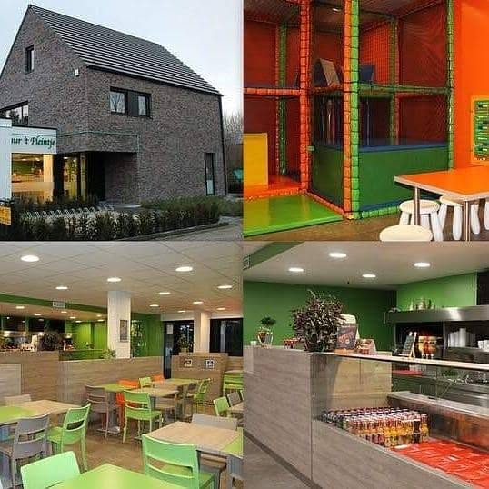
0588🇧🇪 België · Bree
Café en lounge met leuke suggesties. Brunch is mogelijk op aanvraag. Glijbaan, schommels, wip, ... in grote zandbak. Multimove pad van 2 km door het Limburgse groen.
🇧🇪 België · Herent
Leuke brasserie met een ruim terras vooraan waar je rustig kan zitten, maar ook achteraan zodat je zicht hebt op de kindjes, want achteraan is ook een waar speelparadijs met petanquebaan, houten speeltuig en springkasteel. Er staan ook schaapjes, dus extra fijn! Je kan er als ouders evenals kids lekker eten - toegankelijke kaart! Open van april t.e.m. oktober, bij mooi weer.
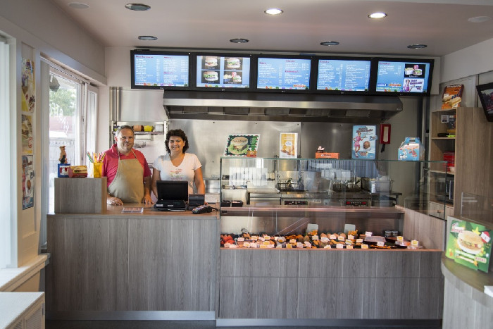
0590🇧🇪 België · Beveren
Leuke brasserie in Melsele met mooi zonnig terras en kleine speelzone. Op de kaart staan er ook kindergerechten. Kinderen kunnen niet van het terras (achteraan) .
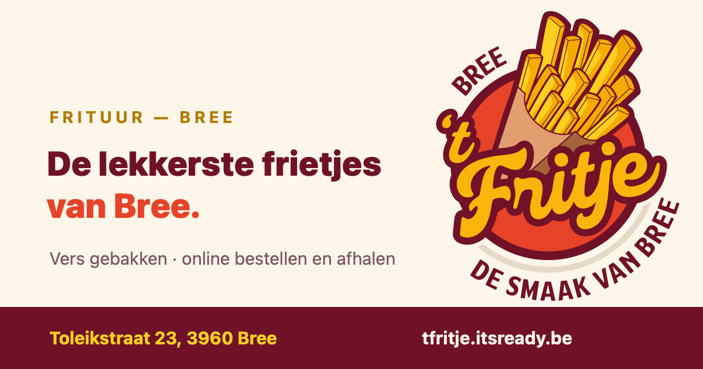
0591🇧🇪 België · Gentbrugge
Enkel voor een drankje of kleine snack mogelijk. Beperkte eetkaart met wat hapjes/snacks en enkele maaltijden. Brunch op zondag. Er is een leefplein van juni tot oktober waarop je als ouder een drankje kan drinken terwijl je kindje speelt.
🇧🇪 België · Lier
Leuke plaats voor ontbijt en lunch, ook soms diner. Fijn speelhoekje, mooi terras op een grote binnenkoer dus kinderen kunnen er ongestoord spelen en rondlopen.
via @mamavindt🇧🇪 België · Malle
Mooie horecagelegenheid met nieuwe buitenspeeltuin. Heerlijk eten en trappist van 't vat! Binnen kleine speelruimte.
🇧🇪 België · Leuven
Leuke plek om te ontbijten of te lunchen, met speelhoek en buitenruimte. Gelegen aan de bibliotheek, dus leuke combinatie. Er zijn altijd veel kindjes! Ontbijt, lunch, brunch. Heel aangenaam en vrij. Speelhoekje binnen. Buiten koer met stoepkrijt en pingpongtafel en leuk blauwe giga kunstig touw. Aan de bib Tweebronnen.
🇧🇪 België · Wevelgem
Leuk sharing concept met kindvriendelijke opties. Binnen is een leuke speelkamer voor de kinderen. Buiten is een groot overdekte terras en van voor ook speelgelegenheid.
🇧🇪 België · Herentals
Brasserie aan een camping. Ijsjes, snacks of eenvoudige gerechten. Voor de kinderen een leuke speeltuin, trampolinekussen, splashpark, schommels, ...
🇧🇪 België · Stekene
Camping met toegankelijke buitenspeeltuin + drankgelegenheid + kinderboerderij.
🇧🇪 België · Brakel
Leuke brasserie in centrum Brakel. Leuke kinderkaart en speelhoekje. Ook heel fijn terras ideaal voor cocktails en mocktails. Plusplunt is de lekkere pannenkoeken
🇧🇪 België · Melle
De kouterslag is een buitenspeeltuin voor kinderen waaraan een leuke horeca is gekoppeld. Ze hebben een ruim buitenterras voor in de zomer, met zicht op de speeltuin. Je kan er genieten van een drankje en een hapje/snack. Lekkere prijs-kwaliteit! Ze hebben ook een skatepark, buitenfitness, voetbalterrein en minigolf.
🇧🇪 België · Koekelare
Leuke indoor speelboerderij waar kinderen al spelend het boerderijleven kunnen beleven. Waar ouders samen met hun kind kunnen meespelen of lekker kunnen genieten van al het lekkere die de boerderij te bieden heeft (soep, broodje, koffie, taart, tapas,...). Splinternieuwe, grote speelruimte binnen (in een verwarmde schuur). Graanbak , speelruimte in het stro, houten huisjes, parcourtje met tractors, ... Vanuit de grote ramen in de `cafetaria` zie je de kindjes spelen en je kan ook in de speelruimte zitten. Beperkt qua eten, maar wel vers en lekker. Nog maar pas open dus misschien zal de eetkaart nog uitbreiden Betalend spelen: 6,5€ (2-12j)
🇧🇪 België · Gent
Leuke koffiebar met (vegan) gebak, lunch, pannenkoeken, koffie, chocomelk, coole freakshakes en zelfs een unicorn latte! Ook soms high tea met verschillende zoete en hartige gebakjes en toasts. Er is een verzorgingstafel en een rekje met speelgoed. Hier kan je iets kiezen en meenemen naar je plaats. Supergezellig en lekker!
🇧🇪 België · Machelen
Hotel-restaurant met binnen een speelkamer voor kinderen, vaak met springkasteel, soms begeleide activiteiten. Lekkere ontbijten of brunches (check website voor info)!
🇧🇪 België · Sint-Laureins
Gezellige zaak voor lunch, diner, af en toe een ontbijt. Er is buiten een grote zandbak met speelboot waar de kindjes kunnen spelen.
🇧🇪 België · De Haan
Gratis toegankelijke grote speeltuin met kleine kinderboerderij en terras met drinkgelegenheid.
🇧🇪 België · Meldert (Aalst)
De Goudkarper is een brasserie gelegen aan het water met een uitgebreide kaart en veel kindergerechten. De zaak beschikt over een volledig afgesloten speeltuin, zodat de kinderen rustig kunnen spelen en de ouders ondertussen genieten.
🇧🇪 België · Jette
Klassieke brasserie met kindermenu. Grote en kleine speeltuin vlakbij. Ook grote kinderen komen nog aan hun trekken met de hoge glijbanen. Gelegen aan het Laarbeekbos. Voldoende parkeergelegenheid.
🇧🇪 België · Rochefort
Italiaans restaurant in het hartje van Han sur Lesse. Met apart café en apart restaurant gedeelte. Klein speelhoekje met ruim aanbod aan speelgoedjes (keukentje, poppenkast, diertjes, boekjes, peuterspeeltjes, ...) Speelhoekje is gewoon in het restaurant zelf, geen aparte ruimte.
🇧🇪 België · Ciney
Leuke brasserie/frituur, vlak aan de autosnelweg om naar Durbuy te gaan. Ideaal om na een lange autorit de beentjes te strekken. Je kan er de klassieke gerechtjes eten, maar ook gewoon een frietje eten. Grote binnenspeeltuin aanwezig. Leuk pluspunt, in de zaak hangen tv’s waar je kan kijken op de camera in de speeltuin. Ideaal dus. Alles voor kinderen aanwezig; microgolf, kinderstoel. Snelle keuken, maar lekker. Ideaal als je niet wil stoppen onderweg in een wegrestaurant.
via @mamavindt🇧🇪 België · Deurne
BuurtBar aan cinema Rix met speelhoek, spelletjes. Gezonde voeding aan een kleine prijs en gratis kraanwater. Op woensdag vaak een kinderfilm op de middag.
🇧🇪 België · Dranouter
Vintage eetcafé met uitgebreide kindermenu. Kinderen kunnen zich uitleven in de grote binnen- en kleine buitenspeeltuin.
🇧🇪 België · Deinze
Vosselare Put is een plekje in Astene waar de tijd is blijven stil staan. Kinderen leven zich uit in het knutselhoekje of in de speeltuin. Honden liggen na de wandeling onder de tafels te slapen. Op het menubord staan tijdens de winter stoofpotjes en andere grootmoeders gerechtjes van de hand van kok Yves. Tijdens de zomer wordt Vosselare Put wakker geschud door zonnekloppers en waterliefhebbers. Dan geniet je er van slaatjes, mossels en andere snelle snacks. Zwemmen in de Leie, prachtige natuur! Let op: de toegang tot Vosselare Put is betalend in de zomermaanden (2,5€/persoon)!
🇧🇪 België · Sint-Pieters-Woluwe
Knus speelcafé met binnen- en buitenspeelzone, vrij klein maar gezellig. Binnen zijn er meerdere speelgelegenheden (2 huisjes, een poppenkast, los speelgoed) verdeeld tussen de tafels. Buiten is er een terras, een zandbak en een klimtoestel met glijbaan. Je betaalt 3 euro per kind, van zodra je kindje kan stappen.
🇧🇪 België · Groot-Bijgaarden
Dit is dé ideale plek voor een gezellige maaltijd met kinderen! Ze smullen van een hoofdgerecht, een dessertbuffet à volonté en een drankenbuffet à volonté. Dit allemaal terwijls de ouders genieten van het uitgebreide aanbod aan gerechten en het gekende buffetconcept. Als de maaltijd voorbij is, kunnen de kinderen gaan spelen in de kinderhoek. Tot slot gaan ze naar huis met een verrassing uit de speelgoedautomaat! Iedere Colmar is voorzien van een kidsruimte en kinderen krijgen een apart menu voor 10€. Aanrader!
via @mamavindt🇧🇪 België · Kortrijk
Dit is dé ideale plek voor een gezellige maaltijd met kinderen! Ze smullen van een hoofdgerecht, een dessertbuffet à volonté en een drankenbuffet à volonté. Dit allemaal terwijls de ouders genieten van het uitgebreide aanbod aan gerechten en het gekende buffetconcept. Als de maaltijd voorbij is, kunnen de kinderen gaan spelen in de kinderhoek. Tot slot gaan ze naar huis met een verrassing uit de speelgoedautomaat! Iedere Colmar is voorzien van een kidsruimte en kinderen krijgen een apart menu voor 10€. Aanrader!
via @mamavindt🇧🇪 België · Oostakker
Dit is dé ideale plek voor een gezellige maaltijd met kinderen! Ze smullen van een hoofdgerecht, een dessertbuffet à volonté en een drankenbuffet à volonté. Dit allemaal terwijls de ouders genieten van het uitgebreide aanbod aan gerechten en het gekende buffetconcept. Als de maaltijd voorbij is, kunnen de kinderen gaan spelen in de kinderhoek. Tot slot gaan ze naar huis met een verrassing uit de speelgoedautomaat! Iedere Colmar is voorzien van een kidsruimte en kinderen krijgen een apart menu voor 10€. Aanrader!
via @mamavindt🇧🇪 België · Sint-Denijs-Westrem
Dit is dé ideale plek voor een gezellige maaltijd met kinderen! Ze smullen van een hoofdgerecht, een dessertbuffet à volonté en een drankenbuffet à volonté. Dit allemaal terwijls de ouders genieten van het uitgebreide aanbod aan gerechten en het gekende buffetconcept. Als de maaltijd voorbij is, kunnen de kinderen gaan spelen in de kinderhoek. Tot slot gaan ze naar huis met een verrassing uit de speelgoedautomaat! Iedere Colmar is voorzien van een kidsruimte en kinderen krijgen een apart menu voor 10€. Aanrader!
via @mamavindt🇧🇪 België · Berchem
Dit is dé ideale plek voor een gezellige maaltijd met kinderen! Ze smullen van een hoofdgerecht, een dessertbuffet à volonté en een drankenbuffet à volonté. Dit allemaal terwijls de ouders genieten van het uitgebreide aanbod aan gerechten en het gekende buffetconcept. Als de maaltijd voorbij is, kunnen de kinderen gaan spelen in de kinderhoek. Tot slot gaan ze naar huis met een verrassing uit de speelgoedautomaat! Iedere Colmar is voorzien van een kidsruimte en kinderen krijgen een apart menu voor 10€. Aanrader!
🇧🇪 België · De Panne
Italiaans eten op de dijk in De Panne. Groot restaurant met apart speelkamertje met games voor kinderen. Je kan de koks pizza's zien bakken en pasta's koken. Buiten groot terras vlak aan het zand.
🇧🇪 België · Bilzen-Hoeselt
Leuk BBQ-restaurant! Diner en lunch op zondag,, lokale kwaliteitsvolle producten. Leuke binnen- en buitenspeeltuin. Bij mooi weer groot overdekt terras. Lekker eten met pure BBQ-smaken!
🇧🇪 België · Ieper
Leuke binnenspeeltuin waar je ‘s middags kan eten. Op zondag kan je je inschrijven voor het uitgebreid ontbijtbuffet dat echt wel héél goedkoop is. Ze organiseren ook vaak leuke activiteiten in de vakanties zoals zoektochten in de binnenspeeltuin, mini disco, enz. Let op: betalende inkom voor kinderen! 0 tot 18 maand is gratis, vanaf 18 maand tot 12. jaar is €7. Abonnement voor 10 beurten is €60.
🇧🇪 België · Bocholt
Het lekkerste ambachtelijke hoeve-ijs om te smullen op de boerderij. In de tuin van de boerderij is klein speeltuintje voorzien waar de kids zich kunnen uitleven.
🇧🇪 België · Sint-Martens-Leerne
Bij Cremerie Melanie kan je proeven van ambachtelijk hoeve-ijs op woensdag, zaterdag- en zondagnamiddag (van mei tot september). Terwijl de kindjes kunnen buitenspelen in de zandbak/met de tractors rijden, kunnen de ouders genieten van het mooie uitzicht op het boerderijterras, naast de koeien en kalfjes. Ook frisse drankjes te verkrijgen!
🇧🇪 België · Haacht
IJsjeszaak met buiten een springkasteel en binnen een speelhoekje waar een kinderijskarretje staat om te spelen.
🇧🇪 België · Waregem
Een zalige horecazaak, waar je heerlijk kan eten en de kleine kindjes zich binnen kunnen entertainen met Lego in het speelhoekje - of bij mooi weer buiten in de zandbak! Ruime openingstijden. Er worden ook events georganiseerd, check hiervoor hun website!
🇧🇪 België · Lichtervelde
Bar in Cultuurhuis De Keizer. Dit is de oudste werkende cinema in België. Je kan gezellig naar de film gaan of gewoon enkel iets gaan drinken in de bar. Ze hebben een uitgebreide kaart met wijn, biertjes, frisdranken, warme dranken… Er is een speelhoek en er zijn gezelschapsspelletjes aanwezig. In de vakantie zijn er geregeld activiteiten voor kinderen. Je kan er ook een familie- of verjaardagsfeestje laten doorgaan op reservatie.
🇧🇪 België · Wetteren
Gezellige, kleinschalige tearoom met een divers aanbod aan minicupcakes, ontbijt, speciality coffee en andere dranken. Gezellige inrichting binnen en bij mooi weer terras buiten. Leuk kinderhoekje met houten speelgoed voor kleine kindjes. Pluspunt: Jorieke, uitbaatster is zeer kindvriendelijk.
🇧🇪 België · Aalst
Leuke brasserie op het dorp in Nieuwerkerken. Hier kan je terecht voor lunch of diner of een ijsje of pannenkoek. Er is een leuke tuin buiten met onder andere een schommel en een speeltoestel. Soms ook een springkasteel.
🇧🇪 België · Sint-Niklaas
Speelhuisje/hoekje bij het café van meubelwinkel Deba. Je kan er iets eten of snacken (snelle maaltijden ook) en de speelhoek is gratis toegankelijk. In het weekend is het ‘bediend’ als in een vriendelijke dame is aanwezig met kleur- en knutselspullen om op je kindje te passen. Wij zijn er zelf bijgebleven en ook dat is uiteraard geen probleem. Er is een vrij grote kast met puzzels, houten speelgoed,… een muur met een keukentje en ander fantasiespeelgoed en er zijn ook 2 tv-hoekjes. Wij waren aangenaam verrast!
🇧🇪 België · Vremde
Italiaanse trattoria met grote tuin en speeltuintje. Lekker, echt Italiaans eten.
🇧🇪 België · Assebroek
Sport-, lees- en eetcafé. Verzorgde snacks, tapas en suggesties. Maar ook koffie met gebak en vele bieren. Kleine speelruimte binnen voorzien, er zijn ook spelletjes en strips aanwezig. Grote speeltuin in piratenthema.
🇧🇪 België · Peer
Een brasserie met een kleine speelhoek binnen. Een tafeltje met wat speelgoed zoals boekjes, magnetische tegels, blokken, .... Ook een kindvriendelijke kaart!
🇧🇪 België · Lierde
Leuke kleinschalige zaak voor lunch en tearoom zelfgemaakte dessertjes. Speelgoed beschikbaar (blokken, keukentje) en je krijgt een kleurplaat. Buiten klein speelhuisje en wat grote blokken.
🇧🇪 België · Machelen-aan-de-Leie
Brasserie met geweldige prijs-kwaliteit en een enorm uitgebreid aanbod speelgoed binnen. Winkeltje, huisje, poppen, Lego, Duplo, 'scooters',... Echt voor elk kind wat wils! In de zomer zijn er fonteintjes waarin gespeeld kan worden. Voor kleine kinderen is er aangepast eetgerei.
via @mamavindt🇧🇪 België · Nijlen
Leuke, laagdrempelige seizoensbrasserie De Beemden. Unieke locatie te midden het groen naast de Netedijk in Nijlen. Je kan er terecht voor lunch, diner en op zondag serveren ze een heerlijk ontbijtbuffet vanaf 10u. Er is een leuke speeltuin in het bos en er zijn enkele diertjes te bewonderen. Voor elk wat wils qua eten en drinken! Ook te boeken als evenementenlocatie. Deze seizoenslocatie is tijdens de paas- en zomervakantie open van woensdag tot zondag en doorheen het jaar op zondag. Op zaterdag zijn er vaak privéfeesten.
🇧🇪 België · Gent
Leuk terras in het Astridpark met vernieuwde speeltuin om te ontbijten, lunchen of aperitieven met lokale en biologische producten. Binnen in de Lousbergmarkt zijn er ook zitplaatsen met een klein speelhoekje.
🇧🇪 België · Rijkevorsel
Leuk klein ijssallonetje. Er zijn wat gezelschapsspelletjes en kleurboekjes, buiten zijn er vogeltjes, konijntjes, kikkers en vissen om naar te kijken.
🇧🇪 België · Massemen
De Blekerij is een ijssalon waar je ook pannenkoeken en wafels kan eten. Ze hebben een mooi groot terras met tractoren en ander speelgoed voor de kids om op te spelen. Ook hebben ze rondleidingen bij de diertjes. De openingsuren verschillen van seizoen tot seizoen. Best op Facebook kijken of ze open zijn. Hun ijsautomaat is altijd open. Je kan ook mooi wandelingen maken in de buurt.
🇧🇪 België · Bree
Zalige speeltuin voor grote en kleine kinderen! Voor de kleintjes is er een kleine zone met kleine speeltuigen. Voor de groten een uitgebreide speeltuin. Ernaast ligt er een skatepark. Er is ook een plaatsje naast met van die fitness turntoestellen. Neem een lekkere picknick mee, of zak af naar de cafetaria voor een fris drankje of lekker ijsje! Open tijdens de zomervakantie, elke dag van 13u30-17u30.
🇧🇪 België · Kapellen
Leuke gezellige bistro met een groot terras. Ze hebben vaak ook diertjes achterin. Het is onlangs vernieuwd en heel hip geworden. Ook de speeltuin is vernieuwd.
🇧🇪 België · Helchteren
Na een wandelingetje door het wild- en wandelpark vind je dit (basic) bosrijk cafeetje tussen de everzwijnen. Je kan er ook eten. Speeltuin is net vernieuwd. Prijzen vallen reuze mee en 't is daar altijd gezellig!
🇧🇪 België · Essen
Leuke brasserie midden in het groen/recreatiezone in Essen. Er is een grote buiten speeltuin en minigolf aanwezig met een groot terras voor drankjes en eten. Met slecht weer is er binnen ook een speelruimte. Gratis entree en gratis parkeren. Enkel geopend in het weekend. Minigolf betalend.
🇧🇪 België · Eeklo
Tearoom/brasserie bij het bos ‘het Leen’ in Eeklo. Aansluitende speelruimte in buitenlucht voor jong en iets ouder! Daarna kan je nog een fijne boswandeling maken.
🇧🇪 België · Lichtervelde
Overheerlijke ambachtelijke ijsjes. Grote tuin om te ravotten en een speeltuig voor iets grotere kindjes.
🇧🇪 België · Houthulst
Een kindvriendelijke brasserie die eenvoudige maar lekkere gerechten serveert. Speelhoek in de veranda en verschillende speeltoestellen bij het ruime terras.
🇧🇪 België · Oudenburg
Pop-up zomerbar/ijsbar waar je lekker vers ijs kan eten en een drankje kan drinken. Je kan ook pannenkoeken eten. Het is vnl. een buitenaccomodatie, maar bij slecht weer kan je binnen/overdekt zitten. Er zijn twee springkastelen voor de kinderen en enkele kippen/geitjes te bezichtigen. Ideale tussenstop als je met de fiets op ronde bent. Check hun Facebook: https://www.facebook.com/people/De-Crèmebolle/100093265157550/
🇧🇪 België · Eppegem
IJsjestuin die heel de zomer de lekkerste ijsjes biedt. De tuin staat vol met kleine speelelementen, bv. een paddenstoel, een koe, er is een klein parcours gemaakt met boomstronken etc. Is geen echt “speeltuin”, maar is wel heel kindvriendelijk. Voor de korte tijd dat je daar zit hebben ze echt wel hun entertainment!
🇧🇪 België · Vorselaar
Cafetaria van de sporthal die uitkijkt op een speeltuin (opgesplitst 0-6 en 6-12 jaar). In de zomermaanden kan je ook minigolf spelen. Aangezien dit zich op het gemeentelijke sportterrein bevindt, is er ook een voetbalveld, looppiste, beachvolleybalveld en skateparkje vlakbij. Achter het terrein loopt een fraaie dreef tot aan het Kasteel, mooi in elk seizoen
🇧🇪 België · Woumen
Frituur met leuke buitenspeelruimte (afgesloten) met een springkasteel, mini-frituur, kindertafel, 4 op een rij, glijbaan, wip, ballen, ... Ook binnen is er een kindertafel met speelgoed in een kast, daarin blokken, speelgoed, ...
via @mamavindt🇧🇪 België · Merksplas
Gezellige klantvriendelijke frituur met leuke speelhoek binnen! Buiten staan 2 speelhuisjes en zijn er kinderpicknicktafeltjes. Aanrader als je in de buurt bent! Ze hebben ook een uitgebreid aanbod van smoskes en broodjes, hamburgers, spaghetti, koude schotels, videe enz.
via @mamavindt🇧🇪 België · Houtvenne
Frituur met zowel een binnenspeelhoek als een buitenspeeltuin.
via @mamavindt🇧🇪 België · Waregem
Restaurant met mooie buitenspeeltuin, vlak aan het water. In de zomer ook aquapark, zomerbar en tearoom!
via @mamavindt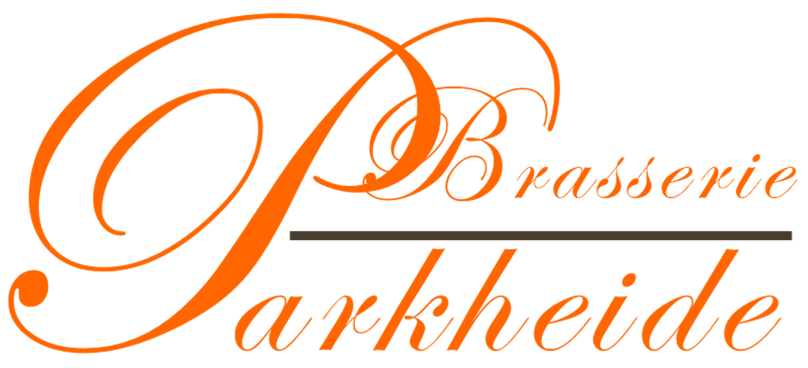
0652🇧🇪 België · Wortegem-Petegem
In De Goede Geburen kunnen de kinderen gratis spelen - er is een springkasteel, zandbak, speeltuig, trampoline. Je kan hier heerlijk eten of gewoon eentje drinken. De vrijdagavond is er regelmatig een thema-avond waarbij je à volonté scampi’s, côte à l’os, mossels, … kan eten! Je kan er de vrijdagavond, zaterdagavond en zondagmiddag terecht. Hele grote aanrader!
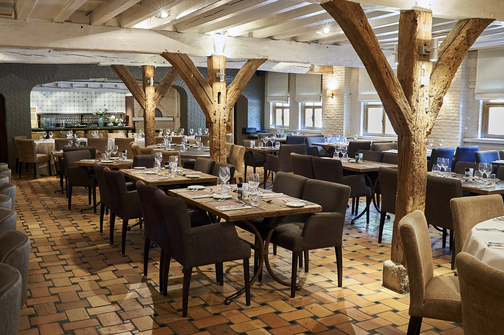
0653🇧🇪 België · Sint-Lievens-Houtem
Gezellige taverne met klassieke kaart. Er is een springkasteel en speeltuin buiten en een speelruimte binnen. Terras vooraan zonder speelgelegenheid. Terras buiten aan de speeltuin/springkasteel.
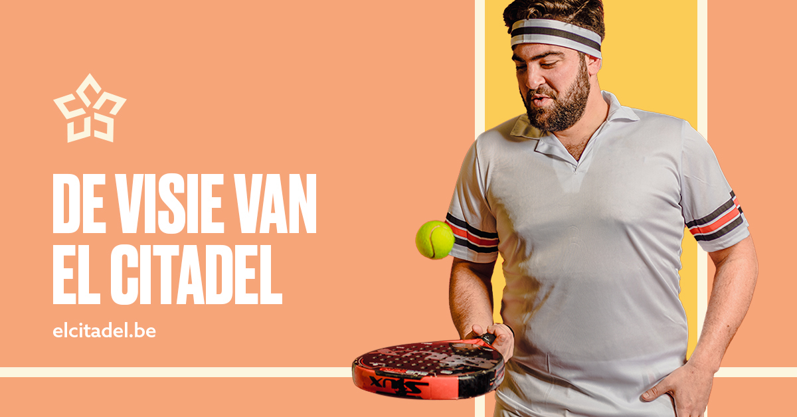
0654🇧🇪 België · Wilrijk
Toffe brasserie met uitgebreide menu, voor ieders wat wils. Boven is er een speelparadijs voor de kinderen. Wel vooraf reserveren zodat ze een begeleidster kunnen regelen. Dit kost €7,5 per kind. Kinderen mogen kiezen of ze boven eten of bij het gezelschap. Er is ook een ruim terras.
via @mamavindt🇧🇪 België · Laakdal
Gezellige gerestaureerde hoeve waar een eetcafé gevestigd is. Je kan er heel lekker (eenvoudig) eten (croque, spaghetti, stoofvlees friet, ...), gewoon gezellig iets gaan drinken, en op bepaalde zondagen wordt er op reservatie een zeer rijkelijk ontbijtbuffet georganiseerd. De zaak heeft een schuurtje dat verbouwd is tot veranda waar een speelhoekje gemaakt is (matten, tipitent, kussens, tafeltje, trofastkast met poppen, blokken, auto's, .... ), en een speeltuin in de zandbak met groot klimtoestel, peutertoestelletjes, springkasteel, zandspeelgoed... ook volière met vogeltjes, cavia's... Recht over kinderboerderij Ooievaarsnest (staat wel al op de kaart), waar een hele mooie samenwerking mee is.
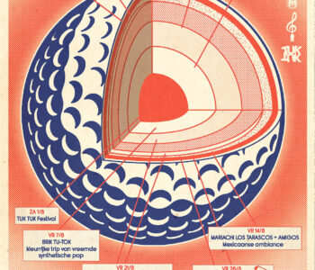
0656🇧🇪 België · Scherpenheuvel-Zichem
Brasserie met een uitgebreide kinderspeelhoek voor kleine kindjes en spelletjes/boeken voor de ouderen. Je kunt op je gemak van je eten genieten doordat je ook tafeltjes beschikbaar hebt kort aan deze speelhoek. Ontbijt, lunch en avondeten tot 18u (zomer 19u).
🇧🇪 België · Zomergem
Een hoeve gelegen in Zomergem waar je lekkere ijsjes, coupes en pannenkoeken kan eten. Er is buiten een zandbak, speelhuisje en dergelijke beschikbaar. Dit tussen de koeien. Binnen staat een speelkeukentje. Ook 2 automaten buiten waar je verse hoeveproducten kan kopen!
via @mamavindt🇧🇪 België · Dranouter
Lekkere brasserie met groot terras en heel ruim buitenspeeldomein voor de kinderen. 4 trampolines, schommels, glijparcours, enz.
🇧🇪 België · Ronse
Leuke brasserie met diertjes (varkentjes, alpaca’s, konijntjes, geitjes, ezels). Als activiteit is er een een speelpleintje met alles uit hout. Ook mooie locatie in het groen! Ze hebben er een speciaal kindermenu. Beperkte openingsuren, check de website! Je kan er ook zipline + muurklimmen, lage touwpiste, ezel wandeling, alpaca wandeling, tour met tuktuk, vespa huren, free fall, grime en zoveel meer… Deze activiteiten zijn wel te reserveren, betalend. Als je wil kan je er zelfs reserveren om te slapen in sfeervolle safaritenten!
via @mamavindt🇧🇪 België · Zwevezele
Leuke binnenspeeltuin, 7 euro ingang per kind vanaf ze kunnen stappen. Kruipers en volwassenen mogen gratis binnen. Goedkope kaart om iets te drinken en de vers gebakken pannenkoeken zijn zeker de moeite waard! In de zomer is er ook een leuke buitenspeeltuin en in de winter kan je gezellig binnen vertoeven. Ook is er een apart afgezet stuk voorzien voor de allerkleinsten en een volledig afgeschermd stuk voor diegene die ook binnen willen voetballen.
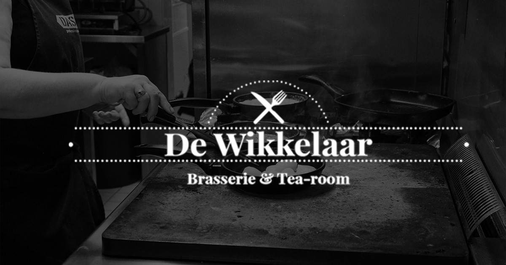
0661🇧🇪 België · Mol
Goed familierestaurant met lekker eten en grote buitenspeeltuin. Er zijn shows met live artiesten en kinderanimatie. Leuke brasserie waar je a la carte kan eten, ook steppegras. Op zondag kan je er, na reservatie ontbijten met een buffet. Op woensdag in juli en augustus is er vanaf 14u gratis kinderanimatie. Speeltuin is gratis bij consumptie. Grote buitenspeeltuin met een apart gedeelte voor de kleintjes. De speeltuin is volledig omheind.
🇧🇪 België · Ninove
Restaurant met heel leuke buitenspeeltuin voor de kinderen. Je kan er op het terras zitten en terwijl de kinderen in de gaten houden. Is ook een hotel.
🇧🇪 België · Merendree
Eetcafé met terras en ruime tuin, geopend in de zomermaanden (vanaf mei tot ...). Huiselijke sfeer, mooie tuin, speelgoed zoals duplo, gezelschapsspellen, schommel. Beperkte kaart met enkele dineropties.
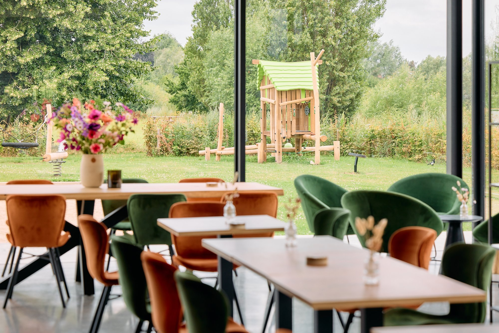
0664🇧🇪 België · Ardooie
Gezellige cafetaria in blokhut-stijl midden in Provinciedomein 't Veld. Mét terras en speeltuin om te ravotten. Bij minder weer kunnen binnen de voetjes gewarmd worden aan de stove. Check zeker de openingsuren op hun Facebookpagina! Na een mooie boswandeling kunnen de kindjes heerlijk ravotten op de speeltuin, ook de peutertjes! Niet supergroot, maar een leuke plek waar je de keuze hebt tussen op de bankjes een eigen drankje te drinken of iets op het terras.
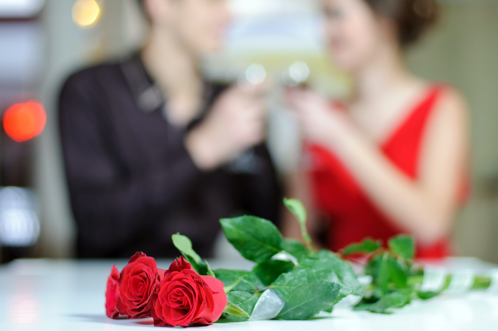
0665🇧🇪 België · Astene
Leuke boerderij met veel ontdekkingsmogelijkheden voor de kindjes, de kleintjes op tractors, de grote op de gocarts. Vrij bezoek in de stal mogelijk. Heel lekker romige ijsjes te koop. Om de dorst te lessen is er ook frisdrank, bier, wijn en koffie te koop. Zonnig terras in de weide naast de stal.
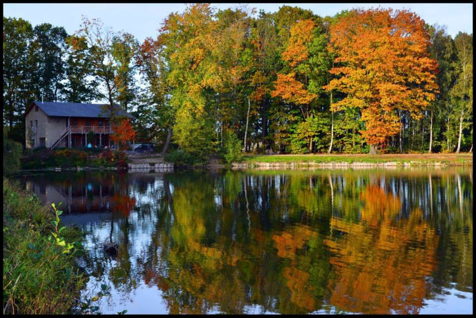
0666🇧🇪 België · Grobbendonk
Buiten -en binnenspeeltuin, waar je als ouder ook rustig een koffie kan drinken en iets kleins kan eten. Handig om je kind zich even te laten uitleven, terwijl je zelf een beetje me-time hebt. Buitenspeeltuin is gratis, binnenspeeltuin is betalend (6€/kind). Ook ontbijt, pannenkoeken en gerechten te verkrijgen.
🇧🇪 België · Lierde
Kinderboerderij, beschikbaar voor vakantiekampjes, verjaardagsfeestjes en workshops. Ook tijdens de zomer extra geopend met de zogenaamde 'Open Knabbeldagen'. Vanop de website: "Op de Open Knabbeldagen zwaaien de poorten van De Knabbelweide wagenwijd open voor iedereen die zin heeft in een dag vol plezier, dierenknuffels en gezelligheid! Of je nu komt met vrienden, familie, of gewoon even wil ontspannen na een stevige fietstocht, iedereen is welkom." Kindjes vinden het heerlijk, er is voor ieder wat wils, ook met speelgelegenheid en opties voor eten en drinken. Je kan ook inschrijven voor 'voertoeren', waarbij kinderen onder begeleiding de dieren mogen voeren.
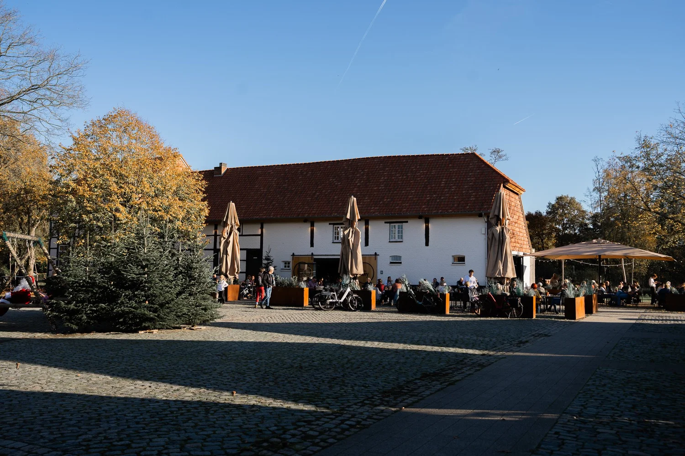
0668🇧🇪 België · Sint-Job-in-'t-Goor
Leuke brasserie langs de Schoten vaart. Hier kan je terecht voor lunch of diner. Er is een buitenspeeltuin met een gezellig terras. Lekker eten.
🇧🇪 België · Baal
De Kom heeft voor elk wat wils. Kindvriendelijke brasserie met binnen- en buitenspeeltuin. Ruime kaarten voor lunch en avondeten, van baby's tot volwassenen. Leuk terras. Kleine ruimte voor de allerkleinsten ook. Soms worden er thema-avonden en -ontbijten georganiseerd. Ook mogelijkheid om er een feestje te organiseren. Lekkere cocktails! ;-)
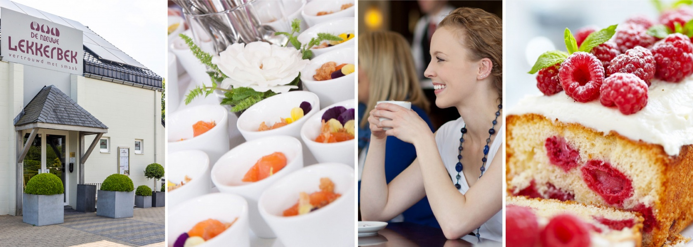
0670🇧🇪 België · De Haan
Restaurant met lunch en diner. In De Haan, tussen de velden. Rustige ligging met ruime parking. Verschillende kindergerechten beschikbaar. Lekker eten, iets hogere prijsklasse. Terras bij mooi weer, met zicht op speeltuin (trampoline, schommels, zandbak, speeltuigen, gocarts, ...) en boerderijdieren (gratis).
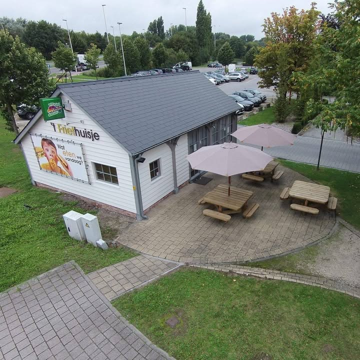
0671🇧🇪 België · Loppem
De Lekpot is een gezellig restaurant en de ideale plaats om even te verpozen in een aangenaam en warm interieur. Tijdens de warme maanden is het heerlijk vertoeven op het zonnig terras in een landelijk kader. Met speeltuintje buiten.
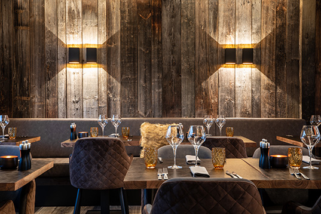
0672🇧🇪 België · Deerlijk
De Living is een ‘bijzonder’ koffiehuis waar kwetsbare jongvolwassenen probeerruimte krijgen om te groeien. De living is ideaal voor een koffie met een vers taartje. Binnen vind je een klein, gezellig speelhoekje. Soms kan je er ook ontbijten. PAS OP: Enkel open op zaterdag van 14u tot 18u en zondag van 11u tot 17u.
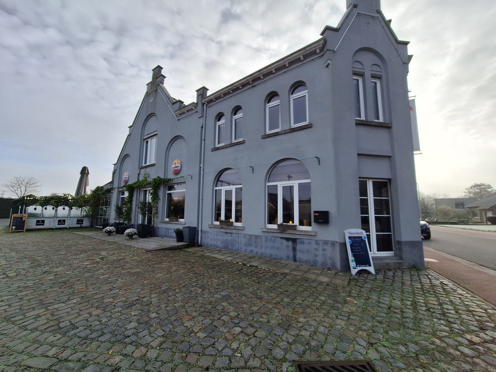
0673🇧🇪 België · Vliermaal
Frituur met ook zeer lekkere zelfbereide gerechten (stoofvlees, goulash, pasta’s, broodjes…). Gezellige ruimte om ter plaatse te eten. Voorzien van gezelschapsspellen en in de zomer een grasplein om op te spelen, met springkasteel!
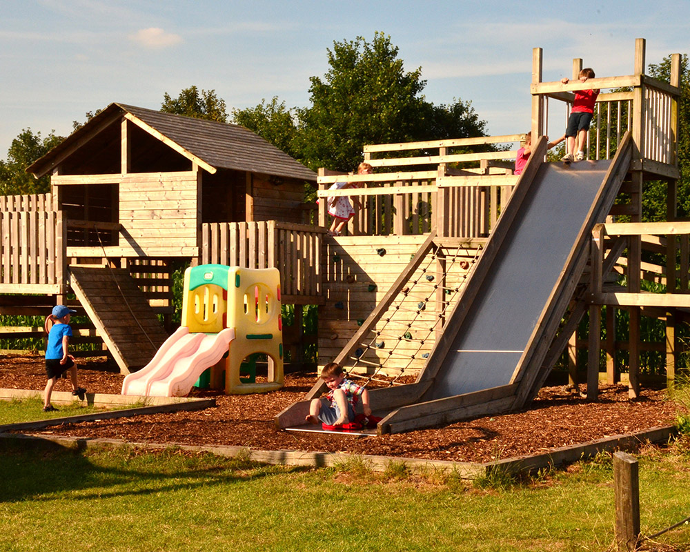
0674🇧🇪 België · Pelt
Bij De Lou in Pelt is het altijd gezellig tafelen met het hele gezin! Van lekkere ontbijtjes tot high tea met een twist – hier geniet je samen van versgebrande koffie, homemade lekkers en een warme sfeer. Kindvriendelijk, sfeervol én met een leuke mini-shop vol cadeautjes. Perfect voor een relaxed familiemoment met dat tikkeltje extra.
🇧🇪 België · Wervik
Leuke bar waar je eenvoudige gerechten kan eten (pasta, croques,…) met een grote tuin/weide waar fietsjes ter beschikking zijn, oude koetsen, gekke fietsen,… Allemaal in cowboythema.
🇧🇪 België · Wakken
Rustig gelegen brasserie met klassieke keuken en achteraan een speelgelegenheid met o.a. een springkasteel.
🇧🇪 België · Paal
De Merelhoeve is een gezellig trefpunt aan de vallei van de Zwarte beek. Omheinde speeltuin met dieren en drinkgelegenheden. Vermits ze geen maaltijden of snacks serveren, is het toegelaten je eigen lunchpakket op het terras te nuttigen mits consumptie. Alle dranken dienen afgehaald te worden aan de toog. Ook verwachten ze dat je de tafel afruimt bij het naar huis gaan.
🇧🇪 België · Aubel
Restaurant dicht bij de Abdij van Val Dieu met mooi terras en speeltuintje voor kinderen.
🇧🇪 België · Gistel
Leuk brasserie naast de Oostmolen van Gistel. Buiten een heel aangenaam terras, met groot speelplein voor de kinderen. In de zomer staat er een springkasteel. In de zomer kan op zondag de molen naast de brasserie ook bezocht worden.
 0680
0680
🇧🇪 België · Knesselare
Lekker restaurant met kindermenu. Binnen uitgerust met ruime speelhoek en buiten grote speeltuin, tuin, trampolines e.d.
🇧🇪 België · Kanegem
Brasserie/tearoom waar je zowel 's middags, in de namiddag, als 's avonds kan langsgaan. Vooral in de zomer een aanrader om met kinderen te gaan want leuke (kleine) speeltuin buiten. Groot terras waar je kan zitten. Grote menukaart en lekker.
via @mamavindt🇧🇪 België · Zuienkerke
Gezellig en kindvriendelijk restaurant met terras en speeltuin. Je kan er iets drinken, een pannenkoek eten of genieten van een warme maaltijd.
🇧🇪 België · Ruiselede
Leuke tearoom-restaurant. Laagdrempelig, echt een aanrader, van jong tot oud! Super leuke buitenspeeltuin met springkussen! Bij De Nieuwe Lekkerbek geniet je van een ruim aanbod aan gerechten uit de doorlopende keuken in een aangename setting. Ook kan je iedere namiddag binnenspringen voor de tearoom met huisbereide pannenkoeken, ijsjes of een koffie. Kinderen kunnen zich uitleven in de speeltuin die volledig omheind is.
via @mamavindt🇧🇪 België · Mol
Brasserie met ontbijt- en lunchgelegenheid en tearoom. Er is een speelruimte binnen voorzien voor kinderen.
🇧🇪 België · Heverlee
Gezellig restaurant met afgesloten speeltuin (klimding, glijbaan, huisje) en dicht bij een spoorlijn. Ideaal voor kinderen die houden van treinen kijken. Mijn peuter is fan.
🇧🇪 België · Burst
Eetcafé waar je gezellig iets kan drinken of eten. Mooi afgesloten terras achteraan met speeltuin. Ook binnen grote speelhoek.
🇧🇪 België · Wichelen
De Plaetse is een brasserie gelegen in Schellebelle, gespecialiseerd in vleesgerechten en to share-gerechten. Er is een buitenspeeltuin aanwezig met schommel, glijbaan en speelhuisje.
🇧🇪 België · Blankenberge
Leuke horecazaak (hoevetoerisme) met hoeve-ijs, wafels, pannenkoeken, … Op verschillende momenten in het jaar organiseren ze ook brunches. Er is een leuke tuin met uitkijk op paarden en koeien. Er staat een grote zandbak met speeltoestel en bij goed weer staat er een springkasteel.
🇧🇪 België · Zevergem
Leuke brasserie waar je kan lunchen, dineren en er is ook een tearoom met zelfgemaakt ijs. Er is niet echt een speeltuin, maar je kan wel met je kindjes op bezoek bij de koetjes en de varkentjes. Er is ook een leuk karretje met allerhande speelgoed. Leuke boerderij waar de koetjes kunnen bezocht worden. Lunch en diner op reservatie, voor tearoom en vers ijs kan je gewoon binnen wandelen. Er is een hoekje met speelgoed en strips voor de kinderen, en het personeel is heel kindvriendelijk.
🇧🇪 België · Kessel
Cafetaria aan de sporthal met buitenspeeltuin. Een kaart met heerlijke tapas, zomerse cocktails, een selectie frisse wijntjes en een uitgebreide bierkaart. Ook desserts en kleine snacks verkrijgbaar. Achterliggend is het domein van het Fort van Kessel, mooi gebied om rondom te lopen en watervogels te spotten.
🇧🇪 België · Neerpelt
Groot terras, zowel binnen als buiten, met daarnaast een zeer grote speeltuin. Speeltuin is gericht op zowel kleine als grotere kinderen. Aangelegen ook een paar dieren, zoals hertjes, geitjes en kippen en een minigolfterrein Op het terras kan je lekker iets drinken, lunchen of dineren. Leuk restaurant met groot buitenterras en door de scouts een enorme buitenspeeltuin geschikt voor diverse (jonge) leeftijden. In de buurt kun je op een zomerse dag ook afkoelen in het naastgelegen klankenbos wat enorm leuk is voor je kinderen.
🇧🇪 België · Maldegem
IJshoeve waar je heerlijk, versgemaakt roomijs of sorbet kan proeven. Lekker ijs, basic speeltuintje en boerderij. Rustig gelegen en overdekt terras. Heerlijk hoeve-ijs in de Reinaardhoeve. Heel grote bollen, veel smaken. Buitenspeelruimte aanwezig. Groot terras en ook overdekt terras. Van 1 mei tot de 3de week van september iedere middag open vanaf 13u30. Enkel op maandag gesloten. De Reinaardhoeve is gelegen langs fietsknooppunten en de plattelandsroute.
🇧🇪 België · Gent
Klein cafeetje waar je terechtkan voor een drankje, koud buffet (dat je per gewicht betaalt), soep, tapas, spelletjes, een speelkamer voor kinderen en evenementen. Sinds kort hebben ze ook een aantal variabele warme gerechten. Leuk weetje... Na 22.00 krijg je 25% korting op het buffet. Zo beperken ze verspilling en kan je in plaats van een frietje gewoon iets gezond komen eten in een gezellige sfeer! Mini terras op de stoep aan de straatkant.
via @mamavindt🇧🇪 België · Vorselaar
Zeer verzorgd restaurant in Vorselaar (diner en ook te reserveren voor feesten). Het restaurant is ideaal als je zelf wat uitgebreider wil dineren. Voor kinderen is er een hele menu en ze krijgen een leuk kinderbord als ze kleiner zijn. Er is een mooie speelhoek met o.a. knuffels en een groot poppenhuis. De speelhoek is niet zichtbaar vanuit het restaurant, dus dit is geschikt voor iets oudere kindjes.
🇧🇪 België · Winksele
Leuk eetcafé met lunch, diner en dessertjes. Buiten heerlijk terras met grote tuin met glijbaan, wilgenhuisje. Binnen zijn er ook enkele kleine gezelschapsspellen. Kinderstoelen beschikbaar. Kindermenu. Lekker eten, ook brouwerij dus ook lekker zelf gebrouwen bier!
🇧🇪 België · Zwijndrecht
Leuk, traditioneel bruin café. In de winter kan je er niet veel komen doen met je kindjes, maar in de zomer kunnen ze ravotten in de grote tuin met zandbak, speelcaravan en klimboom. Dorst? Voor 1 euro koop je voor de kindjes een ‘grenadienneke’, een glaasje water met een beetje grenadine (ranja).
🇧🇪 België · Waregem
Brasserie met diverse kaart. Leuke buitenspeeltuin met springkasteel. Zeer vriendelijke bediening en het gaat zeer snel! Eenvoudige maar superlekker gerechtjes! Groot, groen, zonnig terras midden in het centrum.
🇧🇪 België · Gent
Speelgoedwinkel met duurzaam en houten speelgoed en een mooi assortiment aan ecologische kledij. Er is een bijhorende speelbar waar kinderen kunnen spelen in de speelhoeken en de binnentuin, terwijl je als ouders gezellig iets drinkt.
🇧🇪 België · Essen
Brasserie met terras. Er is buiten op het terras een grote omheinde speeltuin.
🇧🇪 België · Mechelen
Super hippe smaakmarkt met verschillende kraampjes met gerechten uit allerlei landen, ijs en koffie. Er is een speelhoekje voor kinderen. Een echte aanrader om te bezoeken als je met kinderen in Mechelen bent!
🇧🇪 België · Mortsel
Brasserie met betaalbaar eten, speeltuin en springkasteel buiten.
🇧🇪 België · Elverdinge
Leuk restaurant met zowel een binnen- speelhoek als buitenspeelhoek. Buiten is het heel gezellig zitten, binnen iets minder.
🇧🇪 België · Olmen
Leuke brasserie in Olmen (Balen), gelegen naast het kanaal. Heeft een binnenspeelkamer en een grote buitenspeeltuin (met springkasteel). Vlotte bediening, lekker eten.
🇧🇪 België · Vladslo
Leuke brasserie in Vladslo. Hier kun je lunchen en dineren. In de namiddag van 15u tot 18u serveren ze verse wafels, pannenkoeken & ijscoupes. Ze hebben een grote tuin waar de kinderen kunnen voetballen, spelen op het springkasteel en een grote zandbak met speelplein.
via @mamavindt🇧🇪 België · Beernem
Leuk restaurant waar je kan ontbijten, lunchen en tearoom. Er is buiten een houten speelhuisje met glijbaan waar de kindjes kunnen spelen. Heel lekker en vriendelijk personeel.
🇧🇪 België · Wiekevorst (Heist-op-den-Berg)
IJshoeve waar je ijsjes, pudding en yoghurt kan eten en kopen. Je kan er ook iets drinken op het terras buiten, aan de speeltuin met zandbak. Er is ook een overdekt gedeelte waar je droog kan zitten. Kinderen kunnen naast de speeltuin rond rijden op speelgoed tractors. Onder begeleiding van ouders/volwassenen kunnen de kindjes naar de koeien gaan kijken.
🇧🇪 België · Kortrijk
Zomer concept in een prachtige binnentuin, verscholen achter het historisch Broelmuseum, toch pal in het centrum, aan de Leieboorden. Rustige en heerlijke setting voor een drankje in een van de vele zithoekjes!
🇧🇪 België · Kruishoutem
Volks restaurant / café vlakbij Lozer bos. Je kan hier perfect iets drinken als tussenstop tijdens een fietstocht, of je kan genieten van een lekkere lunch, terwijl de kinderen zich amuseren in de speeltuin.
🇧🇪 België · Knokke
Rustig gelegen familierestaurant met indoor én outdoor speeltuin (inclusief aparte peuterzone), bistro, tearoom en ruime familiekamers. Perfect voor gezinnen met kinderen, op wandelafstand van strand en polders.
🇧🇪 België · Meersel-Dreef
Taverne waar je broodjes, ijsjes, etc. kan krijgen, en er is een hele grote speeltuin, de Zevenster.
🇧🇪 België · Mortsel
Kleinschalige kinderboerderij met terrasje en buitenspeelruimte.
🇧🇪 België · Roeselare
Koffie van een echte barista, een pannenkoekske gemaakt door een banket bakker of een ontbijtje. Gezellig en huiselijk ontbijten! Met speelruimte voor de kinderen.
via @mamavindt🇧🇪 België · De Haan
Leuk eethuis met reuzegrote tuin met grote speeltuin achteraan. Ouders kunnen rustig genieten van het zonnig terras zonder zich zorgen te maken over hun kids, de tuin is namelijk volledig afgesloten. Ontbijten met kwalitatieve en verse producten, lunchen of genieten van de dagelijks wisselende dagschotel of iets hartige nuttigen na 14 uur. Het kan allemaal en ook voor de kids hebben ze een uitgebreid aanbod! Je kan hier ook overnachten.
🇧🇪 België · Houthulst
Leuke alternatieve plek om lekker en vers te eten,. Avontuurlijke buitenspeelplek waar kinderen lawaai mogen maken en vuil mogen worden.
🇧🇪 België · Nijlen
Een leuke plek waar je gedurende een periode met goed weer (lente, zomer, herfst) een ijsje kan eten en een drankje kan drinken. Een heel fijne buitenspeeltuin en enkele diertjes in de omgeving. Opgelet, het is volledig buiten te doen (foodtruck achtig die op een vaste plaats staat).
🇧🇪 België · Herne
Brasserie met uitgebreid kindermenu. Buiten speeltuintje.
🇧🇪 België · Wakken
Bakkerij/tea-room om gebakjes/wafels/pannenkoeken te eten. De kinderen kunnen binnenspelen in een speelhoekje en bij mooi weer in de tuin met schommel/springkasteel/etc.
🇧🇪 België · Diepenbeek
Café met kleine speeltuin buiten. Vrij toegankelijk.
🇧🇪 België · Sint-Niklaas
Leuke kinderboerderij waar ouders en kinderen iets kunnen drinken en eten (ijsje, pannenkoek) Het is verboden eigen eten en/of drinken mee te nemen. Ze vragen geen inkom. Kinderen kunnen hier ook in speelhuisjes, op de trampoline en springkasteel springen, schommel en er zijn kleine tractors die de kindjes kunnen besturen (go-cart gewijs) Openingsuren kunnen afwisselen naarmate winter/zomer Ze laten dit wel weten op hun facebookpagina.
🇧🇪 België · Mariakerke
Bruine kroeg/eetcafé, gelegen tussen 3 natuurgebieden Kasteel Claeys Bouuaert, Vinderhoutse bossen en het natuurgebied Bourgoyen-Ossemeersen. Kleine speeltuin, lekkere en simpele keuken!
🇧🇪 België · Kalmthout
Brasserie/restaurant met buitenspeeltuin, zonnig terras en uitgebreide kinderkaart. Ook lekkere veganistische opties en mocktails. In weekend ook brunch/lunch, doorheen de week pas vanaf de namiddag geopend.
🇧🇪 België · Lommel
Brasserie die elke dag geopend is, behalve op woensdagen. Kindvriendelijk personeel. Vooral in de zomer fijn om buiten te zitten terwijl de kinderen kunnen spelen in het speeltuintje. Op wandelafstand (onder de brug door of de brug oversteken +-500m) ligt het Barrierpark, een mooi, klein parkje met grotere speeltuin. Fijn om te combineren met De Brugwachter!
🇧🇪 België · Ekeren
Let op: betalende speeltuin! 10.000m2 binnen- en buitenspeeltuin. Op zondag wordt er een ontbijtbuffet georganiseerd waarbij de inkom tot de speeltuin inbegrepen is in de prijs van het ontbijt.
🇧🇪 België · Schoten
Gezellige horeceazaak voor ontbijt, koffie en lunch met een kleine binnenspeeltuin aan (gratis). Ook handig voor -2 jarigen. Je kan er ook verjaardagsfeestjes geven.
🇧🇪 België · Lichtervelde
Nostalgische bruine kroeg, gekend voor spaghetti en snacks! Opgepast: reserveren niet mogelijk.
🇧🇪 België · Olen
Taverne met eenvoudige maar goede keuken. Leuke speeltuin buiten met gezellig terras aan.
🇧🇪 België · Ieper
Lekker eten hier! Lekkere mogelijkheden tot veggie! Bij mooi weer heel leuke tuin (met glijbaan en trampoline) waar kindjes zich niet vervelen.
🇧🇪 België · Dalhem
Mooie buitenspeeltuin bij chocolatier Didier! Je kan hier brunchen/lunchen of iets zoets eten.
🇧🇪 België · Balen
Dienstencentrum tewerkstelling, uniek in Vlaanderen, waar vrijwilligers maandag woensdag en vrijdag het horecagedeelte op zich nemen van 11u-15u. Er is een vaste kaart (online raadpleegbaar) met soorten croques, spaghetti, macaroni, soep, met wisselende nagerechten. Alles wordt vers gemaakt en aan super voordelige prijzen aangeboden. Er is binnen een ruime speelhoek en elke 3e woensdag van de maand een familiedag (waarbij alles in teken van de kinderen staat, er kleine cadeautjes zijn en mogelijke randanimatie). Vanaf maart 2026 wordt er een gloednieuwe gratis toegankelijke buitenspeeltuin geïnstalleerd met schuifaf, duikelrek, trampoline, evenwichtsbalken, noem maar op! Voor ieder wat wils. Vanaf dat de zon schijnt is het terras ook geopend.
🇧🇪 België · Bouillon
Grote omheinde buitenspeeltuin gelegen naast het dierenpark van Bouillon. Brasserie ernaast. Ingang speeltuin = 3 euro als je geen ticket voor het dierenpark koopt. Restaurant is basis maar wel lekker. Geen hele grote porties. Verschillende kindermenuutjes. Je kan er ook gewoon een ijsje kopen om op de speeltuin op te eten.
🇧🇪 België · Zutendaal
Of je nu langskomt voor een gezellige koffiepauze met vlaai of jezelf wilt trakteren op heerlijke seizoensgerechten, bij Diner'O voelt iedereen zich thuis. Er heerst een warme, uitnodigende sfeer waar genieten centraal staat.
🇧🇪 België · Wortegem-Petegem
Groot openbaar park met verschillende speeltuintjes, ook restaurant op domein aanwezig.
via @mamavindt🇧🇪 België · Kasterlee
Een binnen -en buitenspeeltuin met een apart familierestaurant waar je kan lunchen of dineren (op voorhand reserveren). Buitenspeeltuin is gratis. Er zijn drie aparte speeltuinen aanwezig voor peuters, jonge kinderen en oudere kinderen. Er zijn ook geitjes aanwezig die je tegen betaling kan voederen. Binnenspeeltuin is betalend (€5,50/kind). Kinderen jonger dan 3 jaar kunnen gratis binnen spelen in een aparte speelruimte. Er is een diverse menukaart aanwezig. Je kan fingerfood, snacks of echte maaltijden zoals soep, pasta, salades of gerechten met frietjes bestellen.
via @mamavindt🇧🇪 België · Caffè Siciliano
Lunch en ijsplek in Louisa met speelhoek op eerste verdieping en verschoningsruimte.
🇧🇪 België · Schuiferskapelle
Kleinschalige familie-kinderboerderij met bar en enorm uitgebreide houten speeltuin die aan de dierenverblijven vastgebouwd is. Kinderen kunnen er naar hartenlust ravotten, spelen, klauteren, trampolinespringen naast de schapen, kampen bouwen, diertjes voeren (varken, geitjes, schapen, loopeenden, kippen, konijnen). Bij de bar vind je een drankje of een kleine snack, en verspreid over heel het terrein staan er picknicktafels en stoeltjes om je gezellig tussen de kinderen en dieren te zetten. Het terrein is rondom afgesloten (maar wel zo groot dat je achter de kleinste kindjes aan moet gaan). Binnen kan je ook zitten en spelen, maar dat is niet zoals buiten. De boel wordt gerund door zeer vriendelijke mensen die zelf ook kleine kinderen hebben. Je kan er ook een nachtje in een pipowagen slapen. Aanrader! Meestal open in schoolvakanties en op woensdag en zaterdag, best wel de website checken - https://www.dorpsboerderijnest.be.
🇧🇪 België · Wakken
Brasserie bij het Provinciedomein Baliekouter. Leuk terras (ook in de winter in verwarmde tent), binnen klein en gezellig. Speeltuin met speeltoestellen, ideaal voor kleuters. Sfeer en eetcafé De Baliekouter is een horecagelegenheid die aan provinciedomein Baliekouter gelegen is. Bij de gelegenheid zelf is er een buitenspeelruimte en in de zomer zijn er ook springkastelen. Soms zijn er ook activiteiten in vakanties die vind je steeds op hun site of sociale media. Hun kaart heeft ook desserts voor kindjes.
🇧🇪 België · Malderen
Eetcafé met leuke buitenruimte.
🇧🇪 België · Lommel
Eetcafé de hutten is gelegen op de grens van Lommel (BE) en Valkenswaard (NL). Men kan er terecht voor een drankje, lunch en diner. Bij elk kindergerecht mag het kind een verrassing kiezen. Binnen is er een kleine leuke speelkamer voor de kids en in de lente/zomer kunnen de kinderen zich vermaken in het buiten speelgedeelte.
🇧🇪 België · Moerzeke
Leuke brasserie met lekker verfijnd eten. Mooie buitenspeeltuin met in de zomer een springkasteel.
🇧🇪 België · Heusden-Zolder
Eetcafé in Heusden-Zolder met een grote speelhoek. Je kan er lekker eten (brasserie, Vlaamse kost) of genieten van de 100'en bieren op de kaart. De zaak zelf is niet super modern en heeft eerder wat weg van een parochiezaal/oude kroeg, maar ze zijn heel erg (kind)vriendelijk en je kan eten terwijl je kijkt hoe je kindjes gezellig spelen.
🇧🇪 België · Berendrecht
Brasserie met een leuke buitenspeeltuin.
🇧🇪 België · Veurne
Kindvriendelijk eetcafé met binnenspeelhoekje en speeltuin. Een speciale kinderkaart.
🇧🇪 België · Lummen
Eetcafe gelegen aan de sporthal en speeltuin van Lummen. Het terras ligt aan de speeltuin waar jij kan genieten van een lekker hapje en drankje terwijl de kinderen spelen. Aan het sporthalcomplex is er ook een voetbalkooi en finse piste met fitnesstoestellen.
🇧🇪 België · Hechtel-Eksel
Vlakbij fietsen door de bomen vind je deze gezellige brasserie. Het is niet heel groot, maar er is zowel binnen als buiten zitruimte. Er is een fijne buitenspeeltuin die heel geschikt is voor kleine kindjes.
🇧🇪 België · Mechelen
Deze brasserie lijkt wel een peperkoekenhuisje. Ze is gelegen in het Tivolipark, net buiten Mechelen, vlak naast een speeltuin die geschikt is voor groot en klein. Vrij uitgebreide menukaart voor ontbijt, lunch en tussendoortjes (pasta, slaatjes, croque, pannenkoeken, wafels, …). Vanop het terras kan je je spelende kinderen in de gaten houden.
🇧🇪 België · Lichtervelde
Ruime frituur met mooi terras! Verschillende speelhoekjes voor de kinderen. In de veranda twee speelcomputers en zachte blokken. Ook een ballenbad en reuze legoblokken. Ook toegang tot afgesloten tuin met speeltoren en auto.
via @mamavindt🇧🇪 België · Edegem
Eetcafé 't Forum is een gezellige plek voor zowel volwassenen als kinderen. Het restaurant biedt een gevarieerde menukaart met smakelijke gerechten, en de aanwezigheid van een speeltuin maakt het ideaal voor gezinnen. Terwijl de kinderen zich vermaken, kunnen ouders rustig genieten van hun maaltijd. De sfeer is relaxed en vriendelijk, wat het een uitstekende keuze maakt voor een uitje met het gezin!
🇧🇪 België · Merchtem
Leuk speelcafé/koffiebar in Merchtem waar je ook kan ontbijten en lunchen of een hippe koffie met gebakje erbij kan nuttigen. Dit terwijl kindjes naar hartenlust spelen. Verschillende binnenspeelzones (tekenen, puzzelen, bouwen, lezen, …) over de hele plek verspreid. Allerlei speelgoed, speelruimte en klein winkeltje aanwezig. Je kan er ook speelgoed aankopen. Leuke plek voor peuters en kleuters met lekker eten en koffie!
🇧🇪 België · Tessenderlo
Brasserie met uitgebreide kaart. Binnenspeelruimte en buiten aan het terras ook een leuke speeltuin!
🇧🇪 België · Borsbeek
Dit is initieel een sportcomplex, bestaande uit padel- en tennisvelden,, maar heeft een zeer ruim grasveld met speeltuig, waar de kinderen ook kunnen steppen. Zeer aangenaam om met de vrienden en diens kinderen te vertoeven.
via @mamavindt🇧🇪 België · Aarstelaar
Heel fijne frituur met ook vegetarische opties, met grote speelruimte! Ook een kidsbox is met een speeltje dat ze zelf kunnen kiezen. Proper en aangenaam met toffe speelhoek dus!
🇧🇪 België · Bredene
Equus in Bredene is een paardenmanege (Ruiterhof) en restobar die kindvriendelijk is. Het is een populaire plek voor families, mede dankzij de paarden en de mogelijkheid om er te eten (zeer uitgebreide kaart met tapas, vis-, vlees-, burger-, pasta-, kindergerechten, salades, pannenkoeken, ijscoupes, wafels, desserten, suggesties, ... tegen democratische prijzen). Kinderen kunnen vanuit de restobar naar de rijlessen van de paarden kijken, wat een leuke attractie is voor jonge gezinnen. Er is binnen een klein speelkeukentje voorzien, en buiten is er ook een speelhuisje met glijbaan.
🇧🇪 België · Duffel
Horeca in een serre, met vers ijs. In de zomer kan je tractorritjes voor 1 euro doen, buitenspeeltuin en paar diertjes, binnenspeeltuin in het zand en binnen ook een parcours om met wagentjes, fietsjes en stapjes te rijden. Open van maart t.e.m. oktober. Check goed de openingstijden op hun Facebookpagina!
🇧🇪 België · Moeskroen
Gezellige selfservice + tearoom in tuin- en decoratiecentrum Famiflora in Moeskroen. Selfservice met budgetvriendelijke gerechten met frietjes. Tearoom met heel lekkere verse pannenkoeken, taartjes, en verschillende biersoorten. Er zijn diverse eetstands met ijsjes en hamburgers en een sushiwinkel in de entreehal. Er is zelfs een bakkerij, een slagerij, een groenten- en fruithandel. Er is een speelruimte in het restaurant, maar er is ook buiten de winkel een speelruimte naast Lollyland, een hippe snoepwinkel. Links van de esplanade met waterfonteinen. Bij warm weer spelen de kindjes zelfs in de waterfonteinen. Heel leuk om te toen, combinatie van shoppen en genieten. Op 10 minuten van Kortrijk.
🇧🇪 België · Gentbrugge
Leuke tearoom/brasserie. Een speeltuintje buiten mooi omheind en een speelhoekje binnen, verschillende gezelschapsspellen.
🇧🇪 België · Brussel
Kinderboerderij met kleine speeltuin, waar je naast een grote plantenwinkel & hoevewinkel ook een gezellige brasserie hebt.
🇧🇪 België · Lennik
Zeer lekker restaurant met terras en buitenspeeltuin. Vriendelijke bediening met oog voor kindjes.
🇧🇪 België · Hasselt
Gezellige koffiezaak/fietsherstelplaats waar ze veel kindjes als vaste klanten hebben. Hier worden jullie kleintjes graag gezien. Er ligt speelgoed in de zaak zoals blokken, puzzels, gezelschapsspellen, … en je kindje mag hier naar hartenlust rondlopen en kruipen zonder scheve blikken. Ze hebben altijd een aanbod vers gebak en croissants, yoghurt maar ook soep en wat aperitiefhapjes. En waterijsjes/frisco’s :)
🇧🇪 België · Paal
Fietscafé Surplas is gelegen aan de Paalse plas. Langs het Fietscafé bevindt zich een leuke speeltuin en een strandje met zwemzone. Verder is er een mooie fietsroute rond de Paalse plas. Ook staat de Paalse plas bekend voor golfsport en watersport zoals windsurfen.
via @mamavindt🇧🇪 België · Bree
Geitenboerderij met grote zandbak en springkasteel. Ruime keuze in zelfgemaakt vers ijs en dranken (fris/bier). De melkmomenten van de geiten kunnen mee gevolgd worden door een groot raam, de geiten zelf kan je ook zien en de verse melk kan je ook kopen. Verder zijn er nog dieren zoals eenden en zwijntjes.
🇧🇪 België · Roeselare
Leuk kleinschalige koffiebar in het centrum van Roeselare. Je kan er een koffietje/iets fris drinken terwijl je al dan niet kunt genieten van de verse gebakken lekkernijen. Kinderen kunnen er binnen spelen met een poppenhuisje, keukentje,.. let op! Het is een kleinschalig plekje waarbij de speelmogelijkheden binnen aanwezig zijn. Leuk weetje: je kan de gebakjes ook kopen om mee te nemen naar huis.
🇧🇪 België · Lokeren
Gezellige zomerbar in hartje Daknam. De ideale stopplaats na een ritje kajak op de Durme. Er staat een bolderkar met allerlei klein buitenspeelmateriaal. Een plek in het groen waar je op donderdag, vrijdag, zaterdag vanaf 14u en op zondag vanaf 11u van een drankje kan genieten. Breng zelf een picknick mee, er liggen altijd dekentjes klaar.
🇧🇪 België · Nieuwpoort
Bistro op een vakantiedomein. Buiten is er een uitgebreide omheinde speeltuin, aan de straatzijde. Leuk om te weten: er is ook een minigolf op het domein aanwezig (betalend) en binnenzwembad (betalend). Let op: hoewel omheind (beplanting), kunnen kinderen nog steeds weglopen via het toegangspadje verbonden met de straatzijde.
🇧🇪 België · Blankenberge
Tea/room restaurant van hotel Floreal Club in Blankenberge. Buitenterras met grote speeltuin en binnen ook speelmogelijkheden voor kindjes. Lekkere pannenkoeken en ook andere gerechten te verkrijgen.
🇧🇪 België · Temse
Een Turks/Marrokaans grill restaurant met een zeer ruime binnenspeeltuin voor de kinderen.
🇧🇪 België · Gent
Kleine binnenspeeltuin in een koffiebar. Met beperkte plaatsen waar je als ouder dicht bij je spelend kind een drankje kan nuttigen. Ze hebben ook een beperkte eet-menu met wat ontbijt opties, lunch en gebak. Alles vers en huisgemaakt. Soms worden hier ook workshops georganiseerd voor kinderen. Let op: er wordt een bijdrage gevraagd van 5€/kind!
via @mamavindt🇧🇪 België · Deurne
Leuke plek om na een bezoek aan zwembad Groot Schijn de hongerige magen te stillen. Foodmaker ligt op de eerste verdieping van het complex. Lekker eten en een speelhoekje voor de kinderen (geschikt tot 8 jaar).
via @mamavindt🇧🇪 België · Oostende
Brasserie gelegen in fort Napoleon te Oostende. Dit fort staat bekend voor doe-expo’s voor kinderen, maar de brasserie kan hier los van bezocht worden. Kindergerechten beschikbaar. Aan de toog is een schatkaart beschikbaar: kinderen moeten doorheen de brasserie Napoleons ontdekken. Daarnaast zijn er ook krijtmuren en tekenmateriaal ter beschikking.
🇧🇪 België · Pelt
Leuk ijssalon met binnen wat speelgoed voor kinderen en buiten diertjes en een grote zandbak om in te spelen. Als je wil kan je er ook een ponyritje doen, maar dat moet je van tevoren vastleggen. Open van april tot en met oktober, elke dag van 13.30 tot 21.30.
🇧🇪 België · Aalst
In Friends kan je in een sfeervolle setting ontbijten, brunchen, lunchen of aperitieven. Op warme dagen is het gezellig vertoeven op 1 van de 2 terrassen. Het grote terras achteraan de zaak is ook een paradijs voor kinderen. Ze kunnen zich volop uitleven in de speeltuin. Tijdens de winterperiode toveren ze het terras om tot een gezellige, verwarmde winterchalet. Check voor de zekerheid eens of de buitenspeeltuin beschikbaar is in de winter!
🇧🇪 België · Torhout
Gezellige frituur met homemade burgers. Zowel binnen als buiten is er een mooie speelruimte aanwezig.
🇧🇪 België · Wingene
Frituur waar je ter plaatse kan eten en waar er veel ruimte is om te zitten. Tijdens het wachten kunnen de kindjes achteraan spelen of als mama en papa nog aan het eten zijn.
🇧🇪 België · Oostende
Leuke compacte frituur met speelhoek voor kindjes. Kinderstoel aanwezig, je kan gerust grotere tafel nemen met familie.
🇧🇪 België · De Haan
Frituur vlakbij de zee met binnen én buitenspeelruimte. Ideaal na een dagje strand!
via @mamavindt🇧🇪 België · Zeveren
Frituur met 2 schermpjes voor de kindjes waarop allerlei spelletjes te spelen zijn. Ideaal voor tijdens het wachten 😊
via @mamavindt🇧🇪 België · Sint-Eloois-Vijve
Frituur met kleine speelhoek (tafeltje met speelgoed op) helemaal achteraan. Als je wil blijven eten hoef je niet aan de ‘toog’ te bestellen maar loop je er langs tot achteraan door waar je kan zitten om te eten. Daar is ook het speelhoekje. Op de menukaart voor de kleintjes staan zowel smulboxen als hun eigen ‘posterijmobiel’. Een auto uit karton met daarin: een potje saus, frietjes, je favorietje snack én een lolly. De kinderen zijn er dol op!
via @mamavindt🇧🇪 België · Oelegem
Frituur met speelhoekje/ruimte binnen. Ook leuke kindvriendelijke snacks!
🇧🇪 België · Roesbrugge
Frituur met buitenspeelpleintje.
via @mamavindt🇧🇪 België · Zwijndrecht
Frituur waar je zowel kan afhalen als ter plaatse iets eten. Leuke binnenspeelhoek voor de kinderen.
via @mamavindt🇧🇪 België · Kortrijk
Hier kan je genieten van heerlijke frietjes, snacks, huisgemaakte burgers etc. Ze hebben ook een koffiehoekje en speelhoek. Veel gratis parking voor de deur!
🇧🇪 België · De Panne
Frituur met binnenspeelruimte.
via @mamavindt🇧🇪 België · Oostkamp
Frituur met kleine binnenspeeltuin.
via @mamavindt🇧🇪 België · Geluveld
Frituur met grote buitenspeeltuin.
via @mamavindt🇧🇪 België · Oud-Turnhout
Frituur met ook steppegras. Met binnenspeeltuin en buitenspeeltuin.
via @mamavindt🇧🇪 België · Merchtem
Speelruimte voorzien terwijl je staat te wachten op lekkere frietjes. Zowel meenemen als ter plekke op te eten. Ideaal!
via @mamavindt🇧🇪 België · Brakel
Frituur met binnen een kast met speelgoed voor kindjes.
🇧🇪 België · Belzele
Lekkere frituur waar je kinderstoelen hebt en een speelhoekje met 2 spelen op de muur en 2 dierenkrukjes om op te zitten.
via @mamavindt🇧🇪 België · Evergem
Frituur met veel zitplaatsen en een apart speelhoekje voor kinderen.
via @mamavindt🇧🇪 België · Tielt
Frituur gelegen in het centrum van Tielt. Er is een leuke buitenspeelruimte met springkasteel, grote bouwblokken en een speelhuisje. Lekkere frietjes en huisgemaakte gerechten en burgers!
via @mamavindt🇧🇪 België · Ravels
Frituur met zowel binnen- als buitenspeeltuin.
via @mamavindt🇧🇪 België · Aalter
Heel lekkere frituur met veel zitruimte binnen en beperkte zitruimte buiten. Heel kindvriendelijk met netjes verzorgingskussen, verschillende kinderstoelen en een klein tafeltje met twee stoeltjes en een bak (leuke!) bouwblokken.
via @mamavindt🇧🇪 België · Bellem
Frituur in hartje Bellem met meerdere kinderstoelen, kinderservies en kinderbestek. Maakt ook "mannetjes" van frituursnacks. Er is een ruime speelkamer met spelletjes, kleurboeken en speelgoed aanwezig. Je kan er ook stoppen voor een drankje of een ijsje.
via @mamavindt🇧🇪 België · Ieper
Frituur met lekkere gerechten en een terras met leuk speeltuintje buiten.
via @mamavindt🇧🇪 België · Paal
Frituur met een uitgebreid speelhoekje en veel tafeltjes om te eten.
via @mamavindt🇧🇪 België · Lochristi
Frituur PAPAS in Lochristi staat bekend voor zijn heerlijke frietjes maar vooral voor zijn hamburgers die gebakken worden op de bakplaat. Voor de kinderen is er een ruime buitenspeeltuin met zandbak.
via @mamavindt🇧🇪 België · De Haan
Frituur met binnenspeelhoekje voor jonge kindjes.
🇧🇪 België · Mechelen
Frituur met aparte ruimte voor kindjes met scherm.
🇧🇪 België · Zwevegem
Frituur in Zwevegem met een speelhoek met ballenbad.
via @mamavindt🇧🇪 België · Lokeren
Lekkere en vriendelijke frituur met een binnenspeeltuin, grote bouwblokken en magnetische blokken. Het wachten duurt telkens te kort voor de kindjes!
via @mamavindt🇧🇪 België · Waregem
Frituur met speelhoekje binnen.
 0801
0801
🇧🇪 België · Mol Wezel
Frituur met ruime zitzaal en speelhoek. Buitenspeelruimte beetje vervallen.
via @mamavindt🇧🇪 België · Hoogstraten
Frituur met buiten in de tuin een speeltoestel (foto zie tripadvisor). Bij mooi weer kan je buiten zitten op het terras vooraan of helemaal achteraan bij het speeltoestel heb je picknicktafels.
🇧🇪 België · Wondelgem
Frituur met veel zitplaats en speelgoed voor kindjes. Je kan er ook voetbal kijken.
🇧🇪 België · Roeselare
Leuke frituur met een speelhoek voor kinderen!
via @mamavindt🇧🇪 België · Roeselare
Frituur met lekkere frietjes, verschillende gerechten en een leuk speelhoekje voor kinderen.
🇧🇪 België · Zedelgem
Zomerpluktuin voor fruit & bloemen. Er is buiten een leuk terrasje met speelgelegenheid voor de kindjes.
🇧🇪 België · Beervelde
Gezellige boerderij waar je aardbeien, kersen, sapjes, ijsjes, … kan kopen. Je kan deze nuttigen ter plekke aan picknicktafels. Intussen kunnen de kinderen op de boerderij spelen met fietsjes, traktortjes, ... Je kan ook de dieren op de boerderij bezoeken. Dit is een seizoenshoevewinkel, openingstijden zie Google Fruithoeve Van Poucke. Je kan via “Fruithoeve Ponyclub” samen met je kind ook allerlei pony-activiteiten (lesjes, ritjes, gewenning, opvang, kampjes, ...) doen op afspraak (deze zijn wel betalend).
🇧🇪 België · Gent
Leuke zomerbar met uitgebreide kaart en grote capaciteit. Gezellige sfeer en vriendelijk personeel. Speeltuin aanwezig en ook voor de grotere kinderen voldoende bezighouding.
🇧🇪 België · Izegem
Leuke brasserie. Je kan er lunchen en dineren, of gewoon aperitief of een ijsje/pannenkoeken. Met een mini indoor speelruimte, vooral leuk tot een jaar of 6.
via @mamavindt🇧🇪 België · Wingene
Restaurant met de beste ribbetjes (staan ze officieel voor gekend) en zeer lekkere (en zeer betaalbare) lunch. Er is een heel grote speelhoek vlak aan het restaurant (in een soort veranda). Je kindje kan niet weg én je kan het de hele tijd zien. Je kan het combineren met een prachtige wandeling in de bossen van Wildenburg en achter het schooltje van Wildenburg is een nieuw wandelpadje etc. aangelegd.
🇧🇪 België · Deerlijk
Gezellige brasserie met mooi terras. Heerlijk eten. Buiten zowel aan de voorzijde een klein speelplein voor het terras, als aan de achterzijde een groot speelplein voor de grotere kinderen.
🇧🇪 België · Lille
Bij GeoTea zijn gezinnen van harte welkom! Ze hebben een ruime speelhoek met een treintafel, twee speelkeukentjes en nog allerlei andere leuke speelmogelijkheden voor kinderen. Er zijn diverse kinderstoelen, inclusief een newbornstoel, en een verschoontafel voor de allerkleinsten. Op de menukaart vind je alles voor een gezellige dag: van een heerlijk ontbijt tot een smakelijke lunch en zoete verwennerijen voor bij de koffie of thee. Voor kleine eters is er een speciaal kindermenu, zodat ouders ontspannen kunnen genieten terwijl de kinderen spelen.
via @mamavindt🇧🇪 België · Erembodegem
Leuke brasserie in Erembodegem. Buitenspeeltuin (soms ook springkasteel). Ook binnen beetje speelgelegenheid.
🇧🇪 België · Herentals
Leuk en heel gezellig. Ontbijt/brunch. Klein aanbod, maar heel lekker. Niet veel tafels waardoor altijd gezellig. Mogelijkheid tot terras langs straatkant, maar ook met eigen kleine tuin. In veranda en in tuin is er mogelijkheid voor jonge kindjes (max 4 j?) om te spelen. Heel kindvriendelijk. Het lijkt soms de plaats waar mama's samen met hun baby's, peuters, kleuters, even gezellig iets komen eten.
🇧🇪 België · Wieze
Leuke brasserie met speeltuin. Kindvriendelijke bediening en kindergerechten.
🇧🇪 België · Gullegem
Leuke brasserie met mooi, afgesloten terras met een speeltuin voor de kinderen. Er is ook een kleine speelhoek binnen voor bij slecht weer.
🇧🇪 België · Sint-Truiden
Brasserie met lekker eten en speelruimte.
🇧🇪 België · Heverlee
Grand Café 500 heeft de perfecte ligging. Vlakbij de stad Leuven en de autosnelweg, wat de bereikbaarheid voor zowel Leuvenaars als niet-Leuvenaars ten goede komt. Anderzijds ligt de zaak pal naast het mooie Heverleebos. Kom tot rust op het prachtige buitenterras, met zicht op de bomen, of sluit je er een wandeling in het bos af met een lekkere koffie of pannenkoek. De brasserie heeft een uitgebreide menukaart, aangevuld met een wisselende suggestiekaart. Als extraatje biedt de zaak een ruime parking aan, vlak naast de deur. Ook de kleinsten worden niet vergeten: zij kunnen zich uitleven op het speeltuintje aan het terras.
🇧🇪 België · Ooidonk
Mooie en authentieke zaak met lunch, tearoom en diner. Buitenspeelruimte met glijbaan, schommel, … Ouders kunnen toezien vanaf het terras en er staan in de zomer zelfs zeteltjes. Zeer lekker eten en ruime keuze. Ook mogelijkheden voor feestjes.
🇧🇪 België · Koksijde
Restaurant in Koksijde Dorp, ligt wat verstopt maar er is een terras met zicht op een hele grote buitenspeeltuin. Binnen is er ook een fijne speelhoek. 'T Liefoord staat vooral bekend om zijn lekker lang gegaard vlees op houtskool. De gerechten zijn lekker.
🇧🇪 België · Gent
Gust biedt ontbijt, brunch en lunch. Er is een kleine speelhoek met o.a. een poppenhuis en speelkeukentje. Er is ook een kindermenu en een ververstafel en voldoende plek voor de buggy. Lekker, origineel eten!
🇧🇪 België · Kessel-Lo
In deze oude treinhal zijn steeds 2 restaurants gevestigd (telkens gedurende enkele jaren, via burgerparticipatie) en een bar, opengehouden door buurtbewoners en vrijwilligers. In 2025 is dit Antico pizza en Habibi (Palestijnse mezze). De uitbating van de ijsjescaravan (alleen in zomer) ligt nu bij Memorijs. Aan de overkant van het fiets- en wandelpad is een uitgebreid grasveld, met in de verste hoek een grote glijbaan. Achter de huizen (wandelafstand) is er het speelpleintje treinpark voor peuters. Je kan steeds vragen om eten en drinken mee te nemen naar buiten, zelfs buiten het terras. Straatparkeren mogelijk (betalend langs steenweg, blauwe zone start op 50m en doorheen de wijk zelf).
via @mamavindt🇧🇪 België · Gent
Leuke plek voor ontbijt, brunch, lunch en koffie, of terrasje bij zonnig weer. Alles even heerlijk! Klein speelhoekje voor kindjes en verzorgtafel.
🇧🇪 België · Hamont-Achel
Brasserie met groot terras gelegen bij Hamont Tennis Club in het stadspark van Hamont-Achel. De brasserie grenst aan de omheinde speeltuin en het terras is gelegen aan de speelzone met zand en speeltoestellen voor de kleintjes. Je kan er zowel iets eten als iets drinken.
🇧🇪 België · Neerpelt
Een restaurant met een kleine speelruimte buiten (speelhuisje, glijbaan, wipwap) en er is enkel uitgang via het terras dus kinderen kunnen er niet ongezien weg.
🇧🇪 België · Geel
IJshoeve met buitenspeelzone en een aantal driewielertjes. Je kan er ook iets drinken of iets kleins eten, naast hoeve-ijs. Gezellig zitten!
🇧🇪 België · Gent
Koffiebar/speelcafé met een uitgebreide speelruimte voor de kinderen. Heel leuk met allemaal kleine speelhoekjes! Café-ervaring Koffie, warme dranken, frisse drankjes. Comfort food Frietjes, snacks en ook Turkse eetsoorten. Workshops Speciale workshops voor kinderen. Verjaardagen & momenten Feestjes en groepsmomenten op aanvraag.
🇧🇪 België · Lede
Speel- en beleefwinkel in Lede (tussen Aalst en Gent). Binnen leuke speelzaal voor kinderen (speeluurtje tegen betaling te reserveren). Bij mooi weer is er ook een gezellig terras met modderkeuken en waterspeeltafels. Lekkere koffie en thee! Voor de kinderen is er vers appel-perensap verkrijgbaar. Ook worden er regelmatig ouder-kind workshops georganiseerd; van creatieve activiteiten tot yogalesjes.
🇧🇪 België · Bredene
Gezellig en stijlvol restaurant met een modern interieur en een warme, huiselijke sfeer. Op de kaart staan verse visgerechten, sappige vleesgerechten en huisgemaakte desserts, steeds met oog voor kwaliteit en smaak. Elke donderdag sliptongetjes à volonté en elke vrijdag ribbetjes en scampi à volonté. Terwijl jij onbezorgd geniet, kunnen de kinderen zich uitleven op de ruime buitenspeelplein met leuke toestellen. Ideaal voor een ontspannen lunch, diner of namiddag op het terras!
🇧🇪 België · Houtvenne
IJssallon met in de lente en zomer groot terras met speeltuig. Gelegen aan 'de route' op een fietsknooppunt.
🇧🇪 België · Balen
Restaurant met diverse maaltijden. Binnen niets om te spelen, wel kindvriendelijk. Buiten een speeltuig, trampoline, speelgoed.
🇧🇪 België · Niel
Leuke zomerbar met buitenspeeltuin aan de Rupel in Niel. Hapjes, drankjes, cocktails en mocktails en vergeet ook de biertjes niet.
🇧🇪 België · Bornem
Leuke brasserie in Bornem. Voor brunch, lunch, diner en bar. Bij mooi weer is het lekker vertoeven op het terras met zicht op de natuur speeltuin. Lekker eten!
🇧🇪 België · Loenhout
Gezellig terras aan de boerderij, met buiten speelplaats, trampoline en informatie over de boerderij met koeien. Je kan ook bij de dieren (kalfjes en koeien), melk momenten ook te bekijken. Binnen is er ook een zitgedeelte maar geen speeltuin.
🇧🇪 België · Koekelare
Frituur en eethuis met wekelijkse suggesties. Er is een buitenspeeltuin en een kleine speelruimte binnen.
via @mamavindt🇧🇪 België · Merchtem
Taverne in een rustige en unieke omgeving. De ideale plek voor families met kinderen, om er met de vrienden af te spreken, met collega’s samen te komen of gewoon... in een gezellig kader te genieten van lekker eten in een relaxte sfeer. Fantastische buitenplek met loslopende konijntjes. Uitgebreid eetaanbod en veel speelmogelijkheden voor verschillende leeftijden.
🇧🇪 België · Gutshoven
Veebedrijf en Kinderboerderij Het Fleckje is elke 1ste zondag van de maand gratis open lente/zomer. Kijk op facebook voor de juiste maanden, ze posten de data daar altijd op. Open vanaf 13u. Dieren: koeien en kalfjes, varkens, geitjes, schaap, konijnen, alpaca's. Springkastelen (voor kleintjes en groteren), gocarts, speeltractors, fietsen, loopfietsen, speeltoestel met glijbanen, schommels en zand (tot 6 jaar?), minitrampoline, speeltoestel op gras met schommels en glijbaan (tot 6 jaar?) Indoor zandbak met schepjes, blokken, speelkeukentje, springkasteel, glijbanen, spelen in stro. Aangepaste kledij. Drank verkrijgbaar en hoeve-ijs, pannenkoeken en chips. In principe afgesloten als iedereen de ingangsdeur dichtdoet, maar dat gebeurt niet.
🇧🇪 België · Bolderberg
Het domein en hoeve waarin deze bistro gelegen is, kent een eeuwenoude geschiedenis. Er is een speeltuin voor kinderen alsook gedeelte met kinderboerderij. Aan dit domein starten vele wandelroutes. De paarse wandeling ‘kleuterpad’ (1,1km) en wandeling ‘Martin de ijsvogel’ (1,6km) zijn aanraders om met je kids te doen!
via @mamavindt🇧🇪 België · Keerbergen
Eindelijk een échte brasserie die gewoon aanvult op de behoefte van een kind. Boven een grote speelzaal en buiten een park met speeltuin.
🇧🇪 België · Zulte
Leuke crèmerie/tearoom in Zulte met binnen een speelruimte en buiten een terras en in de zomerperiode ook een springkasteel. Heeft een laadpunt voor fietsen, parking in de buurt.
🇧🇪 België · Ranst
Koeienboerderij waar je de koetjes kan bezoeken met groot terras waar je lekker vers ijs en drankjes kan nuttigen. Terras gelegen aan grote zandbak met allerlei speelgoed, schommel, trampoline, …
🇧🇪 België · Oordegem-Lede
Lekkere, gezellige brasserie/feestzaal gelegen in de bossen met tal van wandelroutes vlakbij. Aan het terras is een grote speeltuin met schommel, springkasteel, trampoline en zandbak. Kortom: de ideale locatie voor ouders die in de natuur tot rust willen komen terwijl de kinderen lekker spelen!
🇧🇪 België · Oostrozebeke
Gezellige zomerse pop-up waar je in de schaduw van de vele bomen kan genieten van een drankje, ijsje, kleine snack, ... terwijl de kids kunnen ravotten. Ook al leuk voor peuters! Bij minder weer is er de overdekte schuur, bij warm weer een ondiep zwembad met grote slide (met toezicht). Leuk terras dat tussen 1 mei en half september geopend is bij mooi weer.
🇧🇪 België · Hoogstraten
Gezellig koffiehuis/ijssalon met ook lekkere wafels en pannenkoeken. Binnen is een leuke speelkamer voor de kinderen.
🇧🇪 België · Merchtem
Leuke zomerbar van mei tot eind juli met allerlei aardbeigerechten en speelruimte voor kinderen. De aardbeien worden ter plaatse geteeld en verwerkt.
🇧🇪 België · Zottegem
Een actieve melkveeboerderij die een schuur heeft met springkasteel er in. Daarnaast ligt een speeltuin met zandbak rondom met kleine tractors en fietsjes erbij. Ook een oude camionette waarin ze hun fantasie de vrije loop kunnen laten. Aan dit pleintje staan picknickbanken waar je als ouders kan zitten. Daarnaast kan je ook in de koeienstallen rondlopen, zijn er kleine schopjes en borstels aanwezig waarmee ze het eten dichter bij de koeien kunnen schuiven. Ze kunnen ook toekijken hoe de koeien gemolken worden door de melkrobot. Daarnaast zijn er ook geiten, pauwen en konijnen aanwezig. Consumptie bij de hoevewinkel is wel een vereiste om te spelen, hoewel we hierop nog nooit controle hebben gehad. Hier kan je huisgemaakt ijs, pannenkoeken, gebak en drankjes kopen. Je kan ook ijstaarten bestellen alsook verjaardagsfeestjes organiseren op de boerderij aan een heel schappelijk prijsje.
🇧🇪 België · Zwevezele
IJsboerderij Hoeve 57 heeft lekkere ijsjes, maar je kan ook wat blijven zitten met een tapasplankje en een sangria. Er is ook een bijhorend hoevewinkeltje.
🇧🇪 België · Lievegem
Verse, superlekkere, hoeve-ijsjes. Ook melkvrije opties. Tijdens openingstijden ook 1l flessen fruitsap te koop (vooral van zelfgekweekte frambozen) Geopend van mei tot september. Buiten openingsuren ook een ijsjesautomaat. Enkele picknickbanken in de weide. Een glijbaan op strobalen en plaats om te spelen op de weide. Vooral fijn als tussenstop tijdens een fietstochtje. Niet om speciaal met de auto naartoe te rijden.
🇧🇪 België · Adinkerke
Paepehof is een zalige plaats om te vertoeven voor groot en klein. Kinderen kunnen zich uitleven op de speeltuin en speelzolder, de diertjes bezichtigen op de kinderboerderij, klimmen op de speeltoren, springen op de 2 inground trampolines of rondtoeren op één van de vele fietsjes, steps of tractoren. De oudere generaties kunnen zich tegoed doen aan meer dan 70 bieren, de gekende Paepehof pannenkoeken, ijsjes of blijven rustig iets eten en proeven van de hoofdzakelijk huisgemaakte gerechten en producten van vol au vent over de gekende ribbetjes tot huisgerookte zalm. Een aanrader voor wie aan de westkust vertoeft of na een bezoekje aan Plopsaland nog iets wenst te eten.
🇧🇪 België · Lanaken
Leuke brasserie met dierentuin en kinderspeeltuin buiten. Er is ook een kabouterwandeling. Groot wandeldomein Brasserie kan je lunch en diner eten.
🇧🇪 België · Gits
Kinderboerderij met speeltuin, vlakbij sporthal/veel ruimte om te spelen of wandelen. Er is ook een café, maar niet dagelijks open. Zeker kijken naar openingstijden.
🇧🇪 België · Bekkevoort
Ijsjeshoeve met vers (en lekker) hoeve-ijs. Grote buitenspeeltuin (speeltuin, zandbak, groot springkussen, ...). Mogelijkheid voor verjaardagsfeestjes, maar ook een maïsdoolhof en een boerengolf.
🇧🇪 België · Aalter
Een hoeve waar ze zelf ijs draaien en verkopen. Een groot aanbod en rijkelijke bollen!
🇧🇪 België · Assenede
Leuk hoeveterras waar er verse pannenkoeken en ijsjes geserveerd worden. Mooie speeltuin met zandbak, speeltoestellen en trampolines. Ook de geitjes en kipjes kunnen bezocht worden.
🇧🇪 België · Ieper
Een hoevewinkeltje met zelfgemaakte delicatessen, die ook te eten zijn op een terras buiten. Er is een springkasteel voorzien. Ligt langs bekende fietsroutes. IJsjes zijn top!
🇧🇪 België · Aalst
Gezellig café met enorme groene buitenspeelzone in de tuin. Je kan er ook iets eten.
🇧🇪 België · Ledegem
Leuke Brasserie in Ledegem. Specialiteit: ribbetjes. Omheinde speeltuin (want visvijver rondom) met speeltoren, schommels, springkussen, trampoline. Bij mooi weer ook een gezellig terras. Ruime plekken waar buggy naast tafel kan. Ververskussen in damestoilet. Mooi meegenomen: vlak naast nieuw provinciaal domein ‘de Ledegemse Meersen’ waar je nog een wandelingetje kunt doen.
🇧🇪 België · Beernem
Leuke zomerbar te velde. Volledig omheind. Speeltoestellen, springkasteel, zwembadje bij mooi weer. Diertjes om naar te kijken en hondenweide.
🇧🇪 België · Veurne
In deze authentieke hoeve kan je terecht voor een drankje met een hapje in de lounge ruimte. Je kan ook blijven eten in het restaurant. Tijdens de zonnige dagen kan je volop genieten van het terras met een heerlijke pannenkoek of wafel, een streekbier of tal van cocktails. En dit allemaal terwijl de kinderen zich volop kunnen uitleven in het stro, het speelplein, ballenbad of gocarts. In de tuin vind je een trampoline en kleinere glijbaantjes, groot 4 op een rij spel. Aan de zijkant rechts als je het hof oploopt is er een speelschuur waar ook gocarts staan. Er is ook nog een klein gebouwtje waarin een houten speelhuis staat.
🇧🇪 België · Chimay
Leuke brasserie vlak aan het hotel de Poteaupré. Verder zijn ook de Chimay experience en de shop op dezelfde plaats aanwezig. Op het grote terras met zicht op de velden en 2 afgesloten speeltuinen (eentje voor grote en kleine kinderen) kan je rustig genieten van een drankje/hapje/maaltijd.
🇧🇪 België · Oostakker
Lekkere wafels en pannenkoeken met een toffe buitenspeeltuin. Zeer vlotte bediening, dus niet te lang wachten. Speeltuin is omheind.
🇧🇪 België · Lendelede
Gezellige brasserie met uitgebreide kaart. Ook extra deel bij die als feestgedeelte kan. Binnen speelruimte en ook buiten!
🇧🇪 België · Hove
Hove Zuid vormt de ideale ontmoetingsplek voor jong en oud. Een mix van sport en ontspanning in een groene setting met zicht op het park van Hove met zijn grote speeltuin. Wanneer de kinderen samen spelen op de speeltuin, kan jij lekker genieten van een drankje of hapje op het groot terras. Gelegen aan de sporthal van Hove, gratis parkeergelegenheid.
🇧🇪 België · Boortmeerbeek
Leuke tearoom met pannenkoeken, ijsjes, ... in combinatie met chocolaterie, waar je heerlijke pralines kan kopen. In de zomer hebben ze langs achter ook een afhaal ijssalon met gezellige zitruimte voor de ouders en speeltuin voor kindjes. Leuke ontbijt- en lunchzaak met verse pannenkoeken, wafels en gebak. Wordt gerund door een heel lieve familie. Binnen klein hoekje met speelgoed (boekjes, ijskarretje, puzzels). Buiten een kleine buitenspeetuin waar de kids kunnen spelen terwijl de ouders op het terras zitten.
🇧🇪 België · Moere
Ijsbar/dessert (wafels, pannenkoeken, ...) met veel buiten speelmogelijkheden voor kinderen. Binnen zitten kan, maar daar is geen speelgoed voorzien. De ijsjes zijn vers en wisselen regelmatig van smaak. Zelfbediening, waardoor er soms lange rijen kunnen ontstaan bij mooi weer.
🇧🇪 België · Sint-Katelijne-Waver
Outdoor ijsjessalon met grote speeltuin met o.a. 2 springkastelen.
🇧🇪 België · Lebbeke
IJssalon/tearoom bij een boerderij. Je kan er naast ambachtelijk hoeve-ijs ook pannenkoeken, heerlijke drankjes en snacks krijgen. Kinderen kunnen er met gocarts rijden en naar de koeien kijken. Ernaast hebben ze ook nog een mini kinderboerderij 't Schuurken met ezels, kippen, geitjes, alpaca's. Op die wei staat een speeltuig, schommel en trampoline alsook een kiosk met ijsjes en drankjes (7/7 open in de zomervakantie).
🇧🇪 België · Zwijnaarde
Hoeve met verse ijsjes. Paar kleine speeltjes voor kindjes staan buiten. Ideale stop tijdens fietstocht.
🇧🇪 België · Beverlo
IJsjes, ijsjes, ijsjes… (al dan niet met pannenkoek of wafel) en drankjes om de dorst te lessen. Ze hebben ook een kleine kaart (fingerfood, burgers, pasta’s, klassiekers als vol-au-vent). Er is een speeltuintje buiten en in de zomer staat er een springkasteel.
🇧🇪 België · Tielen
IJshoeve met buitenspeelzone.
🇧🇪 België · As
IJs en pannenkoeken, klein speelhoekje om te kleuren. In de zomer buiten een zandbak op het terras.
🇧🇪 België · Mullem
Leuk eetcafé in een ongedwongen sfeer. Aangename uitbaters. Een kaart voor elk wat wils met kindergerechten. Terras aanwezig met kleine speeltuin.
🇧🇪 België · Brugge
Gezellige brasserie in Tillegembos met lunch, pannenkoeken en wafels. Groot terras en ruime speeltuin voor kinderen van 1 tot 12 jaar.
🇧🇪 België · Tienen
Leuke brasserie in jungle thema. Aan het terras achteraan een afgesloten speeltuintje.
🇧🇪 België · Bree
Brasserie met een verborgen speelruimte, waar kinderen kunnen spelen en klimmen.
🇧🇪 België · Steenhuffel
Vrouwvriendelijk praat-, eet- (kleine snacks) en danscafé waar iedereen welkom is. Super terras met speeltuin en kleine dierenboerderij voor de kleinsten. Buitenspeelruimte waar onder andere springkasteel is, leuke zandbak met speeltuig en zandspeelgoed. Ook zijn er enkele diertjes (hangbuikvarkentje, vogels) en de hond des huizes Morris is ook enorm lief voor kids. Er is een degelijke verschoonruimte, kindereetstoelen en noem maar op. Ideaal fiets-stop-plekje langs Leirekensroute. Er worden ook soms evenementen georganiseerd (bv. KUBB-toernooi, BBQ's, je kan er zelf een feest organiseren, ...).
🇧🇪 België · Beerzel
Gezellige brasserie met seizoensgebonden klassiekers en maandelijkse suggestie-verrassingen. Overdekt terras met leuke speeltuin. Fiets- & auto- oplaadpunt. 7 op 7 geopend.
🇧🇪 België · Olmen
Leuk eetcafé. Buiten een parcours voor klimmers, in de zomer soms een springkasteel. Binnen spelletjes en kleurplaten.
🇧🇪 België · Zottegem
Leuke koffie-, ontbijt-, brunch-, lunch- en dessertbar. Je vindt er lekkere american pancakes en verschillende chocolade gerechtjes. 1x in de maand is er brunch op zondag waarbij er begeleid spelen voor de kindjes aanwezig is. Op andere dagen is er een leuke speelhoek.
🇧🇪 België · Ordingen
Pop-up bar, geopend voor het publiek vanaf 30 april tot 30 augustus 2025. Leuke eet- en drinkkaart. Ook feestformules beschikbaar. Met springkasteel en blokken. Regelmatig kinderactiviteiten
🇧🇪 België · Westerlo
Jeugdherberg waar je ook als niet-gast bij kunt consumeren. Groot terras langsheen de speeltuin, bestellen aan de toog. Vanuit deze plek vertrekt ook het Gravinnekespad, een interactieve wandelroute voor kindjes met onderweg een aantal natuurlijke spelelementen. Tijdens de wintermaanden slechts beperkt open, maar de speeltuin is ook dan toegankelijk.
🇧🇪 België · Oostende
Verse gourmet, veggie- en kipburgers met knapperige frietjes in Oostende, onder hotel Andromeda. Met terras op de zeedijk en een binnenspeelhoek.
via @mamavindt🇧🇪 België · Lennik
Leuke bar gelegen naast een buitenspeeltuin en skatepark. Je kan er heel heel beperkt iets eten. Wat aiki noedels en wat croques. Ruime keuze aan drankjes.
🇧🇪 België · Herzele
Gezellig koffiehuis in de Vlaamse Ardennen. Ontbijt, lunch, pannenkoeken, wafels, gebak. Vers en huisgemaakt! Ook een decoratiewinkel. Buiten speelhuisjes en 4 op een rij spel voor de kids.
🇧🇪 België · Balegem
Huisgemaakte taart en vers ijs. Allerlei drankjes. Buiten een klein speeltoestel voor kinderen.
🇧🇪 België · Herzele
Leuk en gezellig familiecafé met mooie binnenspeelruimte met grote foam blokken, een klimstel, ... voor jonge kinderen. Er is ook een terras voor in de zomer met natuurlijke tuin. Gezonde menukaart. Fridays apero en burgers, 1e zondag van de maand een brunch. Beperkte openingsuren, check deze zeker! Stap binnen bij KOKON, het ultieme familiecafé waar gezelligheid en speelplezier samenkomen! Ontdek onze verrukkelijke menukaart boordevol gezonde lekkernijen, van smaakvolle biologische drankjes tot trendy cocktails. Geniet van ontbijt, tapas, sappige burgers, kleurrijke poké bowls, kindvriendelijke gerechten, ambachtelijke taarten en nog veel meer, inclusief ons vegan assortiment. Speelruimte 3€?
🇧🇪 België · Drongen
Leuke brasserie in Hotel Van der Valk Drongen met ontbijtbuffet, brunch, lunch, diner en bar. Soms thema-ontbijten met begeleide activiteiten voor de kinderen. Binnen leuke speelkamer voor kinderen. Bij mooi weer is de speelkamer op het terras open. Lekker eten!
🇧🇪 België · Bree
Beachbar met heel veel keuze van cocktails en mocktails. Grote speelruimte in het zand. Op de kaart staan verschillende gerechten: pizza's, burger, nacho's, ....
🇧🇪 België · Brecht
Brasserie met heerlijke versgemaakte pizza's. Regelmatig ook mogelijkheid voor brunch of voor gelegenheden zoals moederdag/Kerst/... Grote buitenspeeltuin met toestel voor grotere en kleinere kinderen. Er zitten ook enkele paardjes en andere dieren buiten. Binnen zijn er 2 springkastelen, een grote dansvloer, binnenspeeltuin voor grotere kindjes en apart ballenbad. Er is ook een cinemazaal waar soms een kinderfilm wordt afgespeeld.
🇧🇪 België · Hechtel-Eksel
Zomer pop-up in het mooie Hechtel-Eksel. Uitgebreide kaart van hapjes, pasta, pizza, … Kinderen kunnen op een fijne manier buiten spelen terwijl ouders iets drinken. Zowel voor grote als kleine kinderen.
🇧🇪 België · Vosselaar
Dorpscafé met zandbak en speelhuisje. Ook een grote krijtrots waar je kind zich kan uitleven. Binnen staan er gezelschapspelletjes en een kast met kleurspullen, puzzels, … voor de kleinsten. Vergeet zeker niet om het toilet even te bezoeken, steeds een belevenis!
🇧🇪 België · Brugge
Ontbijt/brunchplek in centrum Brugge in het zilverpand. Klein afgesloten speelhoekje voor kindjes. Ruime keuze aan gerechten (ook warme lunch).
🇧🇪 België · Steenokkerzeel
Leuke (en lekkere) tearoom rechtover de kerk in Steenokkerzeel. Een kleine speeltuin, maar wel leuk zodat je rustig een koffietje kan drinken of iets eten. Enkel speelruimte op het terras, maar wel afgebakend zodat de kids niet weg kunnen.
🇧🇪 België · Gent
Ontbijt, lunch en op donderdag en vrijdag ook spaghetti ‘s avonds verkrijgbaar. Het is een inclusieve bar, ze werken met vrijwilligers met cognitieve of fysieke beperkingen en scherpe prijzen. Er is een gezellige speelhoek en veel ruimte. Bij goed weer ook een ruim en mooi terras. Heel lekker en simpel eten.
🇧🇪 België · Mechelen
Kindercafeetje in het centrum van Mechelen. Leuke plek voor peuters en kleuters. Terwijl de kiddo’s zich amuseren in de veranda - dat een klein speelparadijsje is - kunnen ouders er genieten van lekkere koffie of originele sapjes. Ze serveren ook eten, o.a. croques en poffertjes. Achteraan is een klein, afgesloten terras (in de zomer met speelgoed).
🇧🇪 België · Moere
Grillrestaurant met leuke omheinde buitenspeeltuin. De Kallebasse is gelegen in het vlakke land tussen Gistel en Oostende, vlakbij zee. Al 35 jaar gekend en gesmaakt voor zijn gastvrije en royale keuken. Eerlijke gerechten met ruime porties voor een eerlijke prijs die bij iedereen in de smaak vallen. Hier kan je zonder kleerscheuren met het hele gezin naartoe. Gezellig, ruim interieur. Vlotte en ook kindvriendelijke bediening. Toegankelijk voor rolstoelen. Groepen welkom. Grote parking.
🇧🇪 België · Gent
Gezellig eetcafé met terras met zicht op de Watersportbaan. Leuk speelhoekje binnen. Op zondag roasted chicken.
🇧🇪 België · Oostende
Een ontbijt- en lunchbar, waar je ook gewoon een koffie kan drinken. Het hoort bij een mooie kinderwinkel. Je hebt een leuke speelhoek met duurzaam speelgoed, waar de kindjes even zoet mee zijn.
🇧🇪 België · Koksijde
Leuke ontbijt- en lunchplek met veel speelmogelijkheden voor kleine kinderen en aangepaste menu. Je kan er ontbijten, lunchen en koffie drinken met een stuk taart. Niet groot dus best reserveren. Pluspunt is de conceptwinkel die semi geïntegreerd is. Buitenspeelruimte is wel beperkt en enkel bij goed weer en niet afgesloten.
🇧🇪 België · Blankenberge
Gezellige conceptstore Kabine met bijhorende instaproof drink- en eetgelegenheid Kantine. Je kan er terecht voor zoetigheid of een lunch. Een gezellige tuin met verschillende zandbakken en ander speelgoed voor de kindjes.
🇧🇪 België · Gent
Vegan & community based. Voor de kinderen is er een speelhoek en een ververstafel. Je kan hier ‘s avonds terecht voor lekkere maaltijden met seizoensgroenten of een heerlijke lasagne (kinderporties beschikbaar). Op vrijdag, zaterdag en zondag serveren ze in de namiddag heerlijke huisgemaakte zoetigheden en ijs. De tapas en cocktail-/mocktailkaart is een aanrader voor elke ouder.
🇧🇪 België · Houthalen-Helchteren
Oud kasteeldomein met eigen brouwerij. Je kan binnen of buiten zitten om iets te drinken. Buiten is er een leuk speeltuintje voor kinderen.
🇧🇪 België · Rekkem
Brasserie met grote speeltuin en bij mooi weer ook springkasteel. In de zomer ook een groot terras waar je gezellig iets kan drinken zonder verplicht te moeten eten.
🇧🇪 België · Aalst
Kattencafé waar je iets kan drinken en iets kleins kan knabbelen. Er is een leuke speelhoek en allerlei gezelschapsspellen in kattenthema. Ze organiseren soms activiteiten speciaal voor kinderen.
🇧🇪 België · Uikhoven
Brasserie met een superleuke buitenspeelruimte die aan het terras grenst. Het eten is er heel lekker. Aanrader: de salade scampi! Ze hebben er ook diertjes zoals alpaca's, schaapjes, ezel, ... Kindergerechten op de kaart. Verschoontafel aanwezig.
🇧🇪 België · Destelbergen
Leuk restaurant om te gaan eten met het hele gezin. Uitgebreid buffet voor ieder wat wils. Van vis tot vlees, wok, plaat en grill met een lekker dessertbuffet. De kindjes worden er verwend met een binnenspeeltuintje en het maken van bv. een eigen ijsje met zelfgekozen toppings. Er is ook de optie all-in (drank inbegrepen gans de menu).
🇧🇪 België · Wortegem-Petegem
Keyserhof is een leuke brasserie met een ruime buitenspeeltuin. Binnen is er ook een kleine speelruimte voorzien (eerder beperkt). Je kan er terecht voor een ijsje, pannenkoek, apero en maaltijd.
🇧🇪 België · Roeselare
Binnen- en buitenspeeltuin die in de top 3 hoort te staan. Alles in thema van prinsen, prinsessen en draken. Elk weekend gastbezoek van een dansschool/fonsie de draak / grime / animatiefiguur/… 9 euro ingang te betalen vanaf 85cm. Enorm veel zitplaatsen en ook gezellige hoekjes op de bovenste verdieping. Buiten zijn er ook geitjes aanwezig die gevoederd kunnen worden.
🇧🇪 België · Essen
Gezellige brasserie met moderne inrichting en lekkere kaart. Overdekt terras aan met een buitenspeeltuin (aan het karrenmuseum).
🇧🇪 België · Engsbergen
Leuke brasserie-restaurant met afgesloten buitenspeeltuin & tuin. De speeltuin is uitgebreid genoeg om enkele uren zoet te zijn.
🇧🇪 België · Zedelgem
Kijkboerderij Pierlapont bestaat al enkele jaren en is zeer kindvriendelijk. Naast talloze workshops en animaties tijdens de vakanties, valt er altijd wel iets te beleven. Er is een hoevecafeetje met een groot terras waar je verse pannenkoeken, hoeveijsjes, verse (choco)melk of gewoon een lekker streekbiertje kan drinken. En in de winter kun je tot rust komen rond de kachel in de schuur. Bovendien kunnen de kinderen er gratis spelen in het stro, de dieren bezoeken, met een bootje varen of gewoon genieten van een grote zandbak, petanquebaan of kubbspel. Maar je kan er ook nog andere (betalende) zaken beleven zoals een ponyrit, boerengolf, een huifkartocht, brood bakken, … Ook voor verjaardagsfeestjes bestaan er een aantal formules en workshops. Of je kan er een slaapfeestje geven waarbij ze met al hun vriendjes/ vriendinnetjes kunnen overnachten in de schuur, samen koken, een kampvuur maken, ... Bron: Mama Baas
🇧🇪 België · Duinbergen
Leuke strandbar met bijhorend speeltuintje op het strand van Knokke. Enkel in het zomerseizoen open. Je kan er ook ligbedjes huren. Leuke, familiale sfeer. Tip: probeer zeker de chalo drankjes eens!
🇧🇪 België · Brecht
Binnen- en buitenspeeltuin, betalend. Vanaf 3 jaar 6,5 euro inkom. Kleinschalig, gezellig en drankjes aan zachte prijsjes. Perfect voor de kleinere kindjes tot een jaar of 7. Je kan de binnenspeeltuin ook afhuren voor familiefeest of babyborrel bijvoorbeeld. Ook een kinderfeestje organiseren kan er. Er zijn formules met pannenkoek, frietjes en snack, ijsjes, ...
🇧🇪 België · Bornem
Kinderboerderij Barelhoeve. Gratis toegang tot de hele kinderboerderij. Kindjes kunnen tussen de diertjes lopen. Je kan ter plaatse genieten van lekker huisbereid ijs, maar ook hotdogs, pannenkoeken, tiramisu, yoghurtjes, diverse soorten pap, …
🇧🇪 België · Heist-op-den-Berg
"Leuke kinderboerderij De Bollekeshoef in Heist-op-den-Berg met snacks, ijsje of iets te drinken. Hier hebben kinderen uren speelplezier tussen de boerderijdieren en in de westernspeeltuin. Voor een kleine bijdrage (0,50 of 1 euro) kan je een jeton kopen waarmee je kindje een paar rondjes begeleid op een paard kan rijden. Helm wordt voorzien. Let op: ruim open tijdens schoolvakanties, buiten de schoolvakanties is het enkel open op woensdag, vrijdag, zaterdag en zondag. Winterstop van begin december tot eind februari"
🇧🇪 België · Nieuwpoort
Leuke kinderboerderij die vaak activiteiten organiseert. Je kan er ook iets eten en/of drinken. Er is ook een speeltuin aanwezig.
🇧🇪 België · Brecht
Kinderboerderij in het groen. Je kan er iets kleins eten of drinken. Ontbijt elke zondag.
🇧🇪 België · Assebroek
Kinderboerderij met gratis openbare toiletten, picknickruimte en speelplein. Brasserie voor drankjes en pannenkoeken. Gratis thema-activiteiten zoals schapen scheren, honing maken etc. aangekondigd op hun facebookpagina. Gratis parkeergelegenheid.
🇧🇪 België · Lichtervelde
Leuke kinderboerderij waar je ook gezellig iets kan drinken en de kinderen kunnen rondcrossen en spelen. Veel speelmogelijkheid zowel binnen als overdekt (hangar). Leuke kinderboerderij met heel veel speelgelegenheid voor kindjes. Buiten grote zandbakken met attributen van daar te gebruiken. Fietsjes, steps, kleine autootjes te gebruiken. Overdekte schuur met trampoline en springkasteel aanwezig. Cafeetje met drank en wat (beperkte) eetgelegenheid. 4€ inkom per kind?
🇧🇪 België · Middelkerke
Leuke kinderboerderij met een authentiek boerenpaard en kar waarop de kindjes voor 2€ een toertje kunnen meerijden. Verder is de ingang gratis, op voorwaarde van minimum 1 consumptie/persoon. Een super leuke ervaring voor de kindjes, echt een aanrader! Brasserie binnen, en ruim buitenterras naast een groot zand speelplein met 2 springkastelen, schommels, huisjes enz. Geen restaurant, wel kaas, salami' tjes, chips & ijsjes. Enkel het prachtige boerenpaard, wat konijntjes en een kip te zien. Er is parking voorzien bij de boerderij.
🇧🇪 België · Brasschaat
Cafetaria/brasserie op een kinderboerderij met ruim, deels overdekt terras. Vlak aan grote speeltuin. Uitgebreide kaart met lekker eten. Lekker vers hoeve-ijs!
🇧🇪 België · Antwerpen
Kinderboerderij met leuke horeca. Leuke speeltuin, een zoektocht kan aangevraagd worden.
🇧🇪 België · Torhout
De cafetaria van de kinderboerderij d’Oude Smelterij in Torhout wordt uitgebaat door De Proeftuin vzw. Bij De Proeftuin vzw krijgen mensen met een afstand tot de reguliere arbeidsmarkt de kans om hun talenten te ontwikkelen. De Proefhoeve is de ideale plek voor het hele gezin. Geniet van heerlijk hoeve-ijs, verse pannenkoeken, homemade snacks, … Kom langs in de gezellige cafetaria of neem plaats op het terras met uitzicht op de vernieuwde speeltuin én ontdek zelf de combinatie van smullen en plezier! Ook verjaardagsfeestjes mogelijk.
🇧🇪 België · Temse
Een kinder- en leefboerderij met lekkere drankjes, crocques, pannenkoeken, … en speelgelegenheid, vaak ook met springkasteel.
🇧🇪 België · Huizingen
Leuke binnenspeeltuin waar je ook iets kan eten/ drinken. 9€/kind.
🇧🇪 België · Hasselt
Koffiezaak/leuke lunchbar. Speelhoekje voor kinderen. Super lieve uitbaatster.
🇧🇪 België · Wilsele
Eetcafé met kinderstoeltjes en speelhoekje.
🇧🇪 België · Rotselaar
Hier kan je terecht voor een lunch, goestingske in de namiddag of gezellig tafelen in de avond. Ook beschikbaar voor groepen/feesten. Grenzend aan het terras is er een ontzettend groot grasveld waar jong en oud zich kunnen uitleven. Er is een speeltuin voor de jongere kinderen en wanneer het weer het toelaat, staat er ook een springkasteel/activiteitenparcours.
🇧🇪 België · Kluisbergen
Kluisbos heeft een vernieuwde ruime speelzone voor peuters tot grotere kinderen. Een glijbaan, diverse schommels, een parcours, klimrek. En dat allemaal in het bos, niet al te ver van een ruime parking en enkele horecazaken voor een versnapering en een drankje.
🇧🇪 België · Hoogstraten
Brasserie met leuke speeltuin achteraan in de tuin. Het terras kijkt uit op deze speeltuin.
🇧🇪 België · Gent
Leuk vegan restaurant/koffiebar in Gent met ruimte voor zelfs de allerkleinsten. Bij Knol & Kool zijn er 5 babystoelen beschikbaar en een parkje om kinderen bezig te houden. Er zijn ook gezelschapspelletjes, baby/peuter speelgoed, kleurtjes en kleurplaten aanwezig. Het kindermenu omvat balletjes in tomatensaus, spaghetti en kaaskroketjes, en bij elk gerecht wordt een portie gestoomde groentjes geserveerd.
via @mamavindt🇧🇪 België · Zwevegem
Leuke koffiezaak. Je kan er ontbijten, iets drinken en zoets eten. Binnen is er een speelhoek voor de kindjes.
🇧🇪 België · Hooglede
Plek om te ontbijten, lunchen en tearoom. Binnen zijn er 2 kleine speelhoekjes, buiten een terrasje met speelruimte voor kids. Kindvriendelijk!
🇧🇪 België · Tienen
Koffiebar/spelletjeswinkel waar je ook ter plekke spelletjes kan uittesten (voor kindjes vanaf 2 jaar) en er is ook een speelhoek voor de kleintjes. Je kan er koffies/lattés/frisdrank/chocomelk maar ook een aantal alcoholische drankjes drinken. Ook hebben ze meestal iets van taart en/of brownies, chips en ijsjes. Soms zijn er ook activiteiten gepland zoals 1 keer in de maand rollenspel voor kinderen vanaf 5 jaar.
🇧🇪 België · Tienen
Leuke plek om koffie of frisdrank te drinken. Er is een speelhoek voor kinderen en je mag gezelschapsspelletjes spelen tijdens het drankje. Spelletjes voor zowel klein als groot! Heel vriendelijke uitbater en enorm kindvriendelijk!
🇧🇪 België · Deerlijk
Gezellig ontbijt/ brunch/lunch en koffiehuis (ingericht in de stijl van de jaren '50) met speeltuintje/zandbak buiten én een speelhoekje binnen. Lekker eten! Mokka en Meer is een koffiehuis, maar ook zoveel méér. Bij hen kan jong en oud terecht voor o.a.: – een lekker artisanaal ontbijt (en op zondag een ambachtelijk ontbijtbuffet) – een huisgemaakte zoete zonde met een heerlijke kop Mokka en zoveel Meer – een streekbiertje en een hongerstiller – een opkikkertje – een wisselende lunch met streek- en seizoensgebonden ingrediënten. Daarnaast zijn ze ook Leiespot en infopunt Leiestreek. Start de Mokka en Meer wandel- of fietsroute aan hun voordeur en geniet nadien op hun groot zonneterras met kindvriendelijke speeltuin. Ook binnen is er een leuke speelplek voor de kids.
🇧🇪 België · Sint-Kruis
Tearoom met trampoline achteraan. Kindermenu beschikbaar.
🇧🇪 België · Lier
De speeltuin in het stadspark van Lier heeft een fijn koffiehuis met terras. In het Koffiehuisje bieden we je lekkere dranken, hapjes en ijsjes aan. Het zonnige terras grenst vlak aan de speeltuin: ideaal voor ouders om de kinderen in het oog te houden of voor een versnapering tussen het spelen door.
🇧🇪 België · Oostende
Recreatiepark, prachtig gelegen op het grote eiland van het Maria Hendrikapark in Oostende. De zaak is gelegen op het eiland van de grootste vijver. Bij mooi weer kun je zalig genieten van drankjes, snacks, pasta, Vlaamse gerechtjes, ijsjes, pannenkoeken... op het reuzeterras voor 400 personen. Tijdens de lente en de zomer kun je hier terecht voor verschillende (betalende) buitenactiviteiten: speelplein, go-cart circuit, pedalo, kajak, elektrische bootjes (fluisterbootjes), roeiboot, minigolf en mini elektrische autootjes voor peuters. Brasserie met lekker eten. Grote speeltuin (4€/kind/dag), waarbij vaak ook springkastelen worden opgezet. Open vanaf de paasvakantie tot eind september. Niet alle dagen open!
🇧🇪 België · Pulle
Op deze locatie kan je vanaf de paasvakantie tot eind september genieten van lekkere hoeve-ijs. Het ijs wordt gemaakt van de melk van de koeien die een beetje verder in de weide en de stal staan. Je ijsje eten kan op het terras en er is veel ruimte voor de kinderen om te spelen.
🇧🇪 België · Basse-Bodeux
Leuk restaurant met grote buitenspeeltuin, gelegen aan een camping. Mooi ingericht binnen, leuk terras buiten - met zicht op de speeltuin. Diverse kaart, heel lekker eten en prijs-kwaliteit top! Ook binnen lagen er enkele spelletjes. Er zijn eetstoelen voor de kleintjes en een verzorgingstafel (wel wat hoog).
🇧🇪 België · Kampenhout
Voor het allerlekkerste ambachtelijk ijs ben je bij l'Origien aan het juiste adres. Binnen is het gezellig vertoeven met een speelhoek vol spelletjes, boekjes en puzzels voor de kinderen. Maar de echte charme vind je buiten: een ruim terras, een sfeervolle tuin met een leuk speeltuig, en dat alles met zicht op dartelende schaapjes en geitjes. De ideale plek voor een smakelijk en ontspannen moment met het hele gezin!
🇧🇪 België · Brugge
Bistro verbonden aan LAGO-zwembad. Je kan er ook enkel bistro bezoeken en iets eten/drinken. Binnen is een binnenspeelplekje en buiten een terras. Aanpalend een parkje met buitenspeeltuigen.
🇧🇪 België · Kortrijk
Gezellige bistro met grote binnen- en buitenspeeltuin. Gevarieerde kaart van lunch tot diner, met ook speciale kindergerechten. Er is een virtueel aquarium waar kinderen hun eigen gekleurd visje tot leven kunnen brengen. Voor de kleintjes zijn er ook aparte boevenbordjes en kinderbestek, super leuk!
🇧🇪 België · Gent
Bistro verbonden aan LAGO-zwembad. Je kan ook enkel de bistro bezoeken en er iets drinken/eten. Binnen is er een binnenspeelattractietoren en buiten een mooi terras. Aanpalend is er een parkje met buitenspeeltuigen. Eten is eerder basic (maar prijs-kwaliteit zeker ok).
🇧🇪 België · Pelt
Niet enkel leuk om te gaan zwemmen, maar in de cafetaria is er ook een speelhoek voor hele kleine kindjes en een ander hoekje met een speeltuig (klimmen,…) voor kleuters.
🇧🇪 België · Sint-Truiden
Leuke brasserie aan zwembad LAGO Sint-Truiden. Binnen kleine gratis binnenspeeltuin, maar ook buiten kleine speeltuin voor bij mooi weer. Lekkere kaart met zowel 'fastfood' opties alsook basic pasta's, croques, ...
🇧🇪 België · Le Bizet
La Howarderie is een gezellige en kindvriendelijke brasserie waar lekker eten en spelen perfect gecombineerd worden. Ideaal voor gezinnen die ontspannen willen tafelen. Je kan er terecht voor lunch en diner en kindermenu’s. Alles in een warme, familiale sfeer. Voor kinderen is er een gratis indoor speelruimte en buiten een trampoline voor extra speelplezier bij mooi weer. Zowel binnen als buiten is spelen volledig gratis. Een fijne plek voor gezinnen waar ouders rustig kunnen genieten terwijl de kinderen zich amuseren. Combinatie ook mogelijk met het bijlwerpen (La How’hache vanaf 12 jaar).
🇧🇪 België · Menen
Bistro en tearoom. Leuke plaats voor snacks of ijsje. Met buitenspeeltuin.
🇧🇪 België · Houthulst
In Langewade kan je bij Nancy altijd heerlijk eten. In de zomer kunnen de kindjes buiten en in het hoogseizoen wordt er ook een springkasteel geplaatst. Geen idee of er binnen speelvoorzieningen zijn, want wij gaan altijd in de zomer op het terras.
🇧🇪 België · Geeraardsbergen
Leuke koffiebar met een minispeelhoekje (speelkeukentje), ideaal voor kleine kindjes. Je kan er lekker ontbijten/brunchen. Het eten en drinken is kidsproof.
🇧🇪 België · Riemst
Ontbijt, lunch, koffiezaakje - bakker, broodjes… Met klein binnen speelplekje/hoekje voor jonge kindjes met een klein aanbod aan boekjes, keukenspeelgoed, puzzels, … en een buiten terras met een speeltuig (huisje met glijbaan en schommels).
🇧🇪 België · Braine-le-Comte
Betalende mooie binnenspeeltuin voor de allerkleinsten waar ouders gezellig koffie kunnen drinken.
🇧🇪 België · Barbençon
Leuke brasserie aan het meer van Barbençon. Geniet van een drankje op het overdekte terras met zicht op de buitenspeeltuin. Ook wanneer je zin hebt in meer word je meer dan verwend. Tip: de dessertjes zijn hier geweldig lekker!!
🇧🇪 België · Ukkel
Leuke & inclusieve binnenspeeltuin in Ukkel met veel thematische speelhoekjes en veel ruimte om iets kleins te eten en drinken. Let op: betalende speeltuin (14€/kind)!
🇧🇪 België · Overijse
Le Pain Quotidien Overijse is een zeer trendy brunch/lunchplek met op de -1 grotere familie tafels en een gezellige speelhoek. Er zijn ook aangepaste kinderformules.
🇧🇪 België · Antwerpen
Eetcafé met verse, biologische ingrediënten en ambachtelijke bakproducten. Je kan er zowel gezellig iets drinken als ontbijten, brunchen, lunchen of een gebakje eten. Er is een speciaal kindermenu en er zijn veel kindereetstoelen beschikbaar. Er is binnen een open speelruimte voor kindjes met een speelkeukentje, krijtbord, lage tafel en stoelen en speelgoed. Op het gelijkvloers is een verschoningstafel aanwezig in het gehandicaptentoilet (vlak aan de kinderspeelhoek).
🇧🇪 België · Oostende
Leuke brasserie en pannenkoeken/ijsjes/wafels eetgelegenheden met heel wat mogelijkheden om vegan te eten. Bij mooi weer direct op de dijk. Met een gezellige kleine speeltuin binnen. Een Ikea-keukentje en klein ballenbad/klimrek. Beamer met leuke tv-filmpjes op een grote muur.
🇧🇪 België · Waver
Inclusieve binnenspeeltuin voor jonge kinderen met veel sensorische ruimtes en snoezelhoekje. Goede horeca.
🇧🇪 België · Putte
Kindvriendelijke cafetaria met eet- en drinkgelegenheid en openbare speeltuin van gemeente Putte. Vanop het terras heb je een perfect overzicht. Er is ook een skatepark en basketbalterrein. Je kan in de speeltuin ook terecht als legends dicht is
🇧🇪 België · Herentals
Kinderboerderij met alpaca's, konijnen, geiten, etc. Met gratis inkom en speeltuin. Horecagelegenheid met soep, lekkere pizza, nacho’s en ijsjes. Zowel zomer als winter een aanrader! In de winter branden er vuurtjes op het terras en een open haard in de binnenplaatsen. Mogelijkheid om de dieren eten te geven!
🇧🇪 België · Merelbeke-Melle
In het midden van het mooie Liedermeerspark, een fijne speeltuin voor jong en oud met een kleine drinkgelegenheid en enkele hapjes.
🇧🇪 België · Sleidinge
Speeltuin met grote zandbak waar je 24/7 hoeveijsjes uit de automaat kan halen. De zandbak is voorzien van allemaal speeltjes, er is een speelhuisje, een klein speeltoestel, grasweide en voor de ouders staan er stoelen. Er is geen drinkgelegenheid (op pop-up in de zomer na), maar breng gerust eigen drinken mee!
🇧🇪 België · Sint-Lievens-Houtem
Leuke speeltuin, bestaande uit 2 delen (kleine & grote kinderen), gras met ligstoeltjes, terras met stoeltjes. Drank- en eetgelegenheden in cafetaria. Van borrelbites tot heerlijke spaghetti!
🇧🇪 België · Oostende
Een plaats waar je pannenkoeken, matcha, lattes, maar ook burgers en salades kunt krijgen op de hoek van de winkelstraat. Leuke speelmogelijkheden binnen met glijbaan, klimdingen, bouwspeelgoed.
🇧🇪 België · Elsene
Gezellige koffiezaak met pancakes, hartige buns en gebak. Leuke binnenspeelkamer voor kinderen.
via @mamavindt🇧🇪 België · Menen
Ontbijt/lunch/tearoom met aparte speelruimte binnen voor kindjes . Open dinsdag-zaterdag van 9-17u.
via @mamavindt🇧🇪 België · Waregem
Koffiebar in Waregem, met kinderijsjes, vers gebakken pannenkoeken en wafels. Met een speelhoekje voor de kinderen
🇧🇪 België · Schilde
Leuk restaurant met grote speeltuin. Groot buitenterras, ook overdekt terras met verwarming in de winter. Binnen restaurant met veranda. Van binnenuit kan je ook de speeltuin zien. Aperobar en bistro.
🇧🇪 België · Lede
Ijsjeszaak met zelfgemaakte ijs. Ook mogelijkheid tot pannenkoek, wafel, appeltaart en freakshakes. Heel lekker ijs, zowel coupes mogelijk als gewoon een bolletje in een potje of op een hoorntje. (Klein) terras aanwezig in de tuin, bij goed weer staat er ook een klein springkasteel voor de kindjes.
🇧🇪 België · Roeselare
Enorm leuke speelgoedwinkel met tearoom. In de winkel zelf is er een hele grote speelruimte met groot en klein spelmateriaal. Boven is een tearoom waar verschillende workshops doorgaan (vooraf in te schrijven en betalen) of waar je gezellig iets kan drinken terwijl de kinderen ook daar heel wat hebben om mee te spelen. Bij mooi weer kan je ook op het buitenterras genieten van de zon! In de zomer zijn ook hoekjes buiten voorzien.
🇧🇪 België · Brugge
Gekende concept van lunch garden met een binnenspeeltuin (gratis bij consumptie).
🇧🇪 België · Haacht
Een gezellig brasserietje met lekker eten, zowel voor volwassenen als voor kindjes. Alles wordt hier volledig zelf gemaakt. Dus geen chicken nuggets uit een pakje maar wel kippenstukjes met een heerlijk korstje. Ze hebben ook een ijssalon in de brasserie met superlekker huis-gemaakt ijs. Wat ook leuk is, is dat ze er een speelhoekje hebben waar de kindjes leuk kunnen spelen. Dit zowel in het brasseriegedeelte als in het ijssalon.
🇧🇪 België · Roeselare
Heel kindvriendelijk Chinees restaurant (geen all in/buffet, wel zeer lekker en normaal van prijs). Grote speelhoek “binnen” huisje, springkasteeltje…, wel koud in de winter als de ruimte niet verwarmd wordt aangezien het in een soort veranda is. Maar heel kindvriendelijke eigenaars, staken meteen licht aan en gordijn open en palletkachel harder. Tip is om op voorhand misschien te vermelden dat er (kleine) kindjes mee zijn.
🇧🇪 België · Arendonk
Dit is de cafetaria van het zwembad van Arendonk. Maar je kan hier ook terecht om enkel iets te eten of drinken. Geen uitgebreide lunchkaart, eerder kleine hapjes. Leuke speeltuin buiten die gratis toegankelijk is. Zowel binnen als buiten zitten is mogelijk en leuk te combineren met een zwembadbezoek.
🇧🇪 België · Vilvoorde
Leuke koffiebar dicht bij Brussel en de ring. Heel lekkere huisgemaakte taartjes en koekjes, en hoge kwaliteit koffies, thees en andere dranken die bij die taartjes horen. Binnen is er een speelhoek met allerlei speelgoed en een zachte mat, vooral voor de jongsten onder ons. Er is ook een terras voor en achter het café, dus je kan altijd in de zon zitten. Of in de schaduw.
🇧🇪 België · Waasmunster
Gezellig restaurant met uitgebreid terras (gedeeltelijk overdekt) met zicht op speeltuin. Lekkere kaart met zowel foodsharing tapas als a la carte opties.
🇧🇪 België · Lebbeke
Ontbijt vanaf 8u, brunch, lunch, all-day, kinderkaart (met potje fruit!). Vegetarisch, vegan, glutenvrij. Speelgoed binnen en speeltuintje buiten met fietsjes. Je kan binnen zitten, buiten overdekt of helemaal buiten. Hippe en gezonde kaart.
🇧🇪 België · Nijlen
Madame Tartelette is een proef- en pleisterplekje waar je de lekkerste gerechtjes vindt. Alles wordt hier met veel passie voor het vak gemaakt! Kom genieten van een ontbijtbuffetje of lekker lunchen, proef de lekkerste koffie’s, theetjes en huisgemaakte frisdrankjes. Een fris wijntje of biertje met een toffe apero. Of kom snoepen van alle huisgemaakte patisserie! Ideaal met kleine kindjes (peuter, kleuter). Heel leuke speelhoek.
🇧🇪 België · Grimbergen
Een Turks restaurant waar je kan ontbijten, brunchen, lunchen en zelfs dineren. Kindjes kunnen veilig binnen en buiten spelen. Het is volledig afgeschermd, waardoor ze nergens buiten kunnen gaan. Met warm weer is buiten spelen ook een leuke gelegenheid.
🇧🇪 België · Beringen
Broodjeszaak met ruim aanbod (koude en warme broodjes, panini's, burgers, pokebowls, croques, dranken, enkele desserts,...) en kleine speelruimte in het "ter plaatse eten"-gedeelte met bouwblokken, keukentje, kleurgerief en doktersspulletjes.
🇧🇪 België · Outrijve
Leuk eet- en praatcafé, super gezellig zitten in de tuin die is omgetoverd tot terras. Er is een leuk speelplein, enkele gezelschapsspelletjes, auto's voor de kindjes. En natuurlijk een natje en een droogje voor de kindjes. Dineren en lunchen kan in het weekend of in de week (in de week is het op aanvraag).
🇧🇪 België · Knokke
Lekkere wafels en volledige brasserie/restaurantkaart met instagramperfecte speeltuin + doolhof. De speeltuin is open van 12u00 tot 22u00 enkel voor klanten van Marie Siska. Vanaf 12u kan je enkel op de speeltuin als iedereen eet van de restaurantkaart. Iets drinken of een wafel is pas vanaf 14u30! Deze is niet publiek toegankelijk. Er is ook een binnenspeeltuintje (vanaf 2 tot 6 jaar). Deze is enkel open bij slecht weer.
🇧🇪 België · Blankenberge
Brasserie met binnenspeeltuin (klimtoestel, ballenbad, springkasteeltje, kleine wip, speelhuisje, ...).
🇧🇪 België · Oostende
Kleine koffiezaak met specialty coffee met een kleine speelhoek en ververstafel.
🇧🇪 België · Mariakerke
Mekkerland is een diervriendelijke kinderboerderij in Gent. Je kan er schommelen, spelen in een creatieve zandbak, dieren bekijken, niet strelen of voederen. Heel creatieve vibe, weg van voorgekauwd spelen. Drankenkaart is heel simpel. Back to basic vat dit zowat samen. Maar heerlijk rustig, slow... genieten zonder poespas!
🇧🇪 België · Antwerpen
Brasserie in een park met een grote speeltuin bestaande uit een deel voor jongere en oudere kinderen. De brasserie heeft een terras die uitkijkt over de speeltuin. De speeltuin is niet afgesloten, maar het deel voor de jongsten is wel redelijk afgebakend.
🇧🇪 België · Brasschaat
Leuke brasserie met ontbijt, lunch, diner, ... Kleine speelruimte binnen. Buiten een hele grote speeltuin voor kleinere en al wat oudere kinderen (en waar je van binnen ook zicht op hebt).. Er is ook een minigolf aanwezig. Er zijn 2 concepten: een schuur met self-service en een ander gedeelte van het terras wordt bediend. Het ligt in een bos waar je leuke wandelingen kan doen. In de zomer is er een zomerbar. Daar worden ook soms after work en BBQ-avonden georganiseerd. Je kan er ook een feest organiseren.
🇧🇪 België · Roeselare
Toffe brunch- en lunchbar met uitgebreide kaart. Binnenruimte met tv, zalig terras (met schaduw) en leuk speelhuisje!
🇧🇪 België · Retie
Café-taverne met een beperkte, klassieke kaart, maar wel super lekker allemaal. Spaghetti bolognaise is duidelijk van eigen makelij met veel groenten bv. Buiten een heel leuke speelruimte voor kinderen met een zandbak, groot speeltuig en springkasteel. Je hebt tafeltjes vlak naast de speelruimte waardoor je gewoon kan blijven zitten wanneer de kinderen zichzelf bezighouden. Heel democratische prijzen ook!
🇧🇪 België · Antwerpen
Hippe minigolf, vaak ook met begeleide activiteiten. Je kan er eten. Minigolf Beatrijs is een plek in het groen op Linkeroever voor iedereen. Je hebt er een prachtig zicht op het hart van Antwerpen. Combinatie gratis en betalend, hangt van de activiteit af.
via @mamavindt🇧🇪 België · Mechelen
Heel authentiek en lekker Turks restaurant waar je kinderen zich kunnen uitleven in de leuke speelruimte met ballenbad. Heel vriendelijke en gastvrije bediening. Ideale locatie dichtbij het speelgoedmuseum!
🇧🇪 België · Torhout
Een ijsboerderij met lekker ambachtelijke ijsjes gemaakt met de melk van hun eigen koeien. Leuk terras met trampoline. Rustig gelegen ijsboerderij met ruime speelweide (afgesloten) voor de kinderen.
🇧🇪 België · Oostende
Gezellig restaurant met supervriendelijke, vlotte bediening. Lekker eten. Hebben allerlei gezelschapsspelletjes.
via @mamavindt🇧🇪 België · Bonheiden
Leuke gezellige koffiebar, ingericht met vintage spulletjes. Groot terras op het kerkplein waar kindjes naar hartelust spelletjes kunnen spelen en kunnen krijten op de stoep
🇧🇪 België · Blankenberge
Leuke brasserie op de zeedijk van Blankenberge met een binnenspeeltuin. Het restaurant bestaat uit een paar delen. Als je kleinere kinderen hebt en je wilt ze graag zien spelen, kan je bij het reserveren vragen of je een tafel naast de speeltuin kan reserveren. Je kan ook in het ander gedeelte zitten en je kinderen komen halen als het eten is geserveerd.
🇧🇪 België · Evergem
Kindvriendelijk teamroom & bistro. Er staat buiten een zandbak, glijbaan en huisje. Bistro in het centrum van Evergem. Gratis parkeergelegenheden in de straat, mits parkeerschijf. Hier kan je terecht voor een warme kop koffie met gebak of pannenkoeken maar ook ‘s middags of ‘s avonds voor een uitgebreide kaart. (Salada’s - croques - scampi - filet pur) & kindergerechten! (Croque - spaghetti - vol au vent - kaaskroket) In de zomer geniet je op het zonnige terras terwijl je kindje kan vertoeven in de zandbak. Binnen is er een speelhoekje voorzien waar de kindjes samen kunnen spelen (houten speelgoed, speelgoedkeukentje)
🇧🇪 België · Nossegem
Heel leuke frituur en broodjeszaak in het thema circus. Naast frietjes en snacks, vind je hier ook speciale burgers en broodjes, of een salade kan ook. Voor de kleinsten zijn er kids boxes beschikbaar met daarin een jeton voor de grijpmachine. Er is een heel leuk ingerichte speelruimte (zie het een beetje als een mini binnenspeeltuin met overal zachte matten, obstakels, glijbaan, grote bouwblokken). De ouders kunnen tijdens het eten rustig via het scherm de speelruimte en hun kindjes in het oog houden. Er is parking voorzien. Ligt dicht bij de afrit van de E40.
via @mamavindt🇧🇪 België · Kortrijk
HOF in Kortrijk is een warm en kindvriendelijk muziekcafé aan het groene Conservatoriumplein. Dankzij de nieuwe ruime speelzone van Stad Kortrijk én een speelruimte op het terras en binnen kunnen kinderen er veilig en vrij spelen, terwijl ouders genieten op het terras of binnen in de gezellige stadsliving. De zone is zo goed als autovrij. De kaart is seizoensgebonden en toegankelijk, met o.a. dagsoep, een veggie chili sin carne, taarten, ijsjes, huisgemaakte limonade en lokale bieren. Ook voor kinderen zijn er aangepaste porties en snacks. HOF is de ideale plek voor gezinnen die samen willen ontspannen in een ongedwongen sfeer.
 1000
1000
🇧🇪 België · Heikruis
Leuke speelgelegenheid voor jonge en oudere kinderen. Er zijn verschillende speeltoestellen en zelfs een mini kinderboerderij met pony's, geitjes, ... Ook voor de ouders is er een gezellig terras met bar en je kan er iets klein snacken ook! Ook ideale locatie voor verjaardagsfeestjes én ze organiseren zelf kampjes.
🇧🇪 België · Gent
Gezellige brunchzaak in hartje Gent, van ontbijt, lunch tot lekkere taarten. Binnen leuke speelhoek, met soms ook workshops voor kinderen. Cozy sfeer met veel plantjes! Fijne & lekkere ontbijt, brunch & lunchplek. Bovenverdieping is voorzien van een speelhoek. Op specifieke data kan je komen brunchen en de kinderen laten deelnemen aan een workshop (inbegrepen in prijs voor de brunch, vooraf te reserveren). Koffie en brunch all day bar Ook eten voor de kindjes (crocque, wafel, sandwich, yoghurt). Speelhoek is boven. Op de bovenverdiep zeker 4-5 tafels met een aansluitende speelplek voor kinderen met VEEL speelgoed en leuke, kindvriendelijke bediening. Ze organiseren soms ook workshops voor kinderen (terwijl jij eet :-) ).
🇧🇪 België · Kasterlee
In dit eetcafé is het heerlijk vertoeven. Er is een gevarieerd aanbod aan non-alcoholische en alcoholische dranken. Op de menukaart vind je naast gewone gerechten ook borrelhapjes en een uitgebreid aanbod van hartige en zoete snacks. Leuke horecagelegenheid met omheinde speeltuin, minigolf, biljartgolf en mogelijkheid tot kajak! Helaas is het niet mogelijk om een tafel te reserveren.
🇧🇪 België · Antwerpen
Lekkere bakkerij met vers brood en koffiekoeken. Een heel leuke speeltuin aan het terras in het Harmoniepark.
🇧🇪 België · Antwerpen
Lekker ontbijt, koffie. Tal van voorzieningen voor de kleinsten: eetstoel, ververskussen, boekjes.
🇧🇪 België · Diest
Leuk spelletjescafé met spelletjes voor kinderen vanaf 2 jaar tot … De spelletjes kunnen in een centraal punt gehaald worden en aan tafel gespeeld worden. Leuke drankkaart en je kan er ook terecht voor een snackje.
🇧🇪 België · Leuven
Noordoever is een ongedwongen eetcafé met een hart voor alles wat gezond en biologisch is. Je kan genieten van heerlijke plantaardige gerechten, dessertenbuffet, koffie, verse sappen, een glas biologische wijn en nog veel meer. Er zijn kinderstoelen, speelhoek en buitenruimte aan de Vaartkom.
via @mamavindt🇧🇪 België · Linden
Koffiebar waar je ook kan brunchen en lunchen. Er is een speelhoek in de zaal zelf met boekjes, keukentje, ... Heel leuk voor de kindjes! Buiten is er ook een ommuurde koer maar die moeten ze nog inrichten.
🇧🇪 België · Keerbergen
Gezellige koffiebar met ontbijt & lunch mogelijkheden. Op zondagen een all-in-brunch. In een aparte ruimte is er een speelhoek waar kindjes kunnen spelen.
🇧🇪 België · Gent
Hier kan je lekker en gezond ontbijten, lunchen en brunchen. Er is een klein speelhoekje voor kinderen.
🇧🇪 België · Blaasveld
Brasserie in hartje Blaasveld. Kleine kaart met lekkere verse gerechten, ook voor kinderen. Ze hebben ook lekkere pannenkoeken en versgemaakt roomijs. Hoekje met speelgoed binnen en speeltuintje buiten. Gelegen aan park Belair.
🇧🇪 België · Balen
Ontbijthuis waar je lekker kan ontbijten/brunchen. Binnen leuke speelkamer voor kinderen, ontbijt voor kinderen.
🇧🇪 België · Gavere
Gezellige shop (ideaal voor hippe geschenkmanden) met mogelijkheid tot nuttigen van allerlei koffie- en melkvariëteiten en taart!
🇧🇪 België · Brasschaat
Brasserie met leuke speeltuin en zomerbar achteraan.
🇧🇪 België · Varsenare
Gezellige brasserie in een karaktervol oud gemeentehuis. Je kan er terecht voor een lunch of diner met Vlaamse klassiekers, salades, pasta, vis- en vleesgerechten, desserts en kindermenu’s. Kindvriendelijk met een kleine speelruimte en kindvriendelijke bediening. ’s Avonds soms danscafé met livemuziek of events.
🇧🇪 België · Maaseik
Leuk restaurant waar je kan lunchen & dineren. Ze hebben een grote speelhoek binnen voor kinderen en super kindvriendelijk personeel!
🇧🇪 België · Geraardsbergen
Leuke brasserie met een recent vernieuwde buitenspeeltuin met aangrenzend terras. De speeltuin is ook mooi afgesloten. Qua eetgelegenheid is er zowel voor ouders als kinderen genoeg aanbod: kinderspaghetti, brochettes, frietjes, croques en ook tal van dessertjes. Geschikt voor lunch, bar en diner. Lekker eten!
🇧🇪 België · Paal
Paal 26 is een gezellige brasserie vlak aan de afrit van de autostrade in Paal. Je kan hier lunchen of dineren en tussendoor terecht voor pannenkoeken. Binnen is een afgesloten kleine speelkooi voor kinderen. Op het terras buiten is op zichtafstand een kleine speeltuin.
🇧🇪 België · Ieper
Pacific Eiland is een echt eiland te midden van de historische vestingen van Ieper. Op dit eiland is er een restaurant, bistro en tearoom. Er is een leuk speelpleintje dat volledig gratis is. Er kunnen ook roeibootjes gehuurd worden. Gesloten op maandagavond en dinsdag.
🇧🇪 België · Bekkevoort
Restaurant met grote tuin met speeltoestellen, groot terras en ook binnen is een speelruimte. Lekker eten. Ruime brasserie met een lekkere kaart. Grote parking net aan de afrit van E314. Kindjes kunnen zich uitleven in de binnenspeeltuin. Bij mooi weer is een er een grote buitenspeeltuin aan het terras. Het eten is er echt top!
🇧🇪 België · Pajottegem
Fiets- en wandelcafé bij natuurbelevingscentrum Paddenbroek. Uitgebreide drankkaart met ook snacks, ijsjes en enkele warme maaltijden. Je kan er wandelen en fietsen. Er zijn ook korte kindvriendelijke wandelingen in de buurt. Er is een buitenspeeltuin en veel ruimte om te spelen. In het centrum is er ook een fiets en wandelsafari.
🇧🇪 België · Booischot
Restaurant vlakbij de Nete en het kasteel in Booischot. Je kan hier simpel maar lekker eten. Tijdens het mosselseizoen ook mosselen verkrijgbaar. Ook lekkere ijsjes! Buitenspeeltuintje vooral voor kleuters. Er is ook een kleine zandbak aanwezig. De speeltuin is mooi afgesloten met maar één ingang/uitgang. Dit restaurant heeft een groot terras. Er zijn ook diertjes aanwezig.
🇧🇪 België · Turnhout
Leuke zomerbar met grote zandbak en enkele speeltuigen. Tafeltjes vlakbij en zelfs in zandbak om de jongste kinderen goed in het oog te houden. Ook tafels onder tent met zicht op het speelgedeelte. Tip: neem enkele speelgoedjes mee om vormpjes te maken in het zand voor de kleinsten.
🇧🇪 België · Brugge
Leuke ontbijt-, lunch en koffiegelegenheid in hartje Brugge. We zijn een klein en gezellig zaakje, gekoppeld aan een boekenwinkeltje. Voor de kindjes hebben we een kids ontbijt op de kaart, en ook onze lunchgerechten zijn in kids formaat te verkrijgen. Er zijn leuke boekjes en kleurboeken voorzien. En entertainment verzekerd met alle koetsen die voor de deur passeren. Onze eigen kids zijn alvast fan 😊 (Voor het kids ontbijt is reserveren aangeraden)
🇧🇪 België · La Roche-en-Ardenne
Leuke brasserie dat uitsteekt boven het kleine dorpje Achouffe (dat van de brouwerij ja ;-)). Zeer ruim terras en leuke buitenspeeltuin.
🇧🇪 België · Destelbergen
Cafeetje/apérobar aan de speeltuin in Destelbergen. Bieden ook pannenkoeken en ijsjes aan. Locatie kan ook gehuurd worden voor feestjes (bv. babyborrel, verjaardagsfeestje, …). Parkcafé 't Voske is open van midden maart tot begin november. Afhankelijk van het weer kunnen de openingsuren aangepast worden. Bij mooi weer blijven ze langer open.
🇧🇪 België · Kessel
Taverne met afgesloten binnenspeeltuin (je kan de kinderen zien door een raam), buitenspeeltuin en water spraypark, bowling en lasershoot. Ook een pool en kikkertafel. Vriendelijk personeel en lekker eten. De speeltuin is betalend maar ik ben niet helemaal zeker van de prijs. Ik denk +3 jaar €6 en -3 jaar €3.
🇧🇪 België · Passendale
Gezellige frituur met de klassieke snacks en zeker een aanrader zijn de huisburgers, balletjes in tomatensaus, vol-au-vent en stoofvlees (alles huisbereid) met overheerlijke frietjes. Zitplaatsen binnen en ook buiten. Speelpleintje voorzien voor de kleintjes. Ter info, Pasfriet werd al enkele keren uitgeroepen als beste frituur van Zonnebeke door de lezers van het Nieuwsblad!
via @mamavindt🇧🇪 België · Ixelles
Leuke binnen en schone speeltuin voor kinderen vanaf 0 tot 6 jaar, met goede koffie, ontbijt en lunch voor volwassenen en kinderen. Alles zelfgemaakt met seizoensgebonden producten. Voor baby's gratis pampers en desinfectiemiddel. De horeca is binnen de speeltuinzone. Altijd geopend, behalve op dinsdag. LET OP: BETALEND! 10€ per kind, 2€ per volwassene, 3€ per baby.
🇧🇪 België · Nieuwkerken-Waas
Leuk plekje om te lunchen of te dineren. Buiten is er een speeltuintje. Je kan zowel van buiten als van binnen je kindjes in de gaten houden.
🇧🇪 België · Zele
Bar / restaurant in Zele met ontbijt, brunch en lunch opties. Binnen een hoekje voor de kindjes om te spelen met een keukentje en ander speelgoed. Er is ook een winkeltje aan verbonden met zowel interieur als spulletjes voor kinderen.
🇧🇪 België · Diksmuide
Supertoffe summerbar langs de oude spoorweg in Diksmuide. De kinderen kunnen zich amuseren in de speeltuin, zandbak, … Het eten en de drank zijn écht goed!
🇧🇪 België · Brasschaat
Gezellige brasserie aan het vliegveld van Brasschaat. Sociaal initiatief, sommige personeelsleden hebben een beperking. Mooie wandelomgeving. Speelzaal op het eerste verdiep en grote buitenspeeltuin. In de wintermaanden is er ook een gezellige winterbar. In de zomer enorm veel zitgelegenheid bij de speeltuin. Honden ook zeer welkom!
🇧🇪 België · Bonheiden
Pizzeria met buitenspeeltuintje. Aangeraden door Snuggles&Dreams ;-)
🇧🇪 België · Antwerpen
Leuke, moderne brasserie met zicht op de Schelde. Met lounge, rooftop en groot terras. Er is een binnenspeeltuin met ballenbad en een buitenspeeltuin met hindernissen- en klimparcours, trampoline en springkasteel. Leuke trendy gerechten op de kaart!
🇧🇪 België · Beringen
Leuke zomerbar met springkasteel, trampoline, zandbak voor de kids. Lekker eten ook!
🇧🇪 België · Moortsele
Café met veel speelgoed en gezelschapsspellen voor de kinderen. Heel kindvriendelijke sfeer.
🇧🇪 België · Heestert
Bistro die soms thema-dagen organiseert, zoals een Sinterklaasbrunch (kids onder 5 jaar gratis) en op woensdagnamiddag af en toe een creanamiddag of kiddo party. In een ruimte naast de eetruimte van het restaurant is er een speelhoek en knutseltafel.(kleurplaten, potloden, stiften, stempels, parels en soms verf). De kaart heeft ook enkele kindergerechtjes. In de zomer wordt er een kids sunday georganiseerd met springkasteel, fruithoek en kinderkaart (met foto’s en pictogrammen). Uiteraard lekker eten. De zaakvoerders hebben ook 2 kleine kinderen en wonen bij de zaak, dus altijd kinderen aanwezig :)
🇧🇪 België · Sint-Niklaas
Beschrijving: Naranofi, pluk-en beleefboerderij om te kunnen genieten van heerlijke moestuin groenten en verse fruitjes (frambozen, bessen, vijgen) zelf plukken om het beleven te ervaren. Kids kunnen zich uitleven op het springkasteel, stro parcours, de dieren bewonderen (alpaca's, kangoeroes, varkens, schapen, ....) terwijl ouders kunnen genieten van koffie thee, frisdrank én heerlijke huiswafels of verse aardappelspiraal 🥰 regen of niet? Steeds droog want het is één serre 🥰 Kijk voor de openingsuren op facebook of instagram! Regio: Eten en drinken: aanbod: Specifieke speelvoorzieningen: Leeftijd: Faciliteiten: Parkeergelegenheid:
🇧🇪 België · Antwerpen
Koffiebar met geweldige koffie. Mogelijkheid tot beperkt ontbijt en plaatpizza's. Kinderen zijn zeker welkom en kunnen in de prachtige speelboot spelen die binnen staat. Op het terras kunnen ze ook spelen met het stoepkrijt dat ter beschikking is (opgepast: het terras is niet afgesloten)
🇧🇪 België · Serskamp
Leuke zomerbar die elke zondag open is met kinderanimatie als het mooi weer is. Er is een klein speelpleintje, springkasteel en vaak is er ook grime aanwezig. Je kan er tapasplanken bestellen en iets drinken (streekbier, cocktail, mocktails, etc.).
🇧🇪 België · Mechelen
Let op: geen echte speelruimte. Heel leuk kiprestaurant om met kindjes naartoe te gaan. Je zit er in een "kippenhok" (boven of beneden), wat de kinderen super leuk vinden! Er is een beetje speelgoed aanwezig en kinderen krijgen er kleurtjes en een kleurplaat. Heel lekker eten!
🇧🇪 België · Tisselt
Kleine gezellige binnenspeeltuin tot 12 jaar. Apart speelhoekje voor de allerkleinsten tot 2,5 jaar. Prijs per kind: 6 euro Mogelijk om warme snacks te eten (pannenkoeken, wafel, pizza)
🇧🇪 België · Wetteren
Prullenbos is een idyllisch recreatiedomein met visvijver gelegen op de gemeentegrens van Wetteren & Laarne en kent een rijke geschiedenis. Het domein is een trekpleister voor jong en oud. Een plek waar kinderen kunnen ravotten in de avontuurlijke speelvallei, waar je kan wandelen en fietsen en je terecht kan voor een ontbijt, ijsje, pannenkoek,… Maar het Prullenbos is ook een eventlocatie waar je kan feesten & overnachten. Er worden regelmatig kinderevenementen georganiseerd en het ontbijt is ook heel kindvriendelijk.
via @mamavindt🇧🇪 België · Dentergem
Dit is een prachtig gelegen zelfplukbioboerderij met ontzettend veel zacht fruit (frambozen, bramen, blauwe bessen, pruimen, rode/witte zwarte aalbessen, kiwibessen, ...). Gelegen op een stilte eiland tussen oude en nieuwe Leie, op de grens tussen Oost- en West- Vlaanderen. Er is een buitenspeelruimte en trampoline. Er lopen ook veel neerhofdieren (kippen, loopeenden, katten, lieve hond) vrij rond. De toegang is volledig gratis zowel het tuinterras als de plukvelden (10ha). Er is altijd keuze uit taarten en fruitijsjes.
🇧🇪 België · Mechelen
Dé gezelligste ontdek- en speelplek voor peuters en kleuters (12 maanden - 7 jaar), waar kinderen vrij kunnen spelen, bewegen, experimenteren én klimmen en klauteren. Wat ons uniek maakt? Een ervaren begeleidster staat klaar om de kinderen te ondersteunen, uit te dagen en hun fijne én grove motoriek te stimuleren - zonder dat ze vastzitten aan een vaste groepsles. Ouders, grootouders, familie of oppassers zijn welkom om mee te kijken, samen spelenderwijs mee te doen en ondertussen te genieten van een lekker drankje en een gebakje. Ook activiteiten als bewegingslesjes voor stappertjes en wobbelturnen. Prijs speelcafé: 14 – 19 maanden: €6 20 maanden – 8 jaar: €8 Toegang geldt voor 1u30 speeltijd. Zie website voor andere prijzen.
🇧🇪 België · Wenduine
Leuke brasserie waar je gezellig iets kan eten en de kindjes terwijl in de kidscorner kunnen spelen of iets meenemen en aan tafel spelen. Als je doorgeeft dat je met kindjes komt, proberen ze jou ook zo dicht mogelijk bij de kids corner te zetten. Lekker eten met aandacht voor onze kids. Voor de kindjes om te eten ook ruime keuze (fishsticks, pizza, pasta bolognaise of carbonara, balletjes in tomatensaus, frikandel met altijd ook keuze voor appelmoes, sausje of groenten) bord voor kindjes is creatief (bv. vorm van Mickey mouse). Er is zelfs een apart kids menu. Aanrader!
🇧🇪 België · Pajottegem
De Quarto Hoeve is een kijkhoeve met unieke exotische tuin, gelegen in het landelijke pajottenland. Terwijl de kinderen zich vermaken op het springkasteel, kun jij ontspannen met een hapje en een drankje.
🇧🇪 België · Beernem
Lekker restaurant op de markt van Oedelem met een binnenspeelhoek (glijbaan, ballenbad, bouwblokken, …). De speelruimte is enkel open op zaterdagnamiddag en zondagochtend tijdens een super lekker en uitgebreid ontbijtbuffet.
🇧🇪 België · Lier
Gezellige koffiebar met een klein speelhoekje en boekjes.
🇧🇪 België · Gent
In centrum Gent een grote serre (dus omgeven door ruiten, heel veel licht, buitengevoel ook in de winter) waar je iets kan drinken. In deze serre is er voor de kindjes een glijbaan met klimrek.
🇧🇪 België · Mazenzele
Het recrea-café is een ontmoetingsplaats voor groot en klein, waar iedereen, iedereen kent en tussen pot en pint vaak levendige babbels ontstaan. Terwijl de kinderen naar hartenlust ravotten in de overdekte zandbak, rondcrossen op de fietsen of zich binnen in de speelhoek uitleven, kunnen de ouders ontspannen op het terras onder de kerselaar, dixit "tuttenboom". Onze jongste gastjes die hun tutje in de boom hangen, worden door ons getrakteerd op een ijsje. Zaterdag: 14:30u tot 21u Zondag 11u tot 21u Woensdag 13.30 tot 18.00
🇧🇪 België · Balen
Leuk domein met speeltuin, dieren, wandelmogelijkheden, picknicktafels. Betalend: zwembad, fietsenverhuur, trampoline, minigolf. Van half april tot eind september mogelijkheid tot drankjes en kleine snacks.
🇧🇪 België · Poelkapelle
Alles is mogelijk van ontbijt tot avondmaal. In de zomer kunnen de kinderen buiten. Bij slecht weer kunnen ze in een aangepaste ruimte spelen waar een biljarttafel en nog wat staat. Je kan altijd vragen naar Nele of Stijn voor speelgoed.
🇧🇪 België · Maldegem
Zeer groot terras, ingebouwde trampoline, groot speeltoestel en soms een springkasteel. Leuke kinderkaart, zowel voor lunch/diner of tearoom.
🇧🇪 België · Dendermonde
Restaurant waar je heerlijk kan lunchen of dineren. Er is een grote tuin met grote zesdelige trampoline. Kindvriendelijke bediening.
🇧🇪 België · Gent
Leuke brasserie in Hotel Van Der Valk met een kleine buitenspeeltuin. Mooi terras en mogelijkheden voor ontbijt, lunch, diner en bar.
via @mamavindt🇧🇪 België · Zwevegem
Afgelegen en landelijke brasserie met simpele en lekkere kindergerechten. Zalige weide buiten met speeltuig en grote trampoline. Vaak met nabijgelegen diertjes die alle aandacht verlangen van de kindjes.
via @mamavindt🇧🇪 België · Lokeren
Brasserie/restaurant in Lokeren, gelegen in rustige groene fietsvriendelijke buurt. Super leuke en gezellige speeltuin buiten voor de kindjes.
🇧🇪 België · Hamme
Leuk restaurant met groot terras, een veranda met speelhoekje binnen en vrij grote speeltuin buiten. Uren speelplezier en de ouders kunnen rustig wat eten/drinken.
🇧🇪 België · De Panne
Kinderen zijn meer dan welkom in de Imperial aan de kust in De Panne. We hebben een unieke speelruimte met onder andere een houten poppenhuis, wobbel, keukentje, werkbank, televisie en playstation voor de 'grote' kinderen. We geven er de voorkeur aan om onze families met kinderen onder de 10 jaar in een zaal, dichtbij de kidsruimte te laten vertoeven. Zo kan iedereen op zijn gemak genieten van een lekkere lunch of diner, zelfs wanneer de kids super enthousiast zijn ;-) Ons terras komt uit op het strand van De Panne. We hebben toegankelijke 'gezonde' gerechtjes en menu's voor de kinderen.
via @mamavindt🇧🇪 België · Brasschaat
Leuk restaurant met mooi terras! Een grote buitenspeeltuin met onder andere een trampoline, glijbanen, schommels, springkasteel, … In de zomer is er ook een ijskraampje. Lekker eten!
🇧🇪 België · Anzegem
Goede brasserie met deftige binnenspeeltuin. Speeltuin is afgesloten en geluidsdicht. Kindjes krijgen eerst hun eten, zodat ze kunnen spelen terwijl de ouders eten. Heel vriendelijk personeel en het eten is top. In de zomer staat er een groot springkasteel en kan je op het terras zitten.
🇧🇪 België · Diksmuide
Leuke brasserie en tea-room met non-stop keuken. Grote speeltuin in het gras (geen zand). Vooral voor kinderen vanaf 5 jaar heel leuk. Ook een leuke stop tijdens het fietsen!
via @mamavindt🇧🇪 België · Gent
Restaurant Ponton is een gezellig en kindvriendelijk restaurant waar er op de menukaart voor elk wat wils te vinden is. Er is een kinderhoekje met spelletjes en kleurplaten, strips en boeken (voor binnen en buiten ) Ideaal voor gezinnen die ontspannen willen tafelen.
🇧🇪 België · Pelt
Familierestaurant / steakhouse met Mexicaanse invloeden. Een indoor speeltuin die dagelijks geopend is voor jong en oud! Open van maandag t.e.m zaterdag vanaf 17.00u. Zondag: vanaf 12.00u. Ook mogelijk om er een feest te organiseren!
 1066
1066
🇧🇪 België · Blankenberge
Familierestaurant met heerlijke brasseriegerechten volgens de oude stempel klaargemaakt. Mooi terras met buitenspeelruimte.
🇧🇪 België · Wichelen
Restaurant waar je ook een zaal kunt afhuren voor een feest. Belgische kaart met kindermenu. Ze hebben een groot terras met een speeltuin die afgesloten is met hek. Aanpalend aan de speeltuin is er ook een grote kippenren met kippen, eenden, kalkoen en een pauw. In een stukje achter de speeltuin zijn er twee reeën.
🇧🇪 België · Vleteren
Restaurant met Vlaamse kost in de Westhoek met binnen een speelhoek en buiten een grote speeltuin met speeltuig en trampoline. Uitgebreide kinderkaart. Zonder vragen brengen ze de kindermaaltijden een 5-10 minuutjes vroeger zodat mama en papa onmiddellijk aan hun maaltijd kunnen beginnen als die toekomt en het blazen/snijden al achter de rug is.
🇧🇪 België · Temse
Leuke brasserie in Temse, aan het zwembad. Heeft een binnenspeeltuin. Het is gelegen in een park waar er ook een buitenspeeltuin is. Leuk overdekt terras om te zitten. Uitgebreide kaart, zowel eten als drinken.
🇧🇪 België · Geeraardsbergen
Restaurant/bar aan het zwembad van provinciaal domein De Gavers in Geraardsbergen. Je kan zowel binnen als buiten zitten. Er is een grote speeltuin en vele (deels betalende) activiteiten zoals minigolf, trampolines, gocarts, bootje varen, speelbos, strand, .....
🇧🇪 België · Tongeren
Restaurant voor lunch en diner. Toffe speelhoek in de grote ruimte zelf. Mooi terras bij warmte en op wandelafstand van een speeltuin.
🇧🇪 België · Kortrijk
Gezellige bakkerij met koffiebar in centrum Kortrijk. Er is binnen een leuk speelhoekje voor de kindjes. Alsook is er ruimte voor het verschonen van de luiers bij de toiletten. ‘s Morgens kan je er genieten van een lekker ontbijtje. In de namiddag van een lekkere koffie met een stuk taart.
🇧🇪 België · Oostduinkerke
Frituur met betalende binnenspeeltuin (6€/kind). Ruime menukaart gaande van frietjes, tot maaltijden zoals pasta, vol-au-vent, belegde broodjes, ...
🇧🇪 België · Kortrijk
Restaurant ideaal voor familie- of ander feest. All-in menu's mogelijk. 1000m² speelplezier in aparte ruimte! Minigolf, pingpong, springkastelen, trampolines, speelkooi met ballenbad, sumo, funky boks, reuze legoblokken, … Eten kan dus in rustigere omgeving. Toegang Playfactory 8€/kind indien gerechten van de kaart. Bij kindermenu’s is de toegang inbegrepen
🇧🇪 België · Berlare
Leuk grillrestaurant met aanpalende binnenspeeltuin. De kinderen die in het restaurant eten, hebben gratis toegang tot de speeltuin. Andere kinderen kunnen komen spelen op specifieke dagen, namelijk woensdag van 13u tot 18u en zaterdag en zondag van 11u tot 18u. Kinderen die niet in het restaurant eten, hebben toegang tot de binnenspeeltuin voor € 7.
via @mamavindt🇧🇪 België · Vorst
Hippe koffiebar in Vorst, vlakbij het park. Heeft een ruimte voor kinderen om te spelen boven + een glijbaan. Je kan er koffie drinken, taartjes/koekjes vinden en kleine lunch opties (broodjes).
🇧🇪 België · Brecht
Leuk ijssalon buiten, met een deel overdekt (luxe tent). Heel leuke buitenspeeltuin en ook diertjes!
🇧🇪 België · Zandhoven
Leuke brasserie boven interieurwinkel Top Interieur. Kindvriendelijk menu en binnenspeeltuin, volledig met zachte kussens. Lekker eten, zowel kleine kaart als uitgebreid diner. Mooi interieur en verzorgd (‘s avonds wit tafellinnen op tafel).
via @mamavindt🇧🇪 België · Aalter
Leuke landelijke zomerbar. Vanaf 1 mei tot september geopend van dinsdag tot zondag bij mooi weer. Gesloten bij regenweer. Leuk om te spelen voor kindjes, met speeltoestellen en springkastelen.
🇧🇪 België · Ottignies-Louvain-la-Neuve
Brasserie met zeer beperkte kaart aan een park met vijver en een grote buitenspeelplaats. In de zomer en winter worden er activiteiten georganiseerd. Er zijn veel wandel- en fietsroutes en een ontdekkingstocht voor kinderen. Binnen in de brasserie is er een klein speelhoekje voor de allerkleinsten. In de zomer is er een betalende waterzone enkel toegankelijk na reservatie. Het waterpark is betalend: 6 euro per kind of volwassene. Kinderen onder de twee jaar zijn gratis.
🇧🇪 België · Gent
Hippe koffiebar met heerlijk gebak. Ook high quality zuurdesembrood te koop. Leuke speelhoek voor kinderen.
🇧🇪 België · Diksmuide
Een zondagse lunch met de familie of gezellig samen zijn met een groep vrienden? Elke zondag verwelkomt Salons Saint Germain je vanaf 12 uur voor het rijkelijke buffet à gogo. Schuif mee aan tafel en geniet. Van oesters en wild over specials voor de kids tot heerlijke desserts … het buffet à gogo is er voor grote én kleine bourgondiërs! Voor de jongste gasten voorzien ze vrijblijvend animatie. Spelletjes spelen, knutselen, … goed voor een hele middag vol plezier!
via @mamavindt🇧🇪 België · Oosterzele
Café met lunch en taart. Leuke speelruimte binnen en buiten. Zowel voor de allerkleinsten, als grotere kinderen. Er is speelgoed voorzien in de speelkamer en een groot speeltuig aan het terras. De lunch en brunch is heerlijk!
🇧🇪 België · Berlare
Geniet hier van een heerlijke cocktail vergezeld met fingerfood of sharing food. Sam's Table staat ook bekend voor zijn uitgebreid aanbod aan burgers, nacho’s, streetfood… Je kan hier ook terecht voor een ruim aanbod aan vegan gerechten.
🇧🇪 België · Mechelen
Super gezellig café met heerlijke tapas in centrum Mechelen. Leuk om met kindjes te komen: achteraan de zaak zijn er wat loungzeteltjes en een speelgoedkist waar de kinderen wel even zoet mee zijn. Aanrader!
🇧🇪 België · Loenhout
Brasserie met grote overdekte buitenspeeltuin.
🇧🇪 België · Veurne
Zalig hoeve-ijs van bij boer Bart. Ook hartige gerechten kan je daar eten maar voornamelijk desserts. Je kan ook een glas verse koude melk drinken rechtstreeks van hun eigen dieren. Er zitten ook heel wat diertjes die je kan bekijken en een leuke buitenspeeltuin. Geweldig adresje met speeltuin, blote voetenpad, je mag bij de diertjes in het hok & weide. Super gezellig zitten in de velden. En heerlijke verse producten. Sinds 2024 is er nu ook een speelschuur! Dit betekent dat de kinderen bij typisch Belgisch regenweertje toch ook een leuke tijd kunnen beleven in de speelschuur van Boer Bart. Ze kunnen er rijden met de go- carts en tractors, tekenen en knutselen, spelen in de tipitent, ijsjes maken in de cremerie,... gewoon zichzelf zijn en spelen naar hartenlust! Dinsdag 1 juli t.e.m. maandag 1 september elke dag open van 11u tot 18u, donderdag en vrijdag gesloten.
🇧🇪 België · Ichtegem
Restaurant met kindermenu. Buiten diertjes, schommel, wip, ... in afgesloten tuin. In zomer ook springkasteel.
🇧🇪 België · Tielt-Winge
Leuke speelboerderij in Tielt-Winge. Open elk weekend voor het publiek (tijdens schoolvakanties ook op vrijdag). Tijdens de week kan je langsgaan voor formules op reservatie (schoolbezoeken, verjaardagsfeestjes en kampjes). De kids kunnen er heerlijk rondcrossen en zich uitleven in de boerenspeeltuin: graanbak, stroparcours, tractor rijden, grote zandbak, stoep- en bordkunst, tractorwasstraat, tekentafel en kunstmuur, glijbaanfun, hinkstapspelletjes, verkleden als een echte boer of boerin, poppenkast, blokken spelen, winkeltje, keukentje, mini werkatelier... voor ieder wat wils. Uitgebreide drankenkaart en kleine hapjes. Toegang speeltuin voor kids vanaf 2 jaar: 4,5 euro.
🇧🇪 België · Nieuwpoort
Leuke brasserie (open tot 18u) aan de haven van Nieuwpoort. Met buitenspeeltuin en diverse eetopties, gaande van snacks en hapjes tot grotere maaltijden. De Seastar Sailor's Bar staat al enkele jaren garant voor prachtige momenten in de Nieuwpoortse haven. Het ruime terras gekenmerkt door een prachtig speelplein kan zowel jong als oud bekoren. Ook in de wintermaanden is het in de Chalet gezellig vertoeven.
🇧🇪 België · Antwerpen
Restaurant met aparte speelverdieping (gesloten tijdens lunch) waar ze ook kunnen eten. Frans/Belgische keuken, niet halal, wel visopties.
via @mamavindt🇧🇪 België · Maldegem
Leuke plaats in Kleit waar je kan ontbijten, lunchen en pannenkoeken eten. Er is een binnenspeelruimte, niet afgesloten, dus toezicht vanop je zitplaats is mogelijk. Op zondag zetten ze meestal springkastelen op in de aangrenzende sporthal. Buiten is er een publieke speelruimte, niet afgesloten en niet zichtbaar vanuit de eetzaak.
🇧🇪 België · Koksijde
Eethuis - brasserie - restaurant. De keuken is doorlopend open van 12u tot 21u30. Hier kan je heel lekker eten terwijl de kindjes spelen op een grote, goed onderhouden speeltuin.
🇧🇪 België · Nijlen
Leuke eetgelegenheid waar dat je de enige echt bizonsteak kan proeven. Gemakkelijk te bereiken met de fiets via de kleine bete. Er is zowel een binnen- als buitenspeeltuin en de kindjes kunnen ook op zoek gaan naar de bizons die in de weiden rondom staan.
🇧🇪 België · Deerlijk
Moderne koffiebar met ontbijt- en lunchgelegenheid maar waar je ook in de namiddag een taartje kan nuttigen. Het ontbijt is à la carte behalve op zondag, dan is er een buffet. Alles is vers en zelf bereid. In de winter heb je een speelhoek die half afgesloten is van de eetruimte met horizontale houten latten. In de zomer kan je buiten zitten op het terras en staat er af en toe een springkasteel op de parking. Je kan zowel voor- als achteraan parkeren (als het springkasteel er niet staat natuurlijk).
via @mamavindt🇧🇪 België · Aalter
Brasserie met gezellige veranda met zicht op het speelterrein buiten. Leuke speeltoestellen, in de zomer een gezellig terras.
🇧🇪 België · Stekene
Er is een brasserie a la carte, dan zit je niet in de binnenspeeltuin. Er is een tussenzone voor buffet/feesten. Niet in de speeltuin maar wel dichterbij. En dan is er ook nog de snack zone die is gewoon in de binnenspeeltuin. Gigantische binnenspeeltuin. Betalend (9€/kind). Geen buitenzone.
via @mamavindt🇧🇪 België · Eindhout
Speeltuin dennenoord is een mooie afgesloten buitenspeeltuin. Terwijl de kids spelen, kunnen de ouders/ grootouders genieten van een drankje op het terras.Je kan er enkel iets drinken. Geen kleine maaltijden. Per kind is de inkom 1€ Ideaal voor kinderfeestjes in de lente/zomer. Open van paasvakantie tot en met herfstvakantie.
🇧🇪 België · Meerhout
Een grote buitenspeeltuin met een kleine gelegenheid om iets te drinken. Je kan er nog snoepjes (per snoepje kopen) zoals in the good old days.
🇧🇪 België · Oppuurs
Grote natuurspeeltuin met terras. Vooral om iets te drinken. Ook ideaal voor verjaardagsfeestjes!
🇧🇪 België · Aarschot
In de binnenspeeltuin kunnen de kinderen zich vermaken in een grote kooi die zich verspreidt over 2 verdiepen. Hierin vinden ze rolbalken, hindernissen, glijbanen en onderaan een ballenbad. En terwijl de kinderen zitten te spelen en ravotten kunnen de ouders alles veilig in het oog houden vanop het terras. Binnenspeelruimte: €3 Buiten: gratis (behalve de extra's, bv. rijdende auto's en springkasteel, prijs hangt per seizoen af)
🇧🇪 België · Zonhoven
Ruim terras langs de atletiekpiste. Uitzicht over een ruime speeltuin terwijl de mama en papa kunnen genieten van een lekker drankje en een tapasschotel aan democratische prijzen!
🇧🇪 België · Bornem
Fijne brasserie vlak aan zwembad van Bornem. Binnen een leuke speelhoek en buiten een fantastische speeltuin. Lekker eten aan schappelijke prijzen!
🇧🇪 België · Heers
Enkel drinken en voorlopig enkel chips om te 'eten' (in de zomer ook gewone ijsjes (raket, Magnum en zo, geen schepijs). Er is een gratis omheinde buitenspeeltuin (gras/zand) met schommels, monkey bars, een kabelbaan, een 'spinnenklimtoren', 2 glijbanen, wip en recent nieuw speeltuig met hangbrugje. Zandschepjes kunnen mee want zowel de 2 glijbanen als de spinnentoren hebben zand als ondergrond. Verder is er buiten een polyvalent veld met voetbalgoals en basketringen. Dit kan gratis gebruikt worden indien niet gereserveerd. Meestal zijn deze vrij toegankelijk. Let wel op met vakanties, dan zijn deze meestal voorzien voor tenmen van 8 tot 15u30. Er zijn ook waterfonteinen om in te spelen in de zomer (4 vierkante meter vermoedelijk). Dit is buiten de omheinde speeltuin, bij de buitenzitplaatsen. Aangezien er voorlopig geen eten is, kan je ertegenover bij kaasateljee een broodje uithalen en daar opeten. (Gemeld door de uitbaters zelf) Op woensdag vanaf +-15u staat er ook een frietkraam. Zowel binnen als buiten zitplaatsen. Gratis parking op het plein. Openingsuren: normaal elke dag vanaf 10 uur, check hun facebookpagina voor actuele uren.
🇧🇪 België · Deerlijk
Lekker restaurant/sportcentrum met ruime menu voor kindjes en de volwassenen. Kinderen hebben een apart speelhoekje en er is een springkasteel altijd ter beschikkking binnen met een speelgedeelte (voetbaltafel - airhockey , etc.. ). Je hebt ook de mogelijkheid om te bowlen. Je kan er ook terecht voor een lekker ijsje, pannenkoek of wafel. In de zomer kan je buiten zitten en is er een speeltoren en springkasteel aanwezig.
🇧🇪 België · Moorslede
Zomerbar met springkastelen. 4€ toegang tussen 2 en 12 jaar. Best Instagrampagina of fanpagina checken of het open is. Bij regenweer dikwijls toe. Drankjes en iets van eten aan democratische prijzen.
🇧🇪 België · Lokeren
Verrassende kaart met ontbijt, lunch, pannenkoeken, ijsjes en diner. Toffe brunch op zondag. Elk gerecht verkrijgbaar in kinderformaat. Binnen zijn er kleurplaten en doosjes Lego om te spelen. Buiten is er een speeltuintje voor de kleintjes en een parcoursje voor de grotere kinderen.
🇧🇪 België · Keiem
Eetcafé met een ruim aanbod drankjes en snacks. Gezellige kindvriendelijke tuin met speeltoestellen. Voor de ouders een ruime keuze aan bieren en cocktails.
🇧🇪 België · Brussel
Groot indoor speelparadijs (4.000 m²) voor kinderen van 18 maanden tot 12 jaar. In een fantasierijke themasfeer met glijbanen, springkastelen, klimstructuren, speelhuizen, tunnels en een ballenbad. Er is een restaurant aanwezig met snacks, maaltijden en drankjes, ideaal om te combineren met een dagje spelen. Toegang is betalend per kind. Stardust Park is niet alleen de grootste overdekte speeltuin van België, het is ook de enige met een echt restaurant, waar je in een luxueuze omgeving verfijnde gerechten kunt nuttigen. Het restaurant biedt een ruime keuze aan pizza's, pasta's en hapjes. Let op! Inkom betalend voor kinderen, tussen 9€ en 13€ per kind, afhankelijk van de leeftijd.
🇧🇪 België · Anzegem
Hoevewinkel hele jaar door + zomerterras van mei tot september met huisgemaakt hoeve-ijs en gebak.
🇧🇪 België · Wichelen
Brasserie met mooi zicht mogelijk op het water. Simpele keuken, maar lekker. Niet altijd open, check zeker de openingstijden. Binnen heel groot en een eigen stokerij aanwezig ook waar je drinken ter plaatse kan proeven en aankopen. Leuk interieur, anders dan het klassieke restaurant met allerlei verschillende tafels en verschillende stoelen volgens het principe vroeger "kom maar eten, maar neem je eigen stoel mee". Ook feestzaal aanwezig indien je trouwt of dergelijke. Buiten is er een speeltuin voorzien en ook enkele fietsjes aanwezig voor de kinderen. Geen "sterrenkeuken" maar wel gezellig om te eten of even iets te drinken en/of te knabbelen.
🇧🇪 België · Balegem
Koffie en zoetigheden bar met speelmogelijkheden voor kindjes. Binnen een tafel met speelgoed, buiten speelgoed in de schuur.
🇧🇪 België · Vilvoorde
Koffiebar in een oude seventies bank te Vilvoorde. Ontbijtjes en lunchen op maat van het hele gezin. Kidspancakes, eitjes met soldaatjes, … De oude kluis in de kelder is omgetoverd tot een speelruimte. Op zondagen is er een brunchbuffet op reservatie. Oh ja en de koffie en taarten, die zijn top notch!
🇧🇪 België · Deerlijk
Betalende indoor speeltuin, 5€ per kind ouder dan 1 jaar en 8,5€ per kind ouder dan 2,5 jaar. Er is een cafetaria en je kan er bijvoorbeeld pannenkoeken eten. Elke eerste zondag van de maand wordt er een ontbijtbuffet georganiseerd en ook soms met gelegenheden (bijvoorbeeld de Sint).
🇧🇪 België · Geluwe
Bruine kroeg, café, brasserie met speelgelegenheid buiten. Eerder voor kleine kindjes.
🇧🇪 België · Gistel
Gezellige brasserie met lunch en diner. Binnen leuke speelkamer voor kinderen, buiten speeltoestellen.
🇧🇪 België · Tielen
Kleine koffiezaak waar je een kleinigheidje kan eten en waar je kan ontbijten. Croque, spaghetti, panini’s enzo voort. Ohja niet te vergeten: 50 heerlijke verschillende koffie’s, en 3 verschillende ontbijten. Voor de kids: een apart kinderontbijt, speelhoekje binnen, kinderstoelen voorzien en een verschoonhoekje. Ik werk hier, en mijn zoontje van 8 maanden gaat elke donderdag mee werken. Zeker kidsproof dus! (En een hele hoop vaste klanten die zot zijn van kindjes en dus de nodige aandacht en entertainment geven 😉)
🇧🇪 België · Wortegem-Petegem
Leuke bistro met verschillende gerechten en specialiteit ribbetjes. De placematjes zijn kleurplaten en er is een leuke buitenspeelruimte voor kinderen.
🇧🇪 België · Dessel
Brasserie met grote buitenspeelruimte.
🇧🇪 België · Brakel
Brasserie met ontbijt, lichte lunchgerechten, toast, croques, pasta’s. In de namiddag pannenkoeken, wafels, ijsjes, taart en ander lekkers. Ze beschikken over een speelhoek voor kindjes, keuken/winkeltje waar ze de kneepjes van het vak kunnen leren 😍
🇧🇪 België · Kozen
Leuke tapasbar, zowel in de zomer (zomerbar) als in de winter (winterbar) geopend. Er worden ook evenementen georganiseerd. Er is een overdekt gedeelte en een buitengedeelte. Er is bijna altijd een springkasteel aanwezig waarop de kids zich kunnen uitleven. Je kan er terecht voor lunch, een vieruurtje en lekkere tapas met een dessertje achteraf. Prachtig zitten aan de kerk van Kozen.
🇧🇪 België · Kortrijk
Koffiehuis in centrum Kortrijk waar je zelfgemaakte taartjes kan eten. Er staan ook pannenkoeken op de kaart. Binnen klein speelhoekje voor de kleinste kindjes, leesboekjes om aan tafel te lezen.
🇧🇪 België · Moerzeke
Taverne met uitgebreide kaart, ook voor kinderen. Pannenkoeken en wafels in de namiddag. Leuk terras met zicht op de speeltuin. Leuke brasserie met prijs-kwaliteit eten. Mooie buitenspeelruimte met springkasteel, trampoline en glijbaan.
🇧🇪 België · As
Fijne brasserie met groot terras buiten en zicht op de grote buitenspeeltuin. Zowel fijn om iets te drinken als om iets te eten. In de zomer ook een springkasteel. Bosrijke omgeving.
🇧🇪 België · Hamme
Gezellige taverne in het mooie groen van Hamme. Je kan hier terecht voor een leuke middag met pannenkoeken en ijsjes alsook voor een gezellig diner. Op zondagmiddag kan je ook komen lunchen. Groot terras met veilige speeltuin voor de kinderen.
🇧🇪 België · Ravels
Leuke brasserie, met aangepaste kinderkaart en speelhoekje voor de kinderen. Kindvriendelijk personeel.
🇧🇪 België · Kiewit
Groot buitendomein met kinderboerderij, speelbos, leuke wandelroutes, ... Brasserie vanuit sociale tewerkstelling, met zelfbediening. Lekkere ijsjes, pannekoeken maar ook kleine taart. Aangrenzend aan het terras een mooie speelruimte buiten. Ligt in Domein Kiewit met gratis parking (even wandelen tot aan de brasserie). Je kan daar ook mooi buggyvriendelijk wandelen en er is een kinderboerderij. Op het prachtige Domein Kiewit vind je Taverne Koe-vert, de ideale plek om te genieten van een heerlijke pauze in het groen. Hier proef je niet alleen de smaak van ambacht, maar ook die van zorg voor de wereld. Van croques en pasta’s tot verse soep, belegde broodjes, pannenkoeken en ijsjes – alles wordt bereid met bio-, fairtrade- en streekproducten.
🇧🇪 België · Kuurne
Brasserie waar je kan lunchen, koffiedrinken en dineren. Buitenspeeltuin voor de kinderen en springkasteel. Naast de taverne bevinden er zich 2 padel-terreinen. Deze kunnen gebruikt worden mits reservatie en betaling.
🇧🇪 België · Kruisem
Leuke brasserie met een buiten speeltuin voor de kinderen. Organiseren regelmatig iets voor de kindjes zoals een wandeling, toneelopvoering,... lekker eten en gezellig zitten.
🇧🇪 België · Lanaken
Sfeervolle taverne met lekker eten voor betaalbare prijzen! Ruim buitenterras met zicht op de speeltuin.
🇧🇪 België · Kalmthout
Kleine bistro waar je lekker kan ontbijten (wentelteefjes, croissantjes, yoghurt, verse sinaasappelsap, …). Ze zijn vooral bekend om hun lekkere ijsjes. Het heeft binnen een kleine speelruimte voor de allerkleinsten (keukentje, ijsmachine, magneetjes, bureautje, …).
🇧🇪 België · Desselgem
Moderne eetgelegenheid met rustieke inkleding. Open voor zowel ontbijt, lunch en brunch maar ook tearoom in de namiddag. Ontbijt/brunch-buffet op zondag. Leuke ‘boeren-speeltuin’ buiten, grenzend aan het terras en kan je door de grote ramen ook goed van binnen zien, met zicht op de visputten waar je een wandeling kan maken. Binnen is er geen echte ‘speelhoek’ maar is er wel een kastje voorzien met kleurpotloden en -boeken en strips om te lezen.
via @mamavindt🇧🇪 België · Lembeke
Aan de rand van de Lembeekse bossen vind je taverne en tea room Ter Burchgraeve. Hier kan je terecht voor lekkere huisgemaakte snacks, een pannenkoek of wafel, of gewoon een drankje. De kinderen kunnen hun hart ophalen in de grote speeltuin terwijl jij geniet op het zonneterras. Ook enkele diertjes in de tuin.
via @mamavindt🇧🇪 België · Deinze
Verse hoeve-ijsjes met binnen- en buitenspeelruimte voor de kindjes. Toiletten aanwezig.
🇧🇪 België · Dilsen-Stokkem
Lekker restaurant bij vakantiepark, met uitzicht op het water en grote speelgelegenheid voor kinderen (geen direct zicht vanuit restaurant op speelzone dus voor iets oudere kinderen).
🇧🇪 België · Oostende
Tearoom bij de kinderboerderij van Oostende. Drankjes en pannenkoeken/ijsjes. Terras kijkt uit op de speeltuin, maar voor de kleintjes is het best ver.
🇧🇪 België · Bonheiden
Gezellige beleefhoeve. Je kan gezellig iets drinken op het terras of binnen in hun zaaltje. Ondertussen kunnen de kinderen zich uitleven op de speelweide. Er worden regelmatig activiteiten georganiseerd en er wordt soms ook gebrunched. De dieren en natuur geven de perfecte rust!
🇧🇪 België · Kampenhout
Goede brasseriekeuken met kindvriendelijke gerechten. Ook dagmenu tijdens de lunch. Binnen is er een speelhoek met klein speelgoed (poppen, puzzels, ...), buiten een speelhoek met trampoline e.d.
🇧🇪 België · Lissewege
n deze pop-up outdoor speelboerderij met gezellig hoeveterras kunnen kinderen zich helemaal uitleven en smullen van lekkere pannenkoeken. Er is een gezellig terras bij het springkasteel. Openingsuren 2025: In mei en juni: op woensdagnamiddag en op zaterdag en zondag In juli en augustus: dagelijks. Kinderboerderij met springkasteel, trampoline en speeltuigen. Gocarts, fietsjes en driewielers om mee te rijden. Ook mogelijkheden om op vaste tijden dieren te voederen/verzorgen. Tafeltjes staan dichtbij de dieren en speeltuigen. Mogelijkheid om iets te drinken, pannenkoek, ijsjes.
🇧🇪 België · Wachtebeke
In het domein Puyenbroeck kom je 2 zeer grote speeltuinen tegen. Op wandelafstand van de speeltuin vind je een eetgelegenheid. In de zomer is er aan de speeltuin ook mogelijkheid tot het kopen van ijsjes en frieten.
🇧🇪 België · Poperinge
Leuk restaurant met uitgebreide kaart. Buiten is er een trampoline aanwezig en ook een luxe speeltoren.
via @mamavindt🇧🇪 België · Maaseik
Leuke en gezellige sportstube waar je fijn iets kan drinken en een klein hapje kan eten. Extraatje: buiten liggen tennis- en padelpleinen, is er een skatepark, een Finse piste en een voetbalveld. Binnen vind je wat bouwspeelgoed en gezelschapsspelletjes.
via @mamavindt🇧🇪 België · Hasselt
Brasserie aan het cultureel centrum in Hasselt. Ontbijt, lunch, diner en bar. Ook pannenkoeken. Veel plaats binnen om te zitten, maar ook een ruim terras. Binnen een speelruimte voor kinderen, deze is niet super groot. Buiten ligt het terras aan het stadspark waar speeltuigen staan. Voor de kleintjes liggen de speeltuigen tegen het terras. Voor de al iets grotere kinderen zijn de speeltuigen wat verder weg, maar wel in het zicht. Het stadspark is niet omheind. Eten is doorgaans snel aan tafel.
🇧🇪 België · Stene
Zomerbar met springkasteel en grote zandbak op de binnenkoer van een historische hoeve. Verschillende bieren, frisdranken, cocktails, mocktails, warme hapjes, hoeve-ijs en een crocque uit het vuistje
🇧🇪 België · Tiegem
Leuke pop-up bar in het bos van Tiegem. Groot speelplein met zandbak aanwezig! Open vrij-zat-zon van mei tot eind september. Voor de grote of kleine honger pakken we uit met enkele Klassiekers en leuke gerechten om te delen. Alhoewel, onze favoriete nacho's delen we liever niet. En natuurlijk kan je komen smullen van een hartige pannenkoek, een heerlijke wafel of een deugddoend ijsje.
🇧🇪 België · Opglabbeek
Leuke hoeve/kinderboerderij met eetgelegenheid en terras. IJsjes, slaatjes, boerenpannekoek, ... Voor ieder wat wils. Er is ook een leuke hoevewinkel aan. De kindjes kunnen spelen op fietsjes en duwauto's maar kunnen ook bij de dieren (koeien, pony, ezel, geiten, ,..) gaan kijken.
🇧🇪 België · Denderhoutem
Taartjes eten op woensdag- zaterdag- en zondagnamiddag. Speelgoed beschikbaar om mee te spelen (kleurpotloden, gezelschapsspelletjes, ...).
🇧🇪 België · Beauvoorde
Toe Tuzend is een gezellig pop-up koffie-, thee- en eethuis gelegen in het pittoreske dorp Beauvoorde. Prachtige tuin en speelhoek in de tuin. Soms zomerontbijtbrunch, check hun Facebook.
🇧🇪 België · Tongerlo
Leuk ijskaffee in Tongerlo. Achter het Torenhof is een grote “lekkende”, in de zomer heerlijk vertoeven met een ijsje en spelen op het grote grasveld of in 1 van de speeltuinen achteraan op het domein. Zandbak, schommels, klimparcours en mega lekker ijs! Maar ook in de herfst en winter een aanrader voor een warme chocolademelk en proef zeker eens hun heerlijke wafels en gebak!
🇧🇪 België · Olen
Self service restaurant (vroegere lunch garden) in Olen Shopping Park. Vele "gewone" hoofdgerechten, desserts, dranken, ontbijt... binnen is een kleine speelkooi met glijbaan, boksbal, ... Buiten zijn 3 kleine speeltuigen (wiebelbrug, klimtoren en schommel) op kunstgras.
🇧🇪 België · Sint-Katelijne-Waver
Leuk terrasje in het groen met leuke, kleine, afgesloten speeltuin. Je kan er lunchen of in de namiddag iets zoets eten. Er is ook betalend een blote voetenpad, boerengolf en escape wandeling. Open van april t.e.m. september.
🇧🇪 België · Brugge
Gezellige bar voor een lunch of drankje. Er is een speelkeukentje, doos met Lego, kleurplaten, kinderstoel. Om de 2 weken op woensdag om 15u is er een voorleesmomentje van Clavis met boeken rond het thema emoties.
🇧🇪 België · Gierle
Vaste ijskraam/kar met groot terras en speeltuin. Een deel van het terras is overdekt. Je kan hier terecht voor ijs, wafels en/of een drankje.
🇧🇪 België · Lummen
Van een heerlijk ontbijtbuffet, Vlaamse klassiekers en het reeds befaamde Spare-Rib buffet tot vele buitenlandse specialiteiten. Binnen is een kleine speelhoek en aan het terras is er buiten ook een speelzone.
🇧🇪 België · Ekeren
Tuincentrum met tuincafe, binnen kinderstoelen met blokjes en kleurtjes, ook diertjes kijken in de dierafdeling, buiten buitenspeeltuin met terras.
🇧🇪 België · Oudenaarde
Leuk plekje in centrum Oudenaarde waar je heel lekker kan ontbijten, lunchen en tearoom in de namiddag. Er is een speelhoekje voor de kinderen.
🇧🇪 België · Hoogstraten
Leuk adresje voor ontbijt en lunch. Binnen een leuk speel- en knutselhoekje Buiten een leuke speelplek met trampoline, speeltuig en grote modderkeuken.
🇧🇪 België · Beernem
Foodbar in het bos van Bulskampveld. Er is een groot terras met nieuw aangelegd speelplein.
via @mamavindt🇧🇪 België · Aalst
Gezellig café aan de bibliotheek. Beperkt spelletjesaanbod binnen. Indien je een bibkaart hebt kan je daar ook spelletjes lenen om in de bib te spelen. In de zomer staat er een gigantische zandbak voor de bib waar je kind naar hartelust in kan spelen, terwijl jij op het terras zit! (Extra: de zandbak is verhoogd en met een klein trapje te bereiken, zodat de kleinsten niet zomaar kunnen weglopen)
🇧🇪 België · Koksijde
Buitenspeeltuin altijd bereikbaar! Binnenspeeltuin, binnenspeelhoek en bar geopend tijdens paasvakantie en zomervakantie. Tussen krokus- en herfstvakantie ook geopend tijdens de weekenden. Winter gesloten.
🇧🇪 België · Pervijze
Van 10 juli t.e.m. 31 augustus kan je dagelijks terecht bij maisdoolhof en zomerbar Spoor 74! In het doolhof zijn er verschillende zoektochten verwerkt voor jong en oud. De toegang tot het doolhof bedraagt 7 euro per persoon. Ook gewoon iets komen drinken of eten is mogelijk in de kindvriendelijke zomerbar. Voor de lunch kan je kiezen uit spaghetti, pizza, croques of slaatjes. In de namiddag zijn er huisbereide pannenkoeken en hoeveijs. In en rond de zomerbar valt heel wat te beleven voor jong en oud: zo is er een ruime zandbak met speeltoestel, een springkasteel, een klimtoestel en een binnenspeeltuin voor de allerkleinsten. Tip: Spoor 74 is op fietsafstand (8 km) van Nieuwpoort, ideaal voor een uitstapje als je tijdens de zomer aan zee bent.
🇧🇪 België · Nazareth-De Pinte
Hotel Van der Valk Gent-Nazareth met ontbijtbuffet, brunch, lunch, dessert/tearoom, diner en bar. Soms buffet/all-you-can-eat. Binnen leuke speelkamer voor kinderen. Op zon- en feestdagen is er kinderanimatie voorzien. Gezellig knutselen en spelen onder professionele begeleiding. Bij goed weer kunnen de kinderen terecht in de buitenspeeltuin aanpalend aan het tuinterras. In de zomer is er ook een springkasteel. Lekker eten!
🇧🇪 België · Nazareth
🇧🇪 België · Beveren-Waas
In het Hotel Van der Valk Beveren-Waas zijn er twee restaurants met kindvriendelijke mogelijkheden. Aan “Jardin” heb je een grote buitenspeeltuin met dieren zoals lama’s en geiten. Verder is er kinderanimatie in het weekend. In “Jardin” heb je vooral gegrilde gerechten als diner en ontbijt en brunchmogelijkheden (die ook tóp zijn). Bij “Nest” krijgen kinderen een kleurplaat en kleurtjes en is er een -weliswaar klein- binnenspeeltuintje aanwezig. Nest is een all-around restaurant.
🇧🇪 België · Aarlen
Lekkere brasseriekaart, kindermenu beschikbaar, kleurplaat voor kinderen, speelhoekje aan het restaurant.
🇧🇪 België · Houffalize
Leuke accomodatie met binnen-en buiten activiteiten, zwembad, groot terras met speeltuin. Let op: combinatie van gratis en betalend!
🇧🇪 België · Tremelo
Leuke brasserie met binnenspeeltuin. Buiten is er ook een speeltuin. In de zomer ook vaak een springkasteel.
🇧🇪 België · Deinze
Leuke zomerbar met lekkere alcoholvrije drankjes (waaronder huisgemaakte ice-tea), een klein maar leuk aanbod aan finger food (+ vers ijs!) én versgemaakte pizza's. Veel zitruimte zowel binnen als buiten (ook overdekt dus ideaal als bescherming tegen zon of regen). Voor de kindjes is er aan alles gedacht, zowel om te spelen als naar verzorging toe. Grote aanrader! Om de twee weken wordt er op zondag een thema-ontbijt georganiseerd (bv. Bumba, Spider Man, prinsessen, ...)met animatie voor kinderen en er worden ook regelmatig workshops georganiseerd. Ingang via de Vaart, aan de banner. Open van 1 juni t.e.m. 31 augustus.
🇧🇪 België · Wetteren
Leuke pop-up zomerbar, gelegen aan een klein recreatiebos. Beperkte kaart met snacks en tapas. Uitgebreide drankenkaart. Rustig en kindvriendelijk.
🇧🇪 België · Gelrode
Lekker restaurant - vooral bekend voor de mosselen! Voor de kinderen is er een aangepast menu dat toch iets meer is dan de standaard curryworst met frietjes. Buiten is er een “speelboot” zodat de kinderen zich tijdens het wachten kunnen uitleven.
🇧🇪 België · Aalst
Vleesrestaurant in Aalst. Ook veggie aanbod en beperkt kindermenu (twee gerechten). In de grotere zaal achteraan staat er een speeltoestel met glijbaan voor de kinderen in de zaal zelf. Niet voor de allerkleinsten doordat de glijbaan heel stijl is maar ideaal vanaf 4 jaar. Ook beschikbaar: peutertoilet, verzorgingskussen, microgolfoven en eetstoelen.
🇧🇪 België · Meerhout
Vooral om verse boerenijsjes te eten maar ze hebben er ook een uitgebreide drankenkaart en andere versbereide maaltijden voor mama en papa terwijl de kinderen zich kunnen bezighouden in de grote zandbak met verschillende speeltoestellen. Aan de achterkant zitten ook enkele diertjes.
🇧🇪 België · Gent
Duurzame eetgelegenheid. Lunch, brunch, diner of take away. Speelhoek voor kinderen binnen.
🇧🇪 België · Gent
Leuke plek in het open gebied van de Blaarmeersen waar je kan smullen van maaltijden, barbites, ijsjes of taart. Of iets lekker (home made) kan drinken. Er is een prachtig terras vooraan met de speeltuin in zicht of achteraan aan het water. Binnen zijn er gezelschapsspellen te vinden. Leuke brunch (in het weekend), lunch en diner (tot 20h30) in de Blaarmeersen met zicht op de grote speeltuin. Binnen een zijn er gezelschapsspellen te vinden. Prachtig terras in de zomer.
🇧🇪 België · Oudegem
Gelegenheid waar je zowel gewoon iets kan drinken, food 2 share of lekker kan eten. Niet het goedkoopste plaatsje, maar wel lekker en verzorgd. Ideaal voor met kindjes heen te gaan, zowel binnen speeltuin onder het dak (dus wel koud in de winter, warm in de zomer) als een heel fijne tuin waar kindjes in kunnen spelen. Bij goed weer ook een groot springkasteel aanwezig en verder loop autootjes, zandbak, schommel, trampoline, springkussen.... Extra troef: er zijn ook verschillende diertjes (geiten, schapen, varken, pony en ezel, konijntjes) en bij sommige diertjes mag je in de weide gaan om ze te aaien. Wij vieren er altijd de verjaardagen van de kindjes, voor elk kind en bij elk weertype wat wils. Ook de verjaardag van opa al gevierd op deze plek zodat wij gezellig konden eten en de kindjes konden spelen >> de enige plek waar wij moesten zeggen aan de kindjes dat we door moesten en de kindjes niet bij de volwassenen kwamen zeuren om naar huis te gaan. Oh nog goed om te weten: het is netjes afgezet, de kindjes kunnen niet zomaar op straat ineens.
🇧🇪 België · Kapellen
Leuke tearoom met ijsjes en pannenkoeken. Momenteel een klein speeltafeltje maar in januari volgt een mooie speelhoek.
🇧🇪 België · Wenduine
Brasserie aan een binnenzwembad. Op het terras is een buitenspeeltuin voorzien. Binnen geen faciliteiten voor kinderen.
🇧🇪 België · Torhout
Brasserie en tea-room met speelruimte buiten en spelletjes voor binnen. Typische boerenkost en lekkere dessertjes.
🇧🇪 België · Bilzen-Hoeselt
Een café met eetgelegenheid. Een lekkere kaart met een ruime keuze. Voor ieder wat wils. Er is een hoekje voorzien met speelgoed binnen waar iedereen gebruik van kan maken en wat zelfs mee mag naar de tafel. Achteraan buiten is er een trampoline.
🇧🇪 België · Wachtebeke
Frituur, naast de frituur is een ruimte ingericht waar je gezellig je frietjes kan eten en kindjes gratis kunnen spelen.
🇧🇪 België · Hechtel-Eksel
Leuk ijssalon met artisanaal ijs, wafels en pannenkoeken en in de winter ook een kleine kaart met croques, soep ed. Kindvriendelijk interieur met mooie speelhoek binnen. Mooie buitenspeeltuin met zicht op de dieren.
🇧🇪 België · Heusden-Zolder
Leuke zomer- en winterbar! Het gezelligste winterfeest van het jaar keert terug, want seizoen 6 van Winterkaai gaat van start op vrijdag 24 oktober 2025. Maak je klaar voor een avond vol sfeer, gezelligheid en smaak. Laat je meeslepen door een échte Oostenrijkse beleving, met overheerlijke fondue à volonté, warme Alpenvibes en ambiance zoals je die alleen op een échte après-ski party vindt. Op zondag verwelkomen we jong en oud voor een gezellige brunch met kinderdisco. Een feestelijk wintermoment voor het hele gezin, met lekkers en muziek.
🇧🇪 België · Ursel
Beschrijving: Nog een leuke winterbar tip voor kindjes: Wintervonk in Ursel! Elk weekend in december en volledig de kerstvakantie open. Een grote speelhoek en een springkasteel, gratis! Ook workshops e.d. voor kinderen, soms wel betalend. De moeite waard! Leuke locatie voor de ouders om iets te drinken en een aperitief hapje! Regio: Eten en drinken: aanbod: Specifieke speelvoorzieningen: Leeftijd: Faciliteiten: Parkeergelegenheid:
🇧🇪 België · Beernem
All you can eat buffet met live bereidingen. Speciale kinderprijzen: 4 jaar tot 12 jaar de halve prijs. Kindjes onder 4 jaar mogen gratis mee-eten. Kinderen mogen onbeperkt gebruikt maken van het volledige buffet. Hierin zijn ook frietjes en verschillende gefrituurde snacks terug te vinden. De chocoladefonteinen zijn een echte favoriet! Ruime binnenspeeltuin aanwezig voor uren speelplezier. Afgescheiden met grote ramen zodat je altijd je kleintje kan zien spelen. Verwarmd in de winter en gekoeld in de zomer.
via @mamavindt🇧🇪 België · Herentals
Leuke brasserie Wolfstee in Herentals. Met lekker eten (lunch/diner/dessert), een buitenspeeltuin met zandbak en een minigolf. Er is een groot terras aan de buitenspeeltuin. De prijs van de minigolf bedraagt €7 per persoon.
via @mamavindt🇧🇪 België · Sint-Niklaas
Wollenhof is een leuke kinderboerderij in Sint-Niklaas met een grote speelbak/zandbak, speeltoestellen en zoals de naam het zelf zegt: dieren die je kan aaien, waar je bij kan gaan. Je kan er lekkere ijsjes eten en pannenkoeken. Ze hebben ook hun bekende tapas borden. Open elke woensdagnamiddag en zaterdagnamiddag van 13-18u. In de schoolvakanties enkel op zaterdag geopend. Soms ook extra openingsdagen of activiteiten (bv. zomerontbijt).
🇧🇪 België · Wondelgem
Leuk, knus en lekker koffie- en eethuisje net aan een grote speeltuin. Heel kindvriendelijk: de pannenkoeken zijn met figuurtjes!
🇧🇪 België · Waterloo
Prachtige binnenspeeltuin. Geen overweldigende kleuren of lawaai. €12/uur
🇧🇪 België · Stekene
Grote en aangename brasserie in de bossen met de mogelijkheid tot ontbijt, lunch, diner en bar. Een hele mooie buitenspeeltuin voor jong en oud terwijl je zelf op het terras kan vertoeven. Je hebt vanop het terras grotendeels zicht op de speeltuin om de kinderen in de gaten te houden. Lekker eten en leuke locatie!
🇧🇪 België · Gent
Leuke zomerbar met strandje en vijver (30cm diep dus ideaal voor kleine kinderen). Enkel open bij mooi weer. Zalig om een cocktail of mocktail te drinken terwijl de kleintjes ravotten in het water. IJsjes en enkele snacks (zoals croques of tapasbordje) te verkrijgen.
🇧🇪 België · Antwerpen
De Zelda&Zorro locaties (Antwerpen, Oostende, Gent en Evergem) zijn gezellige locaties in kidsproof huiskamersetting met een focus op gezinnen. Je kan er terecht voor brunch of high tea, soms met begeleide kinderactiviteiten. De ruimtes zijn ook privé af te huren voor eigen events of (kinder)workshops. Check hun online kalender voor een beschikbaarheid, aanvraag of reservatie.
via @mamavindt🇧🇪 België · Gent
De Zelda&Zorro locaties (Antwerpen, Oostende, Gent en Evergem) zijn gezellige locaties in kidsproof huiskamersetting met een focus op gezinnen. Je kan er terecht voor brunch of high tea, soms met begeleide kinderactiviteiten. De ruimtes zijn ook privé af te huren voor eigen events of (kinder)workshops. Check hun online kalender voor een beschikbaarheid, aanvraag of reservatie.
via @mamavindt🇧🇪 België · Oostende
De Zelda&Zorro locaties (Antwerpen, Oostende, Gent en Evergem) zijn gezellige locaties in kidsproof huiskamersetting met een focus op gezinnen. Je kan er terecht voor brunch of high tea, soms met begeleide kinderactiviteiten. De ruimtes zijn ook privé af te huren voor eigen events of (kinder)workshops. Check hun online kalender voor een beschikbaarheid, aanvraag of reservatie.
via @mamavindt🇧🇪 België · Evergem
De Zelda&Zorro locaties (Antwerpen, Oostende, Gent en Evergem) zijn gezellige locaties in kidsproof huiskamersetting met een focus op gezinnen. Je kan er terecht voor brunch of high tea, soms met begeleide kinderactiviteiten. De ruimtes zijn ook privé af te huren voor eigen events of (kinder)workshops. Check hun online kalender voor een beschikbaarheid, aanvraag of reservatie.
via @mamavindt🇧🇪 België · Leopoldsburg
Brasserie waarbij er buiten een speeltuin is aan het terras.
🇧🇪 België · Zwalm
Hippe ontbijt-, lunch- en taartjesbar vlak aan het station. Kinderhartjes worden gevuld met naar de treinen kijken en de leuke speelgoedkast.
🇧🇪 België · Heerlen
Leuke brasserie de Zoete Bron aan de Zoete Waters in Heverlee. Lekkere gerechten en ook een kindermenu. Binnen staan er een kindertafel en stoeltjes. En er staat wat speelgoed en knuffels en op een tv worden kinderprogramma's afgespeeld. Buiten (heel dichtbij maar niet aan de brasserie zelf) een grote buitenspeeltuin.
🇧🇪 België · Antwerpen
Op zoek naar vakantiegevoel in eigen stad? De Zomerbar in Park Groot Schijn is dé groene oase voor jong en oud. Hier vind je alles voor een geslaagde dag. Relaxen in strandstoelen of hangmatten, smullen van heerlijke streetfood en genieten van frisse drankjes. Kinderen kunnen zich uitleven in het nabijgelegen klim- en avonturenbos, terwijl ouders ontspannen of gezellig bijpraten. De Zomerbar is niet alleen een ontmoetingsplek, maar ook het speelterrein van heel wat circusartiesten. Laat je verrassen door gratis circusvoorstellingen en beleef samen onvergetelijke momenten tussen het groen. Of je nu komt met familie, vrienden of gewoon alleen, je waant je even helemaal weg van de stadse drukte. 28 juni - 31 augustus Di -> Vrij: 15u tot 00u Za -> Zo: 14u tot 00u (Niet open op maandag)
🇧🇪 België · Lievegem
Zomerbar met klein speeltuintje en trampoline. Verouderd, maar leuk voor de kinderen! Tof om te zitten en iets te drinken, ijsje te eten of een kleine hapje (kaasjes/ salami, ....). Uitzicht op de velden .
🇧🇪 België · Evergem
Zomerbar in Evergem. Er staat een springkasteel en een grote zandbak. In de zomer open op dinsdag, woensdag en donderdag. Telkens om 14u voedermoment met de boerderijdieren. Zeer vriendelijk personeel. Bar met versnaperingen en ijsjes.
🇧🇪 België · Ichtegem
Pop-up buitenspeelpark met zomerbar (drankjes, tapa's, pannenkoeken, ...) in een groene, afgesloten omgeving. Regelmatig kinderanimatie (ballonartist, kindergrime, ...). Eenmalig familie-ontbijt en Fin de saison BBQ. Gratis voor kinderen jonger dan 2 jaar en volwassenen. Kinderen van 2 t.e.m. 12 jaar: 6 euro. Open van 23 juni t.e.m. 15 augustus.
🇧🇪 België · Jette
Zomerbar in het Koning Boudewijnpark. Open van mei tot september enkel bij mooi weer. Kleine kaart. Kids burger en drankjes. Mooie speeltuin vlak aan het terras.
🇧🇪 België · Koersel
Aan de gratis bosrijke speeltuin Koersel Kapelleke ligt zomerbar Hippo, een leuk terras aan de uitkijktoren van de speeltuin. Ook is aan deze speeltuin een leuke vrije toegankelijke zwemvijver gelegen. Daarnaast kan je er ook terecht voor minigolf of trickpin.
🇧🇪 België · Sint-Andries
Zomerbar met grote buitenspeelruimte voor grote én kleine kinderen. Lekkere kaart met verschillende drankjes en kleine snacks.
🇧🇪 België · Lo-Reninge
Leuke zomerbar Jardin Moulin, nog geopend tot eind augustus. Fantastische plek voor de kids met wel 6 springkastelen, een indoorspeeltuintje, … Veilige omgeving in het groen. Voor de mama’s en papa’s lekkere cocktails, mocktails, biertjes, frisdranken, … je kan er ook genieten van een heerlijke tapasplank en andere snacks. Een echte aanrader!
🇧🇪 België · Ranst
Een unieke pop-up zomerbar midden in het groen te Ranst, geopend van 1 mei tem 31 augustus. Een grote zandbak met speelkeuken en speelboot, springkasteel met glijbaan, toffe speeltuin voor groot en klein, en vaak ook extra events zoals poppenkast, kinderdisco, grime, animatie en zelfs kinderkampjes in de vakantieperiode! Heerlijk eten (pizza's uit een houtoven!) en drinken aan zeer democratische prijzen. Ook veel food events zoals brunches. Een verborgen parel waar kinderen zich kunnen uitleven terwijl ouders/groutouders/... volop kunnen genieten.
🇧🇪 België · Waregem
In de zomer is er aan de expo in Waregem de pop-up zomerbar Verano. Super gezellig zitten, instant vakantiegevoel. Kinderen spelen op springkastelen, met grote bouwblokken, op een klein speeltuintje, maar vooral: in het ondiepe zwembad dat er wordt geïnstalleerd!
🇧🇪 België · Hofstade
Speeltuin voor de kroost, terras voor de ouders. In deze kleurrijke take-away bar kan klein en groot terecht, na het ravotten in de speeltuin, voor (kindvriendelijke) snacks, ijsjes en koele dranken. De toonbank wordt op drukke zomerdagen rijkelijk voorzien van lunch, gezonde en zoete 4-uurtjes en vers geperste sappen zoals smoothies etc. Ook voor de ouders is het hier goed vertoeven, niet in het minste op de picknickbanken op het grote terras met zicht op de speeltuin. En dan hebben we het nog niet gehad over de Sparkling Rosé of Brugse Tripel… Open vanaf 1 maart. Tijdens de zomervakantie is Zomerlust élke dag geopend, van 10-18u.
🇧🇪 België · Hofstade
Horecazaak in het domein van Hofstade. Je kan er iets eten/drinken op het strand. Speeltuin op het strand + natuurlijk strand en zwemvijver om te spelen. Vooral snacks genre pizza, nacho's. Daarnaast vaste avonden met vb bbq, regelmatig eens een brunch. Wel wat vegetarisch aanbod om te eten, glutenvrij geen opties vorige keer dat we er waren.
via @mamavindt🇧🇪 België · Diksmuide
Boerderij met hoeveterras, uitzicht op de koeien in de stal. Veel speelmogelijkheden zoals trampoline, klimrek, glijbaan, minitractors en fietsjes. Speciaal voor de kinderen is er een kindercoupe 😋 Ruime kaart met drankjes en kleine knabbels. Huisgemaakt ijs, ijscoupes, pannenkoeken en wafels. Nabij het blankaartwandelpad met keuze tussen 4 en 9 kilometer. Je wandelt steeds voorbij deze boerderij als je de wandeling doet. Leuk winkeltje erbij met zelfgemaakte hoevezuivel. Nog open tot 31 augustus 2025, daarna gesloten tot mei 2026.
🇧🇪 België · Aalst
Zuivelhoeve Keymeulen is een hoevewinkel aan een melkveebedrijf. Ze verkopen van de lente tot de herfst ijsjes en hebben een buitenspeeltuin met picknickbanken. Hele jaar open maar de ijsjesverkoop is seizoensgebonden. Je kan dus ook in de winter wel op de buitenspeeltuin als je iets gekocht hebt.
🇧🇪 België · Alveringem
Restaurant gedurende het ganse jaar enkel op reservatie (vaste menu's, check zeker de website). In de zomermaanden juli en augustus is het op vrijdag, zaterdag en zondag doorlopend open voor brasserie met op zondag een kids namiddag met springkasteel en visput. Er is ook een trampoline en speelpleintje met schommel en glijbaan aanwezig. Binnen is er een speelhoek met 2 keukentjes, hoge autobaan, blokkentafel, kleurboeken, VTech autobaan, ...
🇧🇪 België · Pelt
Cafetaria met grote buitenspeeltuin.
🇧🇪 België · Leuven
Leuke horecazaak met heel kindvriendelijke kaart, groot terras aan een plein met grasveld waar de kinderen in de zomer kunnen spelen. Op terras zijn ook dekentjes voor frissere dagen. Veel kinderstoelen en verzorgingskussen aanwezig. Er is ook een dessertenautomaat.
🇧🇪 België · Antwerpen
Gezellige bar in het centrum van de stad Antwerpen. Binnen, in de lobby van toneelhuis Het Paleis, kunnen kinderen naar harte kruipen, springen, spelen, tekenen en lezen. Er worden ook vaak (gratis) activiteiten georganiseerd. hetgeluk is de ontmoetingsplek van hetpaleis, je bent altijd welkom, ook als je niet naar een voorstelling komt kijken. Wil je iets drinken of eten, dan kan je bestellen aan de bar. Veel dorst? Er staat altijd water voor je klaar.
via @mamavindt🇧🇪 België · Oud-Heverlee
Leuk ijssalon. Je kan er aan de toog een hoorntje bestellen. Maar binnen zijn er meerdere speelhoekjes. Beneden is er een leeshoekje. Op de bovenste verdieping is er naast een kleurhoek een geweldige speelhoek verborgen. Je kan er rustig met kinderen zitten en een ijscoupe of wafel bestellen. Voor de kinderen zijn er lekkere kinderijsjes voorzien. Is het mooi weer, dan moet je zeker naar de speeltuin verderop in de straat wandelen. Deze is net vernieuwd en echt een paradijs voor kinderen. Neem misschien reservekledij mee, want er is een waterpartij voorzien.
🇧🇪 België · Brugge
Spelletjescafé in Brugge met gratis gezelschapsspellen kast. Koffiehuis: koffie, frisdrank, ... Gezelschapsspelletjes voor kinderen vanaf ongeveer 3 jaar en voor de kleinsten een speelwagentje met bouwblokken.
🇧🇪 België · Sint-Truiden
Brasserie in oude hoeve in het provinciaal domein Nieuwenhoven. Recent vernieuwd bezoekerscentrum in het langsgelegen bos en prachtig pas vernieuwe speeltuin langs de brasserie. Minpunt is wel dat je de kinderen niet kan zien vanuit de brasserie omdat er een beekje en bomen tussen staan. Gezellige brasserie met (verwarmd) terras. Heerlijk eten en mooie keuze aan kindergerechten. Terras kijkt uit op grote speeltuin voor alle leeftijden. Er zijn ook leuke wandelroutes en er is een speelbos.
🇧🇪 België · Appels
Sfeervolle brasserie met groot terras, dagverse producten, seizoensgebonden suggesties. Buitenspeeltuin met spingkasteel, binnen is er een speelhoekje voorzien voor de kleinsten. Gelegen op de baan van Dendermonde richting Wetteren. Ruime parking ook aanwezig.
🇧🇪 België · Laakdal
Kom langs in ons gezellig café waar je kunt genieten van een hapje en drankje terwijl de kinderen zich uitleven in de speeltuin of in onze kinderboerderij.
🇧🇪 België · Izegem
Brasserie met schappelijke prijzen om te eten en te drinken. Bij mooi weer mooie speeltuin met glijbaan en schommel. Soms staat er ook een springkasteel.
🇧🇪 België · Sint-Truiden
Leuke brasserie met binnen en (beperkte) buitenspeelruimte. Gezellig terras buiten en ruime parking. Er is op vrijdag en zaterdag ook een oppasservice 's avonds. Ze kunnen dan spelen, knutselen, ...
🇧🇪 België · Hove
Brasserie met grote buitenspeeltuin en binnen een kleine speelruimte. De kinderen kunnen zich uitleven op het volledig omheinde domein. Ze kunnen er naar hartenlust spelen op de kwaliteitsvolle speeltuigen,in de zandbak of op de trampolines, ravotten in het bos of voetballen op het grasveld. Nieuw in 2020: Een nagelnieuwe binnenspeeltuin zodat ook op regenachtige dagen de kinderen zich kunnen amuseren en de ouders genieten. Ideaal voor een stressvrij diner met het hele gezin.
🇧🇪 België · Hove
Restaurant met grote buitenspeeltuin en binnenspeelhoek. Welkom bij brasserie 't Of in Hove, een gezellig restaurant in Hove met lekker eten, de beste lunch en het leukste terras. Brasserie 't Of in Hove staat voor sfeervol eten in een groene setting.
🇫🇷 Frankrijk · Marcq-en-Barœul
Zin in een gastronomische maaltijd in de buurt van Lille? L'Estaminet de la Ferme Aux Oies is een gezellig restaurant waar je de typische noordelijke keuken kunt ontdekken. Het korte menu, bereid met lokale producten, brengt jong en oud in verrukking. Geniet van het ruime terras of organiseer hier je feest/event. Kindvriendelijk, met een kindermenu en snacks. De speelzaal is gratis. Open van maandag tot zaterdag van 12u tot 15u en van 17u30 tot 24u, en op zondag van 12u tot 18u.
via @mamavindt🇳🇱 Nederland · Bergeijk
Gezellige brasserie met mooi terras aan de grens met België. Lekker en betaalbaar eten, leuke speeltuin buiten voor de kindjes.
🇳🇱 Nederland · Stramproy
Brasserie met lekker en goede prijs-kwaliteit eten. Ze hebben een speelruimte binnen en een speeltuin buiten. Het voelt een beetje als een knusse huiskamer aan op een winterse dag (kachel, zeteltjes).
🇳🇱 Nederland · Mariakerke
Leuke pop-up open tijdens de zomer van begin juli tot eind agustus, gratis! Je hebt er veel speelgelegenheden voor kinderen, glijbanen, zandbak, schommels, klimmen enzovoort. Lekkere drankjes en eten, voor ieder wat wils!
🇳🇱 Nederland · Jonkershove
Een leuk restaurant in Jonkershove/Houthulst, waar je terechtkan voor lunch en in het weekend ook voor diner. Je kan er à la carte eten, maar ook terecht voor een familiefeest. Er is een kleine gezellige binnenspeeltuin en een leuke outdoor met terras.
🇳🇱 Nederland · Gent
Fantastische kindvriendelijke plaats met veel lekkers: ontbijt, brunch, lunch, koffie, ijsjes, wafels, milkshakes en nog veel meer. Mooi terras aan het water waar je de stoep heel vaak ingekleurd ziet.
Oost-Vlaanderen, België · Drongen
Leuke kinderboerderij met allerlei dieren, konijnen, cavia's, pony's, varken, kippen etc. Er is een kleine cafetaria waar je iets kan nuttigen ingang is gratis. Ze Doen allerlei leuke activiteiten zoals met de sint, Pasen etc. deze zijn vrij toegankelijk, maar je kan ook een activiteitenkaart kopen aan een kleine prijs. Achter de campagne ligt een grote natuurspeeltuin met natuurlijke elementen.
Oost-Vlaanderen, België · Aalst
Gezellige brasserie aan zwembad Aquatipio. Veel keuze qua eten voor de kindjes, ook kinderbestek en kinderstoelen ruim aanwezig. Heeft een aparte speelruimte met reuze legoblokken. Ideaal voor een lunch, wafel/pannenkoek of diner.
West-Vlaanderen, België · Roeselare
Eet-en sfeercafé, lekkere snacks en broodjes! Heel mooie buitenspeeltuin. Binnen ook wat klein speelgoed aanwezig voor aan tafel (bv. wat lego).
Kidsproof eetadressen buiten de Benelux.
26 adressen 1235
1235
🇩🇪 Duitsland · Schüttorf
Goed restaurant met heerlijk eten, gelegen aan een zwemmeer met zandstrand, terras met uitzicht op het water en een mooie, grote speeltuin op het strand.
via @mamavindt 1236
1236
🇩🇪 Duitsland · Ediger-Eller
Brasserie in Roompot Ferienresort Cochem - pizza’s, frietjes… Je kan er gewoon iets drinken of lekker eten. Er is een kidsroom voor kleinere kinderen, maar ook een Teen Lounge met PlayStation en een buitenspeeltuin.
via @mamavindt🇩🇪 Duitsland · Heinsberg
Littlemoon Eltern-Kind Café is een gezellig en modern ouder-kind café in Heinsberg (dicht bij de Nederlandse grens), speciaal ingericht voor gezinnen met jonge kinderen. Je kunt er terecht voor koffie, thee, ontbijt, lunch en zoete lekkernijen zoals taart en wafels. Binnen is er een afgesloten, overzichtelijke speelruimte waar kinderen veilig kunnen spelen terwijl ouders ontspannen aan tafel zitten. De sfeer is rustig en huiselijk, gericht op ouders met baby’s, peuters en kleuters. Alles is laagdrempelig, schoon en duidelijk afgestemd op jonge gezinnen. Een fijne plek om even samen te pauzeren, bij te praten of af te spreken met andere ouders, terwijl de kinderen spelen. 5 euro entree per kind
via @mamavindt🇩🇪 Duitsland · Gangelt
Restaurant met speelhoek voor kinderen in de vorm van uitgebreide poppenhoek.
via @mamavindt🇩🇪 Duitsland · Mendig
Bierbrouwerij met goede kaart met Duitse klassiekers. Groot terras met speeltuin buiten.
via @mamavindt🇫🇷 Frankrijk · Uzerche
Leuke Guinguette (strandbar) aan de rivier van Uzerche. Het is in de openlucht. Uzerche is een leuk, klein dorpje dichtbij de autostrade richting Zuid Frankrijk/Spanje. Er is simpel, maar lekker eten (burgers, steak, slaatje, ...) en een springkasteel + speelhuisje en speelgoed voor kinderen.
via @mamavindt🇫🇷 Frankrijk · Quetigny
Restaurant in de stijl van een Amerikaanse diner. Kidsmenu en speelruimte.
via @mamavindt🇫🇷 Frankrijk · Massy, Parijs
Leuke speelcafe voor kinderen, waar zij veilig kunnen spelen en de ouders kunnen toekijken. Je kunt daar ook lunchen. Prijs per kind is 16 euro en voor volwassenen 5 euro. Neem ook sokken mee, voor bij het spelen.
via @mamavindt🇫🇷 Frankrijk · Marcq-en-Barœul
Zin in een gastronomische maaltijd in de buurt van Lille? L'Estaminet de la Ferme Aux Oies is een gezellig restaurant waar je de typische noordelijke keuken kunt ontdekken. Het korte menu, bereid met lokale producten, brengt jong en oud in verrukking. Geniet van het ruime terras of organiseer hier je feest/event. Kindvriendelijk, met een kindermenu en snacks. De speelzaal is gratis. Open van maandag tot zaterdag van 12u tot 15u en van 17u30 tot 24u, en op zondag van 12u tot 18u.
via @mamavindt🇫🇷 Frankrijk · Limoges
Super leuke en gezellige brasserie met als hoofdingrediënt aardappelen. Heel kindvriendelijk met alle nodige faciliteiten. Prijs-kwaliteit top! Speciale kindermenu (7,5€/kind) met een aantal keuzes hoofdgerecht, een drankje en een dessertje naar keuze. Grote aanrader! Binnen is er een kleine speelruimte met kickertafel, speelhuisje en digitaal speelscherm (kunnen ze op kleuren, etc.). De achterkant van de placemats hebben een tekening en puzzels en kindjes kunnen indien gewenst kleurpotloden gebruiken.
via @mamavindt🇫🇷 Frankrijk · Croix
Speeldorp met verschillende ruimtes per thema. Er wordt gewerkt met tijdsloten van 2 uur. Kids van 12-23 maand = 8,90 euro en kids van 2-12 jaar is 13,90 euro. Super leuk voor bij slecht weer. Je kan er ook iets drinken en gebakje eten.
via @mamavindt🇫🇷 Frankrijk · Entre-deux-Guiers
Restaurant met binnenspeelruimte. Constructie-/bouwspeelgoed Knuffelhoek/zachte speelzone voor de allerkleinsten
via @mamavindtHU · Budakalasz
Een betalende binnenspeeltuin. Een kleine ruimte voor baby's en een grote ruimte voor peuters, kleuters en kids. Tijdens de zomermaanden is het terras ook beschikbaar en kunnen de kinderen ook buiten spelen.
via @mamavindt🇱🇺 Luxemburg · Bäerdref
Leuke bistro, gelegen aan camping Martbusch. Grote tuin met daarnaast een vrij toegankelijke speeltuin. Ook starten hier verschillende wandelingen van het mooie Mullerthal.
via @mamavindt🇱🇺 Luxemburg
Binnenin het natuurhistorisch museum kan je iets kleins eten (lees type croque, klein ontbijt ,dessert). Wel allemaal vegetarische opties. Middenin het museum is een leeshoek voorzien met verschillende leuke boekjes. (Wel in het Engels/Frans/Duits/Luxemburgs) En als je daar toch bent, kan je evengoed het museum zelf eens bezoeken, wat ook wel een zeer leuke uitstap is met kleine kinderen! Leeshoek te gebruiken bij consumptie van een drankje. Het museum is wel betalend voor volwassenen
via @mamavindt🇱🇺 Luxemburg · Esch an der Alzette
Gezellige boomhut middenin een GRATIS dierenpark nabij Esch. Om er te geraken moet je een 10-tal minuten wandelen (er is geen mogelijkheid om vlakbij te parkeren. En de parking die daar vlak aanstaat is afgesloten) Tip: wandel eerst langs de dieren, koop een voedselzakje (voor €1) en beleef plezier terwijl je kinderen herten/ezels/paarden/highlanders/... Eten geven! Erna kan je genieten van een ijsje, taartje, kleine versnapering en een lekker drankje in een gezellige boomhut met zicht op het park. Let wel op, soms is het aanschuiven geblazen aangezien de plaatsen binnen beperkt zijn. Voor de kindjes is er een klein plaatsje met leesboeken voorzien die je ter plekke mag lenen. Een andere optie is bij een kraampje buiten een pannenkoek/drankje te kopen. In het park is er ook een grotere buitenspeelruimte waar ze een winkeltje/dierenartsenpraktijk/bakker/ijsjessalon hebben nagebootst. Ook zijn er een drietal glijbanen voor iets grotere kinderen én kan je via een dunne loopbrug afdalen tot middenin de dieren. Extra: tijdens de winterperiode is er een gratis mini schaatsbaan voorzien (wel op plastic ipv ijs) Nuttige site met ook een plattegrond: https://deierepark.esch.lu/en/home/
via @mamavindt🇦🇹 Oostenrijk · Steeg
Bockbach is een klein bergdorpje op ongeveer 1460 meter boven zeeniveau, tussen Steeg en Warth. De wandeling begint bij de afslag Bockbach, een paar honderd meter na Hinterellenbogen, een deelgemeente van Steeg. In de zomer stopt daar een wandelbus. De route loopt over een verhard boerenpad en is niet bijzonder steil. Hij passeert het idyllische bergdorpje Birchetsgump. Na ongeveer anderhalf uur bereikt u de Bockbach en, net over de brug, het gelijknamige dorp. Onderweg kunt u genieten van een bijzonder bloemenrijk berglandschap. Boven is er de Bockbacher Almwirtschaft. Daar is een klein gezellig speeltuintje.
🇦🇹 Oostenrijk · Ellmau
Leuk hotel met restaurant en terras. Je kan er eten maar moet steeds reserveren op voorhand want de gasten van het hotel hebben voorrang. Met een leuke speelkamer binnen.
via @mamavindt🇦🇹 Oostenrijk · Elbigenalp
Het snackstation Gibler Alm in Elbigenalp ligt aan de ingang van het Bernhardstal. Het is in ongeveer 40 minuten te bereiken vanaf Elbigenalp over een gemakkelijke bosweg. Belangrijke motivatie: de grote avonturenspeeltuin op de alm met veel attracties, en de berghut serveert ook zeer goede alpine lekkernijen. Het café is open van mei tot oktober.
via @mamavindt🇦🇹 Oostenrijk · Bach
Aan de voet van de Jöchelspitzbahn in Bach ligt de Lechtaler Hexenkessel. Lekker eten, mooi terras en speeltuintje voor de kinderen.
via @mamavindt🇦🇹 Oostenrijk · Ramsau im Zillertal
Restaurant (italiaanse en oostenrijkse keuken) met buitenterras en speelweide.
via @mamavindt🇦🇹 Oostenrijk · Lech
De Rud-Alpe , dé bestemming voor een ontspannen zomerwandeling, combineert authenticiteit met stijl – liefdevol ingericht, met een gevarieerd culinair aanbod en altijd met oog voor het bijzondere. Gelegen te midden van het Lechgebergte biedt de Rud-Alpe een bijzondere combinatie van regionale gerechten, prachtige uitzichten en een gevarieerd activiteitenaanbod voor gezinnen, sportliefhebbers en genieters. - Groot zonneterras boven Lech - Actie & familiewandelplezier langs de » Groene Raadselring « en » Arlen Magic Trail - Waterspeeltuin, boomhut en kinderboerderij - Bereikbaar vanaf het dorpscentrum via het wandelpad in 20 minuten. Is met een kinderwagen te bereiken via de kabelbaan Lech-Oberlech en een ontspannen wandeling
via @mamavindt🇪🇸 Spanje · Sineu, Mallorca
Leuke bakker op het eiland Mallorca. Fijn als tussenstop onderweg. Lekkere broodjes, goede koffie, taart en koeken. Kinderen kunnen even spelen. Er is een klimtoestel in het pand zelf (even doorlopen naar achteren) of de kinderen kunnen spelen in de naast gelegen speeltuin op het plein vlak bij het pand.
🇪🇸 Spanje · Denia Gata de Gorgos
Mooi restaurant in een vallei van Gata de Gorgos. Direct naast een manege gelegen. Er is een kinderspeeltuin en zwembad aanwezig! En natuurlijk, heel lekker eten.
via @mamavindt🇨🇿 Tsjechië · Praag
Fantastisch Argentijns eten. Achterin het restaurant is een speelhoek voor kinderen. Met speelgoed, boekjes. Het personeel helpt graag om je een goede plek toe te wijzen bij de speelkamer in de buurt.
via @mamavindt🇨🇿 Tsjechië · Praag
Van 11:00-21:00 open. Eten, taartjes, drinken, speelruimte voor baby’s, peuters, kleuters. Voldoende speelgoed en boekjes, kleuren en verven onder begeleiding van een medewerker. Mogelijkheid om workshops voor (ook oudere) kinderen tijdens openingstijden in de locatie te boeken. Dit hoeft niet in groepsverband. Op Instagram en website wordt er wel aangegeven dat de locatie soms is afgehuurd door events: data en tijden worden duidelijk aangegeven. Spelen en kleuren in de locatie is gratis Workshops tussen de 4.- en 9.- op de website te zien welke er op dat moment zijn. Tijdens openingstijden altijd beschikbaar.
via @mamavindtKindvriendelijke frituren, aangedragen door @mamavindt.
58 adressen 1261
1261
🇧🇪 België · Lede
Lekkere frituur met ruime speelhoek. Heel vriendelijke uitbaters. Ook veel lactose- en glutenvrije opties.
via @mamavindt 1263
1263
🇧🇪 België · Kinrooi
Leuke frituur, ook veel pasta’s en schotels verkrijgbaar. Leuke, ruime speelkamer. Bij goed weer ook terras.
via @mamavindt 1264
1264
🇧🇪 België · Deinze
Frituur. Schommel in de boom en picknickbankjes voor kinderen aanwezig. Kinderstoelen aanwezig. Ook ijsjesautomaat voor na de frietjes.
via @mamavindt🇧🇪 België · Bree
Frituur met speelgelegenheid voor kinderen. Enkel binnen.
via @mamavindt 1266
1266
🇧🇪 België · Brecht
Frituur met gevarieerd assortiment aan frietjes, verse bereidingen, snacks, broodjes,… Buiten een overdekt terras en een heel uitgebreide speelgelegenheid. Kinderstoelen beschikbaar.
via @mamavindt🇧🇪 België · Sint-Niklaas
Frituur met een aparte speelruimte voor de kinderen.
 1268
1268
🇧🇪 België · Bredene
Frituur en eethuis met terras en buitenspeelpleintje.
via @mamavindt 1269
1269
🇧🇪 België · Bellegem
Grootste frituur van België, 7 dagen op 7 open met schotels, salades en mogelijkheid om pasta of puree te eten. Er is een binnenspeelhoekje met schermen aan de muur. Leuke frituur in Bellegem: je kan bestellen aan de grote schermen of aan de toog. Het eten komt vlug door. Er zijn 2 verdiepingen om te zitten. Er is een speelhoekje met schermen waar educatieve spelletjes opstaan. Naast de gewone frituursnacks heb je heel wat lekkere verse bereidingen zoals vol-au-vent, balletjes in tomatensaus, enz… maar er zijn ook salades te verkrijgen. Voor ieder wat wils dus!
via @mamavindt🇧🇪 België · Ieper
Fijne frituur met home made burgers. Leuke en veilige speelzone in de tuin met een klimparcours, glijbaan, wipwap, duploblokjes en een paar kleine diertjes (konijntjes en cavia´s).
via @mamavindt🇧🇪 België · Ciney
Leuke brasserie/frituur, vlak aan de autosnelweg om naar Durbuy te gaan. Ideaal om na een lange autorit de beentjes te strekken. Je kan er de klassieke gerechtjes eten, maar ook gewoon een frietje eten. Grote binnenspeeltuin aanwezig. Leuk pluspunt, in de zaak hangen tv’s waar je kan kijken op de camera in de speeltuin. Ideaal dus. Alles voor kinderen aanwezig; microgolf, kinderstoel. Snelle keuken, maar lekker. Ideaal als je niet wil stoppen onderweg in een wegrestaurant.
via @mamavindt🇧🇪 België · Woumen
Frituur met leuke buitenspeelruimte (afgesloten) met een springkasteel, mini-frituur, kindertafel, 4 op een rij, glijbaan, wip, ballen, ... Ook binnen is er een kindertafel met speelgoed in een kast, daarin blokken, speelgoed, ...
via @mamavindt 1273
1273
🇧🇪 België · Merksplas
Gezellige klantvriendelijke frituur met leuke speelhoek binnen! Buiten staan 2 speelhuisjes en zijn er kinderpicknicktafeltjes. Aanrader als je in de buurt bent! Ze hebben ook een uitgebreid aanbod van smoskes en broodjes, hamburgers, spaghetti, koude schotels, videe enz.
via @mamavindt🇧🇪 België · Houtvenne
Frituur met zowel een binnenspeelhoek als een buitenspeeltuin.
via @mamavindt🇧🇪 België · Vliermaal
Frituur met ook zeer lekkere zelfbereide gerechten (stoofvlees, goulash, pasta’s, broodjes…). Gezellige ruimte om ter plaatse te eten. Voorzien van gezelschapsspellen en in de zomer een grasplein om op te spelen, met springkasteel!
🇧🇪 België · Lichtervelde
Ruime frituur met mooi terras! Verschillende speelhoekjes voor de kinderen. In de veranda twee speelcomputers en zachte blokken. Ook een ballenbad en reuze legoblokken. Ook toegang tot afgesloten tuin met speeltoren en auto.
via @mamavindt 1277
1277
🇧🇪 België · Aarstelaar
Heel fijne frituur met ook vegetarische opties, met grote speelruimte! Ook een kidsbox is met een speeltje dat ze zelf kunnen kiezen. Proper en aangenaam met toffe speelhoek dus!
 1278
1278
🇧🇪 België · Torhout
Gezellige frituur met homemade burgers. Zowel binnen als buiten is er een mooie speelruimte aanwezig.
🇧🇪 België · Wingene
Frituur waar je ter plaatse kan eten en waar er veel ruimte is om te zitten. Tijdens het wachten kunnen de kindjes achteraan spelen of als mama en papa nog aan het eten zijn.
🇧🇪 België · Oostende
Leuke compacte frituur met speelhoek voor kindjes. Kinderstoel aanwezig, je kan gerust grotere tafel nemen met familie.
🇧🇪 België · De Haan
Frituur vlakbij de zee met binnen én buitenspeelruimte. Ideaal na een dagje strand!
via @mamavindt🇧🇪 België · Zeveren
Frituur met 2 schermpjes voor de kindjes waarop allerlei spelletjes te spelen zijn. Ideaal voor tijdens het wachten 😊
via @mamavindt 1283
1283
🇧🇪 België · Sint-Eloois-Vijve
Frituur met kleine speelhoek (tafeltje met speelgoed op) helemaal achteraan. Als je wil blijven eten hoef je niet aan de ‘toog’ te bestellen maar loop je er langs tot achteraan door waar je kan zitten om te eten. Daar is ook het speelhoekje. Op de menukaart voor de kleintjes staan zowel smulboxen als hun eigen ‘posterijmobiel’. Een auto uit karton met daarin: een potje saus, frietjes, je favorietje snack én een lolly. De kinderen zijn er dol op!
via @mamavindt🇧🇪 België · Oelegem
Frituur met speelhoekje/ruimte binnen. Ook leuke kindvriendelijke snacks!
🇧🇪 België · Zwijndrecht
Frituur waar je zowel kan afhalen als ter plaatse iets eten. Leuke binnenspeelhoek voor de kinderen.
via @mamavindt🇧🇪 België · Kortrijk
Hier kan je genieten van heerlijke frietjes, snacks, huisgemaakte burgers etc. Ze hebben ook een koffiehoekje en speelhoek. Veel gratis parking voor de deur!
🇧🇪 België · Oud-Turnhout
Frituur met ook steppegras. Met binnenspeeltuin en buitenspeeltuin.
via @mamavindt 1292
1292
🇧🇪 België · Merchtem
Speelruimte voorzien terwijl je staat te wachten op lekkere frietjes. Zowel meenemen als ter plekke op te eten. Ideaal!
via @mamavindt 1293
1293
🇧🇪 België · Brakel
Frituur met binnen een kast met speelgoed voor kindjes.
🇧🇪 België · Belzele
Lekkere frituur waar je kinderstoelen hebt en een speelhoekje met 2 spelen op de muur en 2 dierenkrukjes om op te zitten.
via @mamavindt 1295
1295
🇧🇪 België · Evergem
Frituur met veel zitplaatsen en een apart speelhoekje voor kinderen.
via @mamavindt🇧🇪 België · Tielt
Frituur gelegen in het centrum van Tielt. Er is een leuke buitenspeelruimte met springkasteel, grote bouwblokken en een speelhuisje. Lekkere frietjes en huisgemaakte gerechten en burgers!
via @mamavindt🇧🇪 België · Ravels
Frituur met zowel binnen- als buitenspeeltuin.
via @mamavindt 1298
1298
🇧🇪 België · Aalter
Heel lekkere frituur met veel zitruimte binnen en beperkte zitruimte buiten. Heel kindvriendelijk met netjes verzorgingskussen, verschillende kinderstoelen en een klein tafeltje met twee stoeltjes en een bak (leuke!) bouwblokken.
via @mamavindt🇧🇪 België · Bellem
Frituur in hartje Bellem met meerdere kinderstoelen, kinderservies en kinderbestek. Maakt ook "mannetjes" van frituursnacks. Er is een ruime speelkamer met spelletjes, kleurboeken en speelgoed aanwezig. Je kan er ook stoppen voor een drankje of een ijsje.
via @mamavindt 1300
1300
🇧🇪 België · Ieper
Frituur met lekkere gerechten en een terras met leuk speeltuintje buiten.
via @mamavindt🇧🇪 België · Paal
Frituur met een uitgebreid speelhoekje en veel tafeltjes om te eten.
via @mamavindt🇧🇪 België · Lochristi
Frituur PAPAS in Lochristi staat bekend voor zijn heerlijke frietjes maar vooral voor zijn hamburgers die gebakken worden op de bakplaat. Voor de kinderen is er een ruime buitenspeeltuin met zandbak.
via @mamavindt 1303
1303
🇧🇪 België · De Haan
Frituur met binnenspeelhoekje voor jonge kindjes.
🇧🇪 België · Mechelen
Frituur met aparte ruimte voor kindjes met scherm.
🇧🇪 België · Zwevegem
Frituur in Zwevegem met een speelhoek met ballenbad.
via @mamavindt 1306
1306
🇧🇪 België · Lokeren
Lekkere en vriendelijke frituur met een binnenspeeltuin, grote bouwblokken en magnetische blokken. Het wachten duurt telkens te kort voor de kindjes!
via @mamavindt🇧🇪 België · Waregem
Frituur met speelhoekje binnen.
🇧🇪 België · Mol Wezel
Frituur met ruime zitzaal en speelhoek. Buitenspeelruimte beetje vervallen.
via @mamavindt 1309
1309
🇧🇪 België · Hoogstraten
Frituur met buiten in de tuin een speeltoestel (foto zie tripadvisor) Bij mooi weer kan je buiten zitten op het terras vooraan of helemaal achteraan bij het speeltoestel heb je picknicktafels.
🇧🇪 België · Wondelgem
Frituur met veel zitplaats en speelgoed voor kindjes. Je kan er ook voetbal kijken.
🇧🇪 België · Roeselare
Leuke frituur met een speelhoek voor kinderen!
via @mamavindt 1312
1312
🇧🇪 België · Roeselare
Frituur met lekkere frietjes, verschillende gerechten en een leuk speelhoekje voor kinderen.
🇧🇪 België · Koekelare
Frituur en eethuis met wekelijkse suggesties. Er is een buitenspeeltuin en een kleine speelruimte binnen.
via @mamavindt🇧🇪 België · Nossegem
Heel leuke frituur en broodjeszaak in het thema circus. Naast frietjes en snacks, vind je hier ook speciale burgers en broodjes, of een salade kan ook. Voor de kleinsten zijn er kids boxes beschikbaar met daarin een jeton voor de grijpmachine. Er is een heel leuk ingerichte speelruimte (zie het een beetje als een mini binnenspeeltuin met overal zachte matten, obstakels, glijbaan, grote bouwblokken). De ouders kunnen tijdens het eten rustig via het scherm de speelruimte en hun kindjes in het oog houden. Er is parking voorzien. Ligt dicht bij de afrit van de E40.
via @mamavindt🇧🇪 België · Passendale
Gezellige frituur met de klassieke snacks en zeker een aanrader zijn de huisburgers, balletjes in tomatensaus, vol-au-vent en stoofvlees (alles huisbereid) met overheerlijke frietjes. Zitplaatsen binnen en ook buiten. Speelpleintje voorzien voor de kleintjes. Ter info, Pasfriet werd al enkele keren uitgeroepen als beste frituur van Zonnebeke door de lezers van het Nieuwsblad!
via @mamavindt🇧🇪 België · Oostduinkerke
Frituur met betalende binnenspeeltuin (6€/kind). Ruime menukaart gaande van frietjes, tot maaltijden zoals pasta, vol-au-vent, belegde broodjes, ...
🇧🇪 België · Maaseik
Leuke en gezellige sportstube waar je fijn iets kan drinken en een klein hapje kan eten. Extraatje: buiten liggen tennis- en padelpleinen, is er een skatepark, een Finse piste en een voetbalveld. Binnen vind je wat bouwspeelgoed en gezelschapsspelletjes.
via @mamavindtKlik op het hartje bij een plek om het hier toe te voegen of te verwijderen. Favorieten worden bewaard in je browser op dit apparaat.